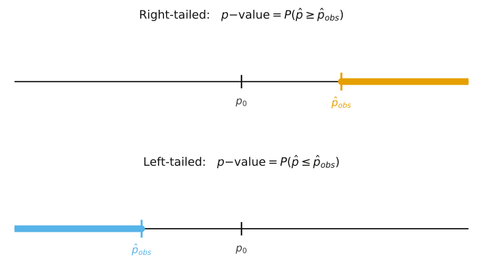
9 Inference for Population Proportions
Before you begin, click to expand the box below to review the process for importing a dataset.
- Open the Data toolbox in Rguroo.
- From the Data Import dropdown, select Dataset Repository.
- In the top search box, type kozak, then select the Statistics Using Technology – Kozak repository.
- In the middle search box, type the first few letters of the dataset name, and choose your desired dataset name that appears in the lower panel.
- Click the . The dataset will be imported to your Rguroo account.
- Click to exit the dialog.
- To view the dataset, double-click the dataset name under the Data toolbox list.
In the foundations chapter, we developed the logic of statistical inference — null and alternative hypotheses, the two types of error, the significance level, the p-value and critical region approaches to making a decision, and the idea of a confidence interval — without performing any computations. That development and reasoning do not depend on which parameter we study. In this chapter we put it to work for a population proportion \(p,\) filling in the parameter-specific machinery the foundations chapter deferred: the statistics and their sampling distribution, the calculations that produce a p-value and a critical region, and the software steps to carry them out in Rguroo. We consider both one-population and two-population settings for proportions.
Because the conceptual framework is already in place, this chapter focuses on computation. We will recall each idea briefly as we use it, with a pointer back to the foundations chapter for the full discussion, and spend our effort on how the ideas are actually carried out for a proportion. The same pattern will repeat in the next chapter for a population mean: new computations, the same framework.
We begin with hypothesis testing for one population proportion.
9.1 Hypothesis Testing: Concepts and Setup
In many real situations, we encounter numerical claims about population proportions: the proportion of teenagers who use a particular app, the proportion of adults who meet health guidelines, or the proportion of students who rely on social media for news. But how can we determine whether such claims are reasonable? When does sample evidence support a claim, and when should we question it?
To see how we might answer such questions, we will work through examples and develop the reasoning needed to evaluate claims and reach conclusions. We begin by establishing the framework and notation we will use throughout this chapter.
9.1.1 Setting the Stage: A Running Example
Suppose we want to know what proportion of students at our university prefer online classes. The population is all students at our university. The response variable is class mode preference, a categorical variable (also called a factor) that classifies each student into one of two categories: prefers online classes or does not prefer online classes. We define “prefers online classes” as a success and the other category as a failure.
In statistics, the terms success and failure do not imply that one outcome is good and the other is bad. A success simply refers to the outcome we are interested in studying, while a failure refers to the other outcome. For example, if we are studying the proportion of manufactured parts that are defective, we might define a defective part as a success. Similarly, if we are studying the proportion of patients who experience a side effect from a medication, experiencing the side effect could be defined as a success. In both cases, “success” identifies the outcome of interest, not a desirable outcome.
The parameter of interest is the population proportion, denoted by \(p\)—the fraction of all students at our university who prefer online classes. Since we cannot survey every student, we collect data from a random sample and use it to learn about \(p.\)
This example illustrates the key elements of proportion inference:
- A population with a characteristic we want to measure
- A categorical response variable with two outcomes (success/failure)
- A parameter \(p\) representing the true population proportion of successes
- A sample from which we compute a statistic to estimate \(p\)
Let’s develop this framework more formally.
9.1.2 From Samples to Statistics
When we collect a sample of size \(n,\) we count how many individuals have a success outcome. Before the sample is collected, this count is unknown, so we treat it as a random variable and denote it by \(X.\) The corresponding sample proportion is also a random variable, given by \(\hat{p}=X/n\) (read “p-hat”).
After the data are collected, we observe the count of successes in our sample, which we denote by \(x_{\text{obs}}\) (read “x-observed”). The corresponding observed sample proportion is \(\hat{p}_{\text{obs}}=\frac{x_{\text{obs}}}{n}\) (read “p-hat-observed”) which provides an estimate of the population proportion \(p.\)
In our example of students who prefer online classes, suppose we randomly select \(n = 100\) students. Before we collect the sample, \(X\) represents the number of students who will say they prefer online classes in a random sample of \(n=100\) students. The value of \(X\) could be anywhere from 0 to 100. Correspondingly, \(\hat{p}\) represents the proportion of students in the sample who say that they prefer online classes. After we survey the students, suppose 62 say they prefer online classes. Then, the observed count is \(x_{\text{obs}} = 62\) and the observed proportion is \(\hat{p}_{\text{obs}} = 62/100 = 0.62\) or 62%. .
Notation Summary
As we work through the examples in this chapter, it may be helpful to keep the following symbols and their meanings in mind.
| Symbol | Name | Description |
|---|---|---|
| \(p\) | Population proportion | The true, unknown proportion in the population |
| \(n\) | Sample size | The number of individuals in the sample |
| \(X\) | Random variable (count) | The number of successes across all possible samples of size \(n\) |
| \(x_{\text{obs}}\) | Observed count | The actual number of successes in our sample |
| \(\hat{p}\) | Random variable (proportion) | The sample proportion \(X/n\) across all possible samples of size \(n\) |
| \(\hat{p}_{\text{obs}}\) | Observed sample proportion | The proportion of success we observed in our sample; estimate of \(p\) computed as \(x_{\text{obs}}/n\) |
Example 9.1 (Daily YouTube Use Among Teens) According to a Pew Research Center report, about 71% of U.S. teenagers say they visit YouTube every day (Pew Research Center, Teens, Social Media and Technology, 2023).
Suppose a school district claims that more than 70% of students in its district use YouTube daily. To examine this claim, a random sample of \(n=20\) students is selected, and 17 of them report that they use YouTube daily.
Describe or compute the following related to the claim:
- The response variable and its possible categories
- The success category of the response variable
- The population of interest
- The parameter of interest \(p\)
- The sample
- The statistic \(X\) and its observed value \(x_{\text{obs}}\)
- The observed sample proportion \(\hat{p}_{\text{obs}}\) that is an estimate of \(p\)
Example 9.2 (Physical Inactivity Among Adults) The World Health Organization reports that approximately 31% of adults worldwide do not meet recommended levels of physical activity (World Health Organization, 2024).
Suppose a national health agency hopes that fewer than 35% of adults in its country are physically inactive. To examine this claim, a random sample of \(n=50\) adults is selected, and 10 of them are found to be physically inactive.
Describe, and when relevant compute, the following related to the claim:
- The response variable and its possible categories
- The success category of the response variable
- The population of interest
- The parameter of interest \(p\)
- The sample
- The statistic \(X\) and its observed value \(x_{\text{obs}}\)
- The observed sample proportion \(\hat{p}_{\text{obs}}\) that is an estimate of \(p\)
To use sample evidence to evaluate a claim about a population proportion, we first need to state clearly the claims we are considering. Because our decision is based on a sample rather than the entire population, there is always a possibility of reaching the wrong conclusion. As we saw in Chapter 8, we might reject a claim that is actually true, or we might fail to reject a claim that is actually false. These two possibilities correspond to Type I and Type II errors, which we will now consider in the context of inference for a population proportion.
9.1.3 Null and Alternative Hypotheses and Errors for a Proportion
The foundations chapter (Section 8.3) developed the null and alternative hypotheses, the three forms they take, and the two types of error in full. Here, we briefly review the notation for hypothesis tests involving a population proportion and then apply these ideas to our examples.
For a population proportion, the alternative hypothesis \(H_a\) is the claim we seek evidence for, and the null hypothesis \(H_0\) is its complement, the value or range we assume true unless the data force us to abandon it. Both are statements about the population proportion \(p,\) not about the sample, so they are written using \(p\) and not \(\hat{p}_{\text{obs}}.\) Writing \(p_0\) for the boundary value that separates the null from the alternative, the three forms are:
\[ \begin{aligned} \text{Case 1: } &\begin{cases} H_0: p \leq p_0 \\ H_a: p > p_0 \end{cases} \qquad \text{Case 2: } &\begin{cases} H_0: p \geq p_0 \\ H_a: p < p_0 \end{cases} \\[1em] \text{Case 3: } &\begin{cases} H_0: p = p_0 \\ H_a: p \neq p_0 \end{cases} \end{aligned} \] Cases 1 and 2 are one-sided and Case 3 is two-sided, exactly as in Section 8.3.1.
Recall too the two ways a test can be wrong: a Type I error rejects \(H_0\) when \(H_0\) is in fact true, and a Type II error fails to reject \(H_0\) when \(H_a\) is in fact true (see Section 8.4.1). The following examples write the hypotheses and interpret both errors for our three proportion scenarios.
Example 9.4 (Daily YouTube Use Among Teens (continued)) Recall Example 9.1 where a school district was interested to test the claim that more than 70% of students in its district use YouTube daily.
- State the null and alternative hypotheses in words.
- Write the null and alternative hypotheses using mathematical notation.
- Describe what happens if a Type I error occurs in the context of the problem.
- Describe what happens if a Type II error occurs in the context of the problem.
Example 9.5 (Physical Inactivity Among Adults (continued)) Recall Example 9.2 where a national health agency wanted to examine the claim that fewer than 35% of adults in its country are physically inactive.
- State the null and alternative hypotheses in words.
- Write the null and alternative hypotheses using mathematical notation.
- Describe what happens if a Type I error occurs in the context of the problem.
- Describe what happens if a Type II error occurs in the context of the problem.
9.1.4 Homework for Section 9.1
For each of the following scenarios, describe or compute the items listed below as they relate to the research question:
- The response variable and its possible categories
- The success category of the response variable
- The population of interest
- The parameter of interest \(p\)
- The sample
- The statistic \(X\) and its observed value \(x_{\text{obs}}\)
- The observed sample proportion \(\hat{p}_{\text{obs}}\) that is an estimate of \(p\)
- State the null and alternative hypotheses in words.
- Write the null and alternative hypotheses using mathematical notation.
- Describe what happens if a Type I error occurs in the context of the problem.
- Describe what happens if a Type II error occurs in the context of the problem.
Arizona Marijuana Legalization A poll conducted by The Arizona Republic/Morrison/Cronkite News, published on October 20, 2016, surveyed 779 registered voters in Arizona between October 10 and October 15, 2016. Of those surveyed, 390 reported favoring Proposition 205, which would legalize marijuana for adults (Sanchez, 2016). At the same time, 55% of Colorado residents supported the legalization of marijuana. Do Arizona registered voters differ from Colorado residents in their support for marijuana legalization?
Australian Unemployment Outlook In July 1997, 47% of Australians surveyed believed that unemployment would increase. In November 1997, the same question was asked again in a poll of 631 Australians, and 284 of them said they believed unemployment would increase (Morgan Gallup Poll, 2013). Did Australian sentiment about unemployment shift between July and November of 1997?
Arkansas Identity Theft Complaints According to the February 2008 Federal Trade Commission report on consumer fraud and identity theft, 23% of all complaints in 2007 were for identity theft. In that same year, Arkansas recorded 1,601 identity theft complaints out of a total of 3,482 consumer complaints (Consumer Fraud and, 2008). Was the proportion of identity theft complaints in Arkansas larger than the national figure of 23%?
Alaska Identity Theft Complaints According to the February 2008 Federal Trade Commission report on consumer fraud and identity theft, 23% of all complaints in 2007 were for identity theft. In that same year, Alaska recorded 321 identity theft complaints out of a total of 1,432 consumer complaints (Consumer Fraud and, 2008). Was Alaska’s proportion of identity theft complaints significantly less than the national proportion of 23%?
Kennedy Assassination Conspiracy Belief In 2001, a Gallup poll found that 81% of American adults believed there was a conspiracy behind the death of President Kennedy. In 2013, the same question was posed to a Gallup poll of 1,039 American adults, and 634 of them believed there was a conspiracy behind the assassination (Gallup News Service, 2013). Is there evidence that American belief in a conspiracy behind President Kennedy’s assassination changed between 2001 and 2013?
Autism Spectrum Disorder in Arizona In 2008, 507 out of 32,601 children in Arizona were diagnosed with Autism Spectrum Disorder (ASD) (Autism and Developmental, 2008). Nationally, 1 in 88 children are diagnosed with ASD (CDC Features, 2013). Is the rate of ASD diagnosis among children in Arizona larger than the national rate?
Graduate Degree Attainment: GSS2024 According to the U.S. Census Bureau’s 2024 educational attainment data, approximately 15% of U.S. adults aged 25 and older have earned a graduate degree, defined as a master’s degree, professional degree, or doctoral degree (U.S. Census Bureau, 2025). The GSS2024 dataset contains responses from \(n = 388\) U.S. adults. The variable Degree records the highest degree earned by each respondent, and 33 of the 388 respondents reported a graduate degree as their highest level of education. Does the GSS2024 data provide evidence that the proportion of U.S. adults who hold a graduate degree differs from the 15% reported by the U.S. Census Bureau?
 The dataset for this exercise is available in the Rguroo dataset repository Kozak, with the dataset name GSS2024.
The dataset for this exercise is available in the Rguroo dataset repository Kozak, with the dataset name GSS2024.
Code book for Dataset GSS2024 is given here.
9.2 Making a Decision about a Population Proportion
For a two-sided test, an observed sample proportion either above or below the null value can provide evidence against \(H_0.\) For example, in the social media example with \(H_0: p = 0.36\) versus \(H_a: p \neq 0.36,\) a sample proportion that differs from \(0.36\) in either direction could provide evidence in favor of \(H_a.\) However, simply observing that \(\hat{p}_{\text{obs}}\) differs from \(0.36\) is not enough to reject \(H_0.\) Some difference is expected because of random sampling variation. We need to perform a hypothesis test to determine whether the observed difference is large enough to provide sufficient evidence against \(H_0.\)
For a one-sided test, there is an additional consideration: the observed sample proportion must first be in the direction specified by \(H_a\) to provide evidence against \(H_0.\) For instance, in Example 9.1, the Daily YouTube Use Among Teens example, the hypotheses are \(H_0: p \leq 0.70\) versus \(H_a: p > 0.70.\) If a sample of \(n = 20\) students resulted in only \(x_{\text{obs}} = 12\) students reporting daily use, then \(\hat{p}_{\text{obs}} = \frac{12}{20} = 0.60.\) Since \(0.60\) falls within the values specified by \(H_0\) rather than in the direction of \(H_a,\) this sample result clearly does not provide evidence against \(H_0\) in favor of \(H_a.\)
On the other hand, if \(\hat{p}_{\text{obs}}\) were greater than \(0.70,\) being in the direction of \(H_a\) would not by itself be enough to reject \(H_0.\) We would still need to perform the hypothesis test to determine whether the observed result is sufficiently far from the null value to be unlikely to occur by random chance, assuming \(H_0\) is true.
Now consider sample results that point in the direction of \(H_a.\) For the YouTube example (\(H_a: p > 0.70\)), \(x_{\text{obs}} = 17\) out of \(n = 20\) gives \(\hat{p}_{\text{obs}} = 0.85,\) which is greater than \(0.70.\) For the physical inactivity example (\(H_a: p < 0.35\)), \(x_{\text{obs}} = 10\) out of \(n = 50\) gives \(\hat{p}_{\text{obs}} = 0.20,\) which is less than \(0.35.\) For the social media example (\(H_a: p \neq 0.36\)), \(x_{\text{obs}} = 9\) out of \(n = 15\) gives \(\hat{p}_{\text{obs}} = 0.60,\) which is noticeably different from \(0.36.\) Each of these results points in the direction of \(H_a.\) But is that enough to reject \(H_0\)?
Not necessarily!
Consistency With \(H_a\) Is Not the Same as Strong Evidence in Favor of \(H_a\)
A sample result that points in the direction of \(H_a\) does not by itself constitute strong evidence in favor of \(H_a.\) Because of sampling variability, such a result can occur by chance even when \(H_0\) is true. The key question is whether the sample result would be unlikely to occur by chance if \(H_0\) were true. If so, we have strong evidence against \(H_0\) and in favor of \(H_a.\)
We now turn to actually carrying out a hypothesis test for a proportion. Recall from Section 8.4.2 that, because reducing one type of error tends to increase the other, we control the probability of a Type I error by holding it to a small, prespecified significance level \(\alpha.\) Recall also that there are two equivalent ways to reach a decision: the p-value approach and the critical region approach. These approaches always lead to the same decision.
There are two methods we will use to carry out a hypothesis test for one population proportion: a large-sample approach based on the normal distribution and an exact approach based on the binomial distribution. We begin with the large-sample approach in Section 9.3, which relies on the central limit theorem and requires a sufficiently large sample for the normal approximation to work well. We then consider the exact binomial approach in Section 9.4, which uses the binomial distribution directly and does not require a large sample.
It is important to distinguish these two methods from the p-value and critical region approaches. The large-sample and exact binomial methods determine how we calculate the probabilities for the test. The p-value and critical region approaches determine how we use those probabilities to make a decision about \(H_0.\)
The exact binomial method is an ideal choice when we want to avoid relying on a large-sample approximation because it uses the binomial distribution directly to calculate exact probabilities. It does not require a large sample for the normal approximation to be valid. Nevertheless, there are good reasons to begin with the large-sample approach. Most importantly, the basic ideas generalize naturally to other inference problems, such as comparing two population proportions and drawing inferences about population means. In addition, large-sample methods have historically been widely used, so you will frequently encounter them in published research. Finally, because the large-sample approach builds on the familiar normal distribution, it provides an accessible starting point for learning how hypothesis tests are carried out.
9.3 Large Sample Hypothesis Testing
The large sample approach rests on the Central Limit Theorem (CLT), which you have already seen in Chapter 7. Recall that the CLT tells us that, for a sufficiently large sample, the sampling distribution of a sample mean is approximately normal, even when the population distribution itself is not normal. At first, this may seem unrelated to proportions: the CLT concerns sample means, while our interest here is in a sample proportion. However, as we will see next, a sample proportion can itself be viewed as a sample mean. This connection allows us to apply the CLT directly to sample proportions and provides the foundation for the large-sample approach.
9.3.1 A Sample Proportion Is a Mean
Suppose we record whether each individual in our sample has the characteristic of interest by assigning a value of 1 to each success and a value of 0 to each failure. For example, in the YouTube study (Example 9.1), a student who uses YouTube daily receives a 1, and a student who does not receives a 0. If our sample of \(n = 20\) students produced 17 daily users, the data would consist of 17 ones and 3 zeros. The sum of these 20 values is 17, and their average is
\[ \frac{17}{20} = 0.85, \]
which is exactly the observed sample proportion, \(\hat{p}_{\text{obs}}.\)
More generally, if a sample of size \(n\) produces some number of successes, then
\[ \hat{p}_{\text{obs}} = \frac{\text{number of successes}}{n} = \frac{\text{sum of the 0/1 values}}{n}. \]
Thus, when successes and failures are coded as 1 and 0, the observed sample proportion is simply the mean of the zeros and ones in the sample.
The same idea applies to any random sample of size \(n.\) For each possible sample, the sample proportion \(\hat{p}\) is the mean of its 0/1 values. Thus, a sample proportion is a special case of a sample mean: it is the mean of observations that can take only the values 0 and 1.
This connection allows us to apply the Central Limit Theorem (CLT) to sample proportions. Recall that the CLT tells us that, for a sufficiently large sample size, the sampling distribution of a sample mean is approximately normal. Since a sample proportion is a sample mean based on 0/1 observations, its sampling distribution is also approximately normal for a sufficiently large sample.
9.3.2 Applying the Central Limit Theorem to \(\hat p\)
Since \(\hat{p}\) is a sample mean of 0s and 1s, its sampling distribution follows the same general pattern as other sample means. For a population with proportion of successes \(p,\) the sampling distribution of \(\hat{p}\) has:
- Mean: \(\mu_{\hat{p}}=p\)
- Standard deviation: \(\sigma_{\hat{p}} = \sqrt{\dfrac{p(1-p)}{n}}\)
This standard deviation is often called the standard error of \(\hat{p}.\) It measures how much we expect \(\hat{p}\) to vary from sample to sample. By the CLT, when \(n\) is sufficiently large, \(\hat{p}\) follows approximately a normal distribution:
\[ \hat{p} \sim N\!\left(p,\; \sqrt{\frac{p(1-p)}{n}}\right). \]
Since \(p\) is unknown, we need to specify a value for it to use this result for inference. Recall that in hypothesis testing we assume the null hypothesis is true, and that the maximum Type I error occurs at the boundary value \(p_0\) of \(H_0\) (see Section 8.3.2). We therefore evaluate the sampling distribution of \(\hat{p}\) at \(p = p_0,\) giving:
\[ \hat{p} \sim N\!\left(p_0,\; \sqrt{\frac{p_0(1-p_0)}{n}}\right). \]
We call this the null distribution of \(\hat{p},\) since it describes the behavior of \(\hat{p}\) at the boundary value \(p_0\) of the null hypothesis \(H_0,\) where the Type I error is at its maximum. This normal null distribution of \(\hat{p}\) is the foundation for decisions in hypothesis testing in the large sample method.
An option is to use a standardized statistic called the \(z\)-score, obtained by subtracting \(p_0\) from \(\hat{p}\) and dividing by the standard error:
\[ z = \frac{\hat{p} - p_0}{\sqrt{\dfrac{p_0(1-p_0)}{n}}}. \]
This unit-less quantity is then compared to a standard normal distribution. In this textbook, we instead work directly with \(\hat{p}\) and compare it to its null distribution. This requires fewer computational steps and, more importantly, keeps our decisions on the original scale — conclusions are about a sample proportion rather than an abstract standardized value.
9.3.3 What is Considered a Large Sample Size?
What constitutes a large sample size for the normal approximation to hold? A common rule of thumb is to check the expected numbers of successes and failures. In particular, the approximation is typically considered reliable when \(np_0 \geq 10\) and \(n(1 - p_0) \geq 10.\) When both of these conditions are satisfied, the binomial distribution tends to be reasonably symmetric, and the normal model provides a good fit.
To illustrate the 10–10 rule, consider the YouTube Daily Use example, where \(n=20\) and \(p_0=0.70\):
- Expected successes: \(np_0 = 20\times 0.70 = 14\)
- Expected failures: \(n(1-p_0) = 20\times 0.30 = 6\)
Since the expected number of failures is less than 10, the 10–10 rule is not satisfied. Therefore, the normal approximation may not be reliable for this example.
In contrast, for the Physical Inactivity example, where \(n=50\) and \(p_0=0.35\):
- Expected successes: \(np_0 = 50\times 0.35 = 17.5\)
- Expected failures: \(n(1-p_0) = 50\times 0.65 = 32.5\)
Since both values exceed 10, the 10–10 rule is satisfied. Therefore, the normal approximation is appropriate for the Physical Inactivity example.
9.3.4 Decision Based on a p-value
We explained the idea behind the p-value approach in Section 8.5. In this section we show how p-values are computed using the large sample method for a population proportion.
To compute a p-value, we first need to identify which possible sample results provide at least as much support for \(H_a\) as the result we actually observed. For this purpose, we define what we call the \(H_a\) support.
The \(H_a\) support is the set of all possible values of the sample proportion \(\hat{p}\) that are at least as favorable to \(H_a\) as the observed sample proportion \(\hat{p}_{\text{obs}}.\)
For one-sided tests, this is straightforward: as shown in Figure 9.1, if \(H_a: p > p_0,\) larger values of \(\hat{p}\) are more favorable to \(H_a,\) so the \(H_a\) support consists of \(\hat{p}_{\text{obs}}\) and all values above it. Symmetrically, for \(H_a: p < p_0,\) the \(H_a\) support consists of \(\hat{p}_{\text{obs}}\) and all values below it.
For the two-sided test \(H_a: p \neq p_0,\) the \(H_a\) support consists of values in both tails of the null distribution that are at least the same distance \(d\) from \(p_0\) as \(\hat{p}_{\text{obs}}\) (see Figure 9.2). Because the normal null distribution is symmetric about \(p_0,\) these values are symmetrically positioned about \(p_0\) . If \(\hat{p}_{\text{obs}} > p_0,\) the \(H_a\) support is the set of values \(\hat{p} \geq \hat{p}_{\text{obs}}\) together with their mirror image relative to \(p_0\) in the left tail. If \(\hat{p}_{\text{obs}} < p_0,\) the \(H_a\) support is the set of values \(\hat{p} \leq \hat{p}_{\text{obs}}\) together with their mirror image relative to \(p_0\) in the right tail.

Once the \(H_a\) support has been identified, the p-value is the probability, assuming \(H_0\) is true, that \(\hat{p}\) falls in the \(H_a\) support. For the large-sample method, we compute this probability using the normal null distribution at the boundary value \(p=p_0.\) Thus, \[ \text{p-value} = P(\hat{p} \text{ is in the } H_a \text{ support}), \text{ assuming that } p=p_0. \] Recall from Section 8.3.2 why we use the boundary value \(p=p_0.\) A more detailed explanation is provided in the optional Section 9.5.
As explained in Section 8.5, we compare the p-value to the significance level \(\alpha\) to make our decision: \[ \text{If p-value} \leq \alpha, \text{ reject } H_0. \qquad \text{If p-value} > \alpha, \text{ fail to reject } H_0. \] Recall that a small p-value means that \(\hat{p}_{\text{obs}}\) and values at least as supportive of \(H_a\) would be unlikely to occur if \(H_0\) were true. Thus, a small p-value provides evidence against \(H_0\) and in favor of \(H_a.\)
The p-value approach also indicates the strength of the evidence: a very small p-value indicates strong evidence against \(H_0,\) while a p-value just below \(\alpha\) indicates weaker evidence.
Example 9.7 (Physical Inactivity Among Adults - p-value Approach) Recall Example 9.2. A national health agency hopes that fewer than 35% of adults in its country are physically inactive. A random sample of \(n = 50\) adults was selected and \(x_{\text{obs}} = 10\) were found to be physically inactive. The hypotheses are: \[ \begin{cases} H_0: p \geq 0.35 \\ H_a: p < 0.35 \end{cases} \]
- Check the 10-10 rule to see whether the conditions for the normal approximation hold.
- Determine the \(H_a\) support.
- Write a probability statement that describes the p-value.
- Use Rguroo’s Proportion Inference function to obtain the p-value, and state your conclusion in the context of the problem using significance level of \(\alpha=0.05.\)
🔎 Solution
a. To check the large sample condition, we compute the expected number of successes and failures under \(H_0.\) Using the boundary value \(p_0 = 0.35\):
\[np_0 = 50 \times 0.35 = 17.5 \geq 10\]
\[n(1 - p_0) = 50 \times 0.65 = 32.5 \geq 10.\]
Both conditions are satisfied, so the large sample normal approximation is appropriate for this example.
b. We have \(x_{\text{obs}}=10\) and \(n=50,\) which gives \[ \hat{p}_{\text{obs}}=\frac{10}{50}=0.20. \] Since the alternative hypothesis is \(H_a: p<0.35,\) smaller values of \(\hat{p}\) provide stronger evidence in favor of \(H_a.\) Therefore, the \(H_a\) support consists of all sample proportions less than or equal to the observed value:
\[ \textbf{H}_a\ \textbf{Support:}\;\; \hat{p} \le 0.20. \]
c. The p-value is computed as \[ \text{p-value} = P\left(\hat{p} \le 0.2),\; \text{ assuming } p=0.35\right. \]
d. Click to expand the box below to see how to use the Proportion Inference function to obtain the p-value.
Open the Analytics toolbox in Rguroo.
From the Analysis dropdown, select Proportion Inference → One Population. This opens the One Population Proportion Inference dialog.
In the Data section of the dialog, enter the following:
- In the Factor Label textbox, type a label for the categorical variable. In Rguroo, a “factor” refers to a categorical variable. For this example, enter Physical Activity.
- In the Success Label textbox, type Inactive. A success corresponds to an inactive individual.
- In the Failure Label textbox, type Active.
- In the Sample Size textbox, type 50.
- In the # of Successes textbox, type 10.
In the Test of Hypothesis section of the dialog, enter the following:
- In the Alternative Hyp. p dropdown, select < and enter 0.35.
- Select the Large sample z (p=p0) checkbox to use the large sample normal distribution method.
- Leave the Significance Level textbox at the default value of 0.05.
Click the preview icon
 to view the output.
to view the output.Click the
 button and save the result as PhysicalProp.
button and save the result as PhysicalProp.
Rguroo One-Population Proportion dialogs
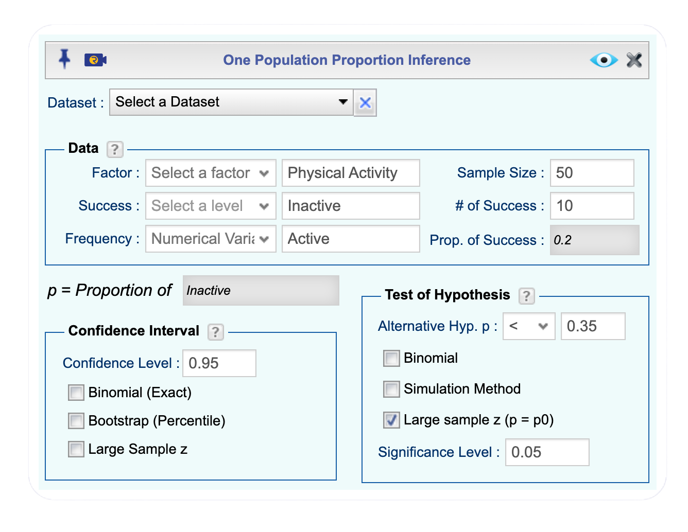
Click to expand the box below to see the Rguroo output.
Rguroo output: One-Population Proportion Inference - Physical Inactivity
Figure 9.5 is the p-value graph from the Rguroo output with its left panel showing the p-value graph in the scale of the data. The red colored area corresponds to the \(H_a\) support, consisting of all sample proportions \(\hat{p} \le 0.20.\) The area under the curve over this region is the p-value, 0.01308. Since this p-value is less than the significance level of 0.05, we reject \(H_0\) and conclude that there is sufficient evidence to support the claim that fewer than 35% of adults in the population are physically inactive.
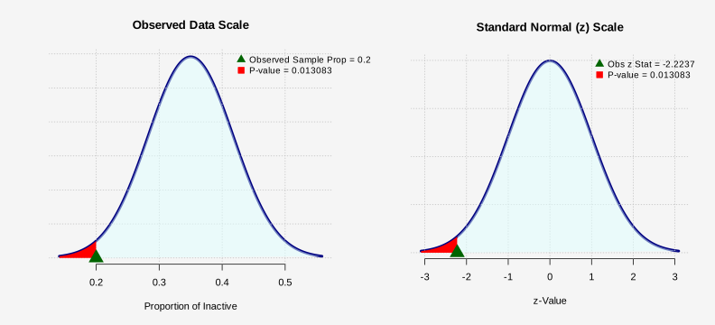
Using Raw Data
So far, we have performed proportion inference using a summary of the sample, namely the sample size \(n\) and the observed count \(x_{\text{obs}}.\) In practice, however, we often work directly with a raw dataset rather than a pre-computed summary. Now, we show how to perform proportion inference from raw data using Rguroo.
We illustrate this using data from the General Social Survey (GSS), one of the longest-running and most widely used surveys in the United States. Conducted by NORC at the University of Chicago, the GSS has collected data on the attitudes, behaviors, and characteristics of American adults since 1972, covering topics such as social values, political views, religion, and lifestyle. The dataset that we use here, GSS2024, is a subset of the 2024 GSS data. After removing observations with missing values, the dataset contains \(n = 388\) respondents.
Example 9.9 (Marijuana Legalization: p-Value Approach Using Raw Data) The GSS2024 dataset contains responses from \(n = 388\) adults in the United States. The variable Grass records whether each respondent supports the legalization of marijuana, with possible responses of Yes (supports legalization) or No (does not support legalization). A researcher claims that more than 70% of American adults support the legalization of marijuana.
- Write the null and alternative hypotheses.
- Check the 10-10 rule to determine whether the conditions for the normal approximation hold.
- Determine the \(H_a\) support.
- Write a probability statement that describes the p-value.
- Use Rguroo’s Proportion Inference function to obtain the p-value, and state your conclusion in the context of the problem using significance level of \(\alpha=0.05.\)
 The dataset for this example is available in the Rguroo dataset repository Kozak, with the dataset name GSS2024. Table 9.1 displays the first six rows of the dataset. A complete description of the variables is provided in the dataset code book that follows.
The dataset for this example is available in the Rguroo dataset repository Kozak, with the dataset name GSS2024. Table 9.1 displays the first six rows of the dataset. A complete description of the variables is provided in the dataset code book that follows.
| X | age | Sex | Degree | Race | Grass | Life | Tax | Mode |
|---|---|---|---|---|---|---|---|---|
| 1 | 30 | Female | HS | White | Yes | Very satisfied | High | In Person |
| 2 | 64 | Male | Bachelor | White | Yes | Pretty satisfied | High | Phone |
| 3 | 73 | Female | Graduate | White | Yes | Pretty satisfied | High | In Person |
| 4 | 74 | Female | JC | White | Yes | Pretty satisfied | High | In Person |
| 5 | 56 | Female | JC | White | No | Very satisfied | High | In Person |
| 6 | 57 | Female | No HS | Other | Yes | Pretty satisfied | OK | In Person |
Code book for Dataset GSS2024
Dataset Name: GSS2024
This dataset is a subset of the 2024 General Social Survey (GSS) data, obtained from NORC at the University of Chicago. After removing observations with missing values, the dataset contains \(n = 388\) individuals.
The variables included in this dataset are described below.
Age: Age of the respondent (in years).
Sex: Sex of the respondent
- Male
- Female
Degree: Highest degree earned by the respondent.
- No HS (Less than high school)
- HS (High school)
- JC (Junior college)
- Bachelor (Bachelor’s degree)
- Graduate (Graduate degree)
Race: Race of the respondent
- White
- Black
- Other
Grass: Respondent’s opinion on whether marijuana should be made legal
- Yes (supports legalization)
- No (does not support legalization)
Life: Respondent’s general satisfaction with life
- Very satisfied
- Pretty satisfied
- Not too satisfied
Tax: Respondent’s opinion on whether taxes are too high
- High (Too high)
- OK (About right)
- Low (Too low)
Mode: Mode of data collection
- In-person
- Phone
- Web
Source
Smith, T. W., Davern, M., Freese, J., & Morgan, S. L. General Social Survey, 1972–2024. NORC at the University of Chicago. https://gss.norc.org
🔎 Solution
a. The null and alternative hypotheses are \(H_0: p \leq 0.70.\) and \(H_a: p > 0.70.\)
b. To check the large sample condition, we compute the expected number of successes and expected number of failures under \(H_0.\) Using the boundary value \(p_0 = 0.70\):
\[np_0 = 388 \times 0.70 = 271.6 \geq 10\]
\[n(1 - p_0) = 388 \times 0.30 = 116.4 \geq 10.\]
Both conditions are satisfied, so the normal approximation is appropriate for this example.
c. From the Rguroo output, we have \(x_{\text{obs}}=282\) and \(n=388,\) which gives \[ \hat{p}_{\text{obs}}=\frac{282}{388}\approx 0.727. \] Since the alternative hypothesis is \(H_a: p>0.70,\) larger values of \(\hat{p}\) provide stronger evidence in favor of \(H_a.\) Therefore, the \(H_a\) support consists of all sample proportions greater than or equal to the observed value: \[ \textbf{H}_a\ \textbf{Support:}\;\; \hat{p} \ge 0.727. \]
d. The p-value is computed as \[ \text{p-value} = P\left(\hat{p} \ge 0.727\right), \text{assuming } p=0.70. \]
e. Click to expand the box below to see how to use the Proportion Inference function to obtain the p-value.
Before following the instructions below, make sure to import the GSS2024 dataset from the books dataset repository.
Open the Analytics toolbox in Rguroo.
From the Analysis dropdown, select Proportion Inference → One Population. This opens the One Population Proportion Inference dialog.
From the Dataset dropdown select the dataset GSS2024.
Complete the Data section of the dialog as follows:
- In the Factor dropdown, select the variable Grass.
- In the Success dropdown, select Yes. The sample size, number of successes and proportion of successes textboxes fill-in automatically.
In the Test of Hypothesis section of the dialog, enter the following:
- In the Alternative Hyp. p dropdown, select > and enter 0.7.
- Select the Large sample z (p=p0) checkbox to use the large sample normal distribution method.
- In the Significance Level textbox enter 0.05 (this is the default value).
Click the preview icon
to view the output.Click the
button and save the result as GSS2024Pvalue.
Rguroo One-Population Proportion dialog
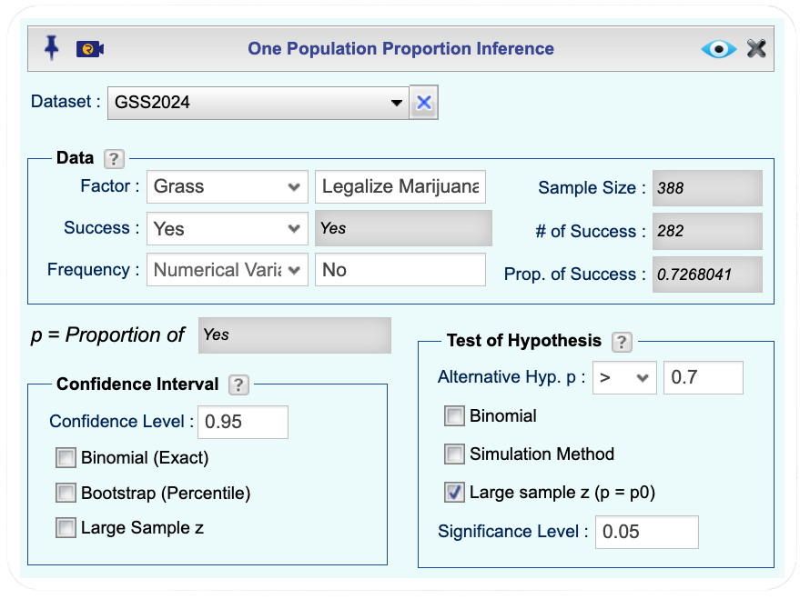
Click to expand the box below to see the Rguroo output.
Rguroo output: One-Population Proportion Inference - Marijuana Legalization
The left panel of Figure 9.11 shows the p-value graph from the Rguroo output in the scale of the data. The red colored area corresponds to the \(H_a\) support, consisting of all sample proportions \(\hat{p} \ge 0.7268.\) The area under the curve over this region is the p-value, 0.12463, as shown in the graph. Since this p-value is greater than the significance level of 0.05, we fail to reject \(H_0\) and conclude that there is not sufficient evidence to support that more than 70% of American adults support the legalization of marijuana.

9.3.5 Decision Based on a Critical Region
We now turn to the critical region approach, the other standard way to reach a decision. Recall from Section 8.6 that the critical region is the set of values of the statistic for which we reject \(H_0\) in favor of \(H_a.\) Whereas the p-value approach summarizes the evidence with a probability computed from the observed proportion \(\hat{p}_{\text{obs}},\) the critical region approach decides in advance which values of \(\hat{p}\) are extreme enough to reject \(H_0,\) and then simply checks whether \(\hat{p}_{\text{obs}}\) falls in the critical region.
The decision is governed by a decision rule: a rule that specifies which values of \(\hat{p}\) lead to rejecting \(H_0.\) For a one-sided test with \(H_a: p > p_0,\) large values of \(\hat{p}\) favor the alternative hypothesis, so the critical region lies in the right tail of the null distribution. To determine the critical region, we use the distribution of \(\hat{p}\) under the null hypothesis \(p=p_0,\) namely \[ \hat{p}\sim N\left(p_0, \sqrt{\frac{p_0(1-p_0)}{n}}\right). \] We choose the critical value so that the probability of falling in the critical region when \(H_0\) is true equals the significance level \(\alpha.\) The shape of the critical region — right tail, left tail, or both — depends on the alternative hypothesis, as shown in Figure 9.12.
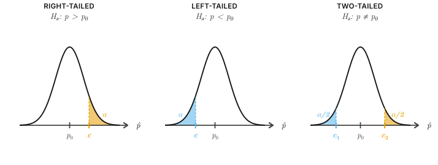
For the right-tailed test, we find the critical value \(c\) so that there is probability \(\alpha\) in the right tail: \[ P(\hat{p} \geq c)=\alpha. \] We then reject \(H_0\) if the observed sample proportion satisfies \(\hat{p}_{\text{obs}} \geq c.\)
Similarly, for a one-sided test with \(H_a: p < p_0,\) small values of \(\hat{p}\) favor the alternative hypothesis, so the critical region lies in the left tail. We find \(c\) such that \[ P(\hat{p} \leq c)=\alpha, \] and reject \(H_0\) if \(\hat{p}_{\text{obs}} \leq c.\)
For a two-sided test with \(H_a: p \neq p_0,\) both unusually small and unusually large values of \(\hat{p}\) favor the alternative hypothesis. The critical region therefore lies in both tails. We find lower and upper critical values, \(c_1\) and \(c_2,\) that leave probability \(\alpha/2\) in each tail: \[ P\left(\hat{p} \leq c_1 \right)=\frac{\alpha}{2} \qquad\text{and}\qquad P\left(\hat{p} \geq c_2 \right)=\frac{\alpha}{2}. \] We reject \(H_0\) if \(\hat{p}_{\text{obs}} \leq c_1\) or \(\hat{p}_{\text{obs}} \geq c_2.\)
In practice, we will use Rguroo’s One-Population Proportion inference function to find the critical region, as shown in the following examples.
Example 9.10 (Physical Inactivity Among Adults - Critical Region Approach) Recall Example 9.2. A national health agency hopes that fewer than 35% of adults in its country are physically inactive. A random sample of \(n = 50\) adults was selected and \(x_{\text{obs}} = 10\) were found to be physically inactive. The hypotheses are: \[ \begin{cases} H_0: p \geq 0.35 \\ H_a: p < 0.35 \end{cases} \]
Use Rguroo’s Proportion Inference function to obtain the critical region, and state your conclusion in the context of the problem.
🔎 Solution
As we have seen than the 10-10 rule is satisfied for this example, since \(np_0 = 50 \times 0.35 = 17.5 > 10\) and \(n(1 - p_0) = 50 \times 0.65 = 32.5 > 10.\)
To obtain critical regions in Rguroo, we use the same Rguroo steps as shown in the solution of Example 9.7 with the following additional steps, before you click on the preview icon  :
:
- Click the Details button to open the Advanced Features dialog.
- Click on the Test of Hypothesis tab, and in the Graphs section select Critical Region Graph.
- (optional) Uncheck the default p-value Graph.
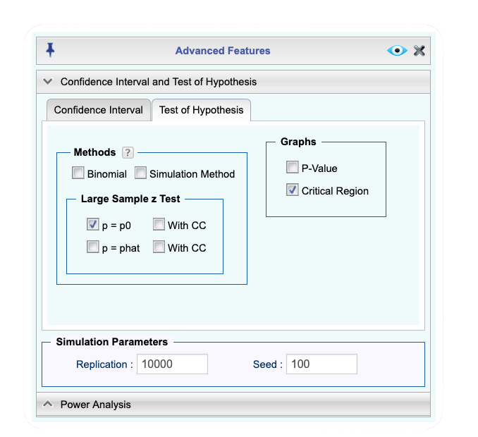
Click to expand the box below to see the Rguroo output.
Rguroo output: One-Population Proportion Inference - Physical Inactivity
The left panel of Figure 9.14 displays the critical region graph in the scale of the data, shown in the Rguroo output. The red shaded region corresponds to the critical region and consists of all sample proportions \[ \hat{p} \le 0.23905, \] shown below the graph.
The probability associated with the red-colored region is the significance level, 0.05. Since the observed sample proportion, \(\hat{p}_{\text{obs}}=0.20\) (shown by the green up-right triangle), falls within the critical region, we reject \(H_0\) and conclude that there is sufficient evidence to support the claim that fewer than 35% of adults in the population are physically inactive.

Example 9.11 (Marijuana Legalization - Critical Region Approach) Recall Example 9.9. A researcher claims that more than 70% of American adults support the legalization of marijuana. Using the GSS2024 dataset, which contains responses from \(n = 388\) respondents, test the researcher’s claim.
State the null and alternative hypotheses and use Rguroo’s Proportion Inference function to obtain the critical region. Finally, state your conclusion in the context of the problem using significance level \(\alpha = 0.05.\)
🔎 Solution
The hypotheses are: \[ \begin{cases} H_0: p \leq 0.70 \\ H_a: p > 0.70 \end{cases} \]
As we have seen that the 10-10 rule applies for this example, since \(np_0 = 388 \times 0.70 = 271.6 > 10\) and \(n(1 - p_0) = 388 \times 0.30 = 116.4 > 10.\)
To obtain critical regions in Rguroo, we use the same Rguroo steps as shown in the solution of Example 9.11 with the following additional steps, before you click on the preview icon  :
:
- Click the Details button to open the Advanced Features dialog.
- Click on the Test of Hypothesis tab, and in the Graphs section select Critical Region Graph.
- (optional) Uncheck the default p-value Graph.
Click to expand the box below to see the Rguroo output.
Rguroo output: One-Population Proportion Inference - Marijuana Legalization
The left panel of Figure 9.16 from the Rguroo output shows the critical region graph on the scale of the data. The red shaded region corresponds to the critical region and consists of all sample proportions \(\hat{p} \ge 0.73827.\)
The probability associated with this region is the significance level, \(\alpha = 0.05.\) Since the observed sample proportion, \(\hat{p}_{\text{obs}}=0.7268\) (displayed by the green triangle), does not fall within the critical region, we fail to reject \(H_0\) and conclude that there is not sufficient evidence to support that more than 70% of American adults support the legalization of marijuana.
![Two normal-distribution graphs illustrating a right-tailed critical region. In both graphs, the red shaded area in the right tail represents the critical region. A green triangle on the horizontal axis marks the critical value that defines the boundary of the critical region, and a second green triangle marks the observed sample proportion. In the left graph, the observed value lies outside the critical region, so the null hypothesis is not rejected. In the right graph, the observed value lies inside the critical region, so the null hypothesis is rejected.](Rguroo_html_output/Proportion Inference/GSS2024_ztest_cr_docx/G_crTestPropz.svg)
9.3.6 Homework for Section 9.3
For each of the scenarios described below, use Rguroo’s One-Population Proportion inference function with the Large Sample z (p=p0) option to carry out the hypothesis test at the given significance level. Before running the analysis, check whether the large sample condition is satisfied. If it is, continue with the following instructions:
- Before running the analysis, identify the following inputs for the Rguroo dialog:
- Factor Label: A descriptive name for the variable being studied
- Success: The outcome that counts as a success
- Failure: The outcome that counts as a failure
- Sample Size: The value of \(n\)
- # of Successes: The value of \(x_{\text{obs}}\)
- Proportion of …: A descriptive label for what the population proportion represents
State the null and alternative hypotheses.
Carry out the test using the p-value approach:
(i) Specify the \(H_a\) support.
(ii) State the p-value and determine whether you reject or fail to reject \(H_0.\)Carry out the test using the critical region (rejection region) approach:
(i) Specify the critical region.
(ii) Identify \(x_{\text{obs}}\) and determine whether you reject or fail to reject \(H_0.\)State your conclusion in the context of the problem.
Arizona Marijuana Legalization In Problem 1 (Arizona Marijuana Legalization) of Section 9.1.4, \(p\) is the true proportion of Arizona registered voters who support marijuana legalization. Do Arizona registered voters differ from Colorado residents in their support for marijuana legalization? The sample consisted of \(n = 779\) voters, of whom \(x_{\text{obs}} = 390\) favored legalization. Use \(\alpha = 0.05.\)
Australian Unemployment Outlook In Problem 2 (Australian Unemployment Outlook) of Section 9.1.4, \(p\) is the true proportion of Australians in November 1997 who believed unemployment would increase. Did Australian sentiment about unemployment shift between July and November of 1997? The sample consisted of \(n = 631\) Australians, of whom \(x_{\text{obs}} = 284\) believed unemployment would increase. Use \(\alpha = 0.05.\)
Arkansas Identity Theft Complaints In Problem 3 (Arkansas Identity Theft Complaints) of Section 9.1.4, \(p\) is the true proportion of consumer complaints in Arkansas that were for identity theft. Was the proportion of identity theft complaints in Arkansas greater than the national figure of 23%? The sample consisted of \(n = 3{,}482\) complaints, of which \(x_{\text{obs}} = 1{,}601\) were for identity theft. Use \(\alpha = 0.10.\)
Alaska Identity Theft Complaints In Problem 4 (Alaska Identity Theft Complaints) of Section 9.1.4, \(p\) is the true proportion of consumer complaints in Alaska that were for identity theft. Was Alaska’s proportion of identity theft complaints less than the national proportion of 23%? The sample consisted of \(n = 1{,}432\) complaints, of which \(x_{\text{obs}} = 321\) were for identity theft. Use \(\alpha = 0.05.\)
Kennedy Assassination Conspiracy Belief In Problem 5 (Kennedy Assassination Conspiracy Belief) of Section 9.1.4, \(p\) is the true proportion of American adults in 2013 who believed there was a conspiracy behind President Kennedy’s assassination. Is there evidence that American belief in a conspiracy behind President Kennedy’s assassination changed between 2001 and 2013? The sample consisted of \(n = 1{,}039\) adults, of whom \(x_{\text{obs}} = 634\) believed in a conspiracy. Use \(\alpha = 0.05.\)
Autism Spectrum Disorder in Arizona In Problem 6 (Autism Spectrum Disorder in Arizona) of Section 9.1.4, \(p\) is the true proportion of children in Arizona diagnosed with ASD. Is the rate of ASD diagnosis among children in Arizona greater than the national rate of 1 in 88 children? The sample consisted of \(n = 32{,}601\) children, of whom \(x_{\text{obs}} = 507\) were diagnosed with ASD. Use \(\alpha = 0.05.\)
Graduate Degree Attainment: GSS2024 In Problem 7 (Graduate Degree Attainment: GSS2024) of Section 9.1.4, \(p\) is the true proportion of U.S. adults who hold a graduate degree. Does the GSS2024 data provide evidence that the proportion of U.S. adults who hold a graduate degree differs from the 15% reported by the U.S. Census Bureau? Use \(\alpha = 0.01.\)
 The dataset for this exercise is available in the Rguroo dataset repository Kozak, with the dataset name GSS2024.
The dataset for this exercise is available in the Rguroo dataset repository Kozak, with the dataset name GSS2024.
Code book for Dataset GSS2024 is given here.
9.4 Exact Binomial Hypothesis Testing
In the previous section, we used the large-sample method to carry out a hypothesis test for a population proportion. This method uses the normal distribution to approximate the sampling distribution of \(\hat{p}\) and works well when the sample is sufficiently large. We now consider the exact binomial method, which uses the binomial distribution directly and therefore does not require a large-sample approximation. The basic reasoning of the hypothesis test remains the same: we determine how unusual the observed sample result would be if \(H_0\) were true and use either the p-value or critical region approach to make a decision. The main difference is the statistic we use. With the large-sample method, we worked with the sample proportion \(\hat{p}.\) With the exact binomial method, we work directly with \(X,\) the number of successes in the sample. Since \(\hat{p}=X/n,\) these two statistics contain the same information; we are simply expressing the sample result in a different way.
9.4.1 The Distribution of \(X\)
To use \(X\) for inference, we need to know its probability distribution. Since we are sampling from a population and counting successes, the binomial distribution provides the appropriate model. Recall from ?sec-binomial-probability-distribution that a random variable follows a binomial distribution when:
- The number of trials \(n\) is fixed
- Each trial results in one of two outcomes: success or failure
- The probability of success \(p\) is the same for every trial
- The trials are independent of one another
In our sampling context, each individual in the sample either has the characteristic of interest (success) or does not (failure). Since the sample is selected randomly, the trials are practically independent. The probability of success \(p\) is constant—it equals the population proportion. (Strictly speaking, sampling without replacement causes \(p\) to change slightly with each draw, but when the sample is small relative to the population, this change is negligible and we treat \(p\) as constant.)
Therefore, \[ X \sim \text{Binomial}(n, p). \]
This distribution will be the foundation for computing probabilities and making decisions about \(p.\)
9.4.2 Decision Based on a p-Value
The p-value approach measures how unusual the observed count \(x_{\text{obs}}\) would be if the null hypothesis were true, and rejects \(H_0\) when the data are sufficiently unusual under \(H_0.\) To make this concrete for a proportion, we evaluate probabilities at the boundary value \(p_0\) (see Section 8.3.2), using the binomial distribution of the count \(X.\)
Using the definition of \(H_a\) support from Section 8.5, the \(H_a\) support for the exact binomial method consists of the values of \(X\) that are at least as supportive of \(H_a\) as the observed value \(x_{\text{obs}}.\) The p-value then is the probability, assuming \(p=p_0,\) that \(X\) takes a value in the \(H_a\) support:
\[ \text{p-value} = P(X \text{ is a value in the } H_a \text{ support), assuming } p = p_0. \]
A small p-value is evidence against \(H_0.\)
What counts as “the \(H_a\) support” depends on the form of the alternative hypothesis.
Case 1: \(H_a: p > p_0\) (e.g., \(H_a: p > 0.70\))
Larger values of \(X\) are more supportive of \(H_a.\) The \(H_a\) support consists of \(x_{\text{obs}}\) and all values larger than \(x_{\text{obs}},\) so the p-value is \[ \text{p-value} = P(X \geq x_{\text{obs}}), \text{ assuming } p = p_0. \]
To understand Case 1, note that a larger value of \(X\) means more successes in the sample, which corresponds to a higher sample proportion \(\hat{p}.\) A higher sample proportion is less consistent with \(H_0\) and more supportive of the claim that the true population proportion exceeds \(p_0.\) For example, in the YouTube example where \(x_{\text{obs}} = 17\) out of \(n = 20,\) the \(H_a\) support consists of the values \(\{17, 18, 19, 20\}\) — the observed count and every larger possibility.
Case 2: \(H_a: p < p_0\) (e.g., \(H_a: p < 0.35\))
Smaller values of \(X\) are more supportive of \(H_a.\) The \(H_a\) support consists of \(x_{\text{obs}}\) and all values smaller than \(x_{\text{obs}},\) so the p-value is \[ \text{p-value} = P(X \leq x_{\text{obs}}), \text{ assuming } p = p_0. \]
Case 2 is the mirror image of Case 1: a smaller value of \(X\) means fewer successes in the sample, which corresponds to a lower sample proportion \(\hat{p}.\) A lower sample proportion is less consistent with \(H_0\) and more supportive of the claim that the true population proportion is less than \(p_0.\) For example, in the Physical Inactivity example where \(x_{\text{obs}} = 10\) out of \(n = 50,\) the \(H_a\) support is \(\{0, 1, 2, \ldots, 9, 10\}\) — the observed count and every smaller possibility.
Case 3: \(H_a: p \neq p_0\) (e.g., \(H_a: p \neq 0.36\))
A value \(x\) is in the \(H_a\) support if it is at least as unlikely as the observed value \(x_{\text{obs}}\) under \(H_0,\) that is, \[ P(X = x) \leq P(X = x_{\text{obs}}), \text{ assuming } p = p_0. \]
Such values can occur in either tail of the distribution.
The two-sided case is easiest to see in a picture. For the Social Media News example with \(x_{\text{obs}} = 9\) out of \(n = 15\) and \(p_0 = 0.36,\) Figure 9.17 shows the binomial distribution of \(X\) under \(H_0,\) where \(X \sim \text{Binomial}(15, 0.36).\)
The \(X\) values corresponding to the orange bars are the values of \(X\) whose probability under \(H_0\) is at most equal to \(P(X = 9).\) Therefore, the \(H_a\) support appears in both tails: large values \(9, 10, 11, \ldots\) on the right and small values \(0, 1\) on the left. The p-value is the total probability of the orange bars.
The decision rule using the p-value is the same as the one introduced in Section 8.5 and used with the large-sample method: we reject \(H_0\) when the p-value is less than or equal to the significance level \(\alpha.\) The interpretation is also the same. A small p-value means that the observed result and results at least as supportive of \(H_a\) would be unlikely if \(H_0\) were true. The difference is that with the exact binomial method, we express the observed result as the number of successes \(x_{\text{obs}}\) and calculate the p-value directly from the binomial distribution of \(X.\)
Decision Rule Using the p-Value
When testing at significance level \(\alpha,\) \[ \text{If p-value} \leq \alpha, \text{ reject } H_0. \qquad \text{If p-value} > \alpha, \text{ fail to reject } H_0. \]
In practice, we use statistical software such as Rguroo to compute p-values. Rguroo’s One-Population Proportion inference function carries out a complete hypothesis test from the inputs \(n,\) \(x_{\text{obs}},\) and the form of \(H_a\) (including \(p_0\)). The next four examples illustrate how to obtain the p-value and reach a decision, using our three running examples plus the raw-dataset example from the GSS.
Example 9.12 (Daily YouTube Use Among Teens (continued)) Recall Example 9.1. A school district claims that more than 70% of students in its district use YouTube daily, that is, \(H_a: p > 0.70.\) A random sample of \(n = 20\) students is selected, and \(x_{\text{obs}} = 17\) of them report daily YouTube use. The hypotheses are \[ \begin{cases} H_0: p \leq 0.70 \\ H_a: p > 0.70 \end{cases} \]
Use Rguroo’s One-Population Proportion inference function to obtain the p-value, and use it to make a decision at significance level \(\alpha = 0.05.\)
🔎 Solution
Our sample of \(n = 20\) students yielded \(x_{\text{obs}} = 17\) daily users, giving \(\hat{p}_{\text{obs}} = 17/20 = 0.85.\) We use Rguroo to compute the p-value and decide whether this result is statistically significant.
Click to expand the box below to see how to use the Proportion Inference function in Rguroo.
Open the Analytics toolbox in Rguroo.
From the Analysis dropdown, select Proportion Inference → One Population. This opens the One Population Proportion Inference dialog.
In the Data section of the dialog, enter the following:
- In the Factor Label textbox, type a label for the categorical variable. In Rguroo, a “factor” refers to a categorical variable. For this example, enter Daily YouTube Use.
- In the Success Label textbox, type Yes. A success corresponds to a student who uses YouTube daily.
- In the Failure Label textbox, type No.
- In the Sample Size textbox, type 20.
- In the # of Successes textbox, type 17.
In the Test of Hypothesis section of the dialog, enter the following:
- In the Alternative Hyp. p dropdown, select > and enter 0.7.
- Select the Binomial checkbox to use the binomial distribution.
- Leave the Significance Level textbox at the default value of 0.05.
Click the preview icon
to view the output.Click the
button and save the result as YoutubeProp.
Rguroo One-Population Proportion dialog
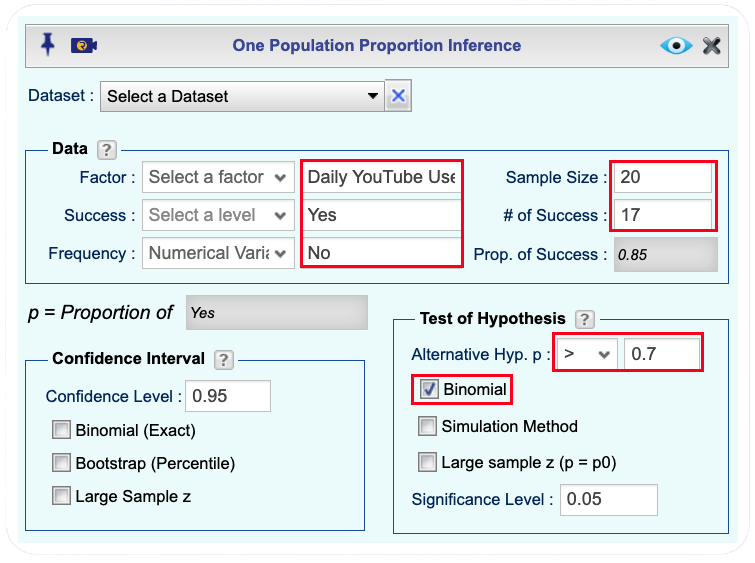
Click to expand the box below to see the Rguroo output.
Rguroo output: One-Population Proportion Inference — YouTube
Figure 9.19 shows the p-value graph from the Rguroo output. The p-value is approximately \(0.107,\) with \(H_a\) support \(X \geq 17,\) highlighted by the red bars. Since the p-value \(0.107 > \alpha = 0.05,\) we fail to reject \(H_0.\) The data do not provide sufficient evidence at the \(5\%\) significance level to conclude that more than 70% of students in the district use YouTube daily.
![Bar chart of the binomial distribution for the number of Yes responses under the null hypothesis. The observed count, 17, is marked with a green triangle. Bars for counts 17 and greater are shaded red to indicate the values in the alternative-hypothesis support region. The p-value is shown as P(X greater than or equal to 17) = 0.10709, representing the probability, assuming the null hypothesis is true, of obtaining the observed count or a more extreme count in the direction of the alternative hypothesis.](Rguroo_html_output/Proportion Inference/YoutubeProp_docx/G_pvalueTestPropBinomial.png)
Example 9.13 (ESP Card-Guessing Experiment - Exact Binomial (P-value)) In a classic test of extrasensory perception (ESP), a participant tries to identify which of five symbols (a star, a circle, a square, a cross, or wavy lines) appears on a hidden card, without seeing it. If the participant has no real ability to sense the symbol and is simply guessing, the probability of a correct guess on any single trial is \(p = 0.20\).
A researcher wants to test whether a particular participant performs worse than random guessing, a phenomenon some parapsychology researchers have called “psi-missing” and attributed to an unconscious avoidance of the correct answer. The participant completes \(n = 20\) trials, and \(x_{\text{obs}} = 1\) of the guesses is correct. Test, at the \(\alpha = 0.05\) level, whether these results provide evidence that the participant’s true probability of a correct guess is below \(0.20\).
🔎 Solution
The null and alternative hypotheses are \[ H_0: p \ge 0.20 \quad \text{vs.} \quad H_a: p < 0.20. \]
Since \(np_0 = 20 \times 0.20 = 4 < 10\), the sample is too small to rely on the normal approximation, so we use the exact binomial method. Because we are only given the sample size and the number of successes rather than raw data for each trial, we enter the information using summary statistics rather than a raw dataset, following the same instructions as in the solution of the YouTube example.
In the summary-statistics entry dialog, since there is no dataset to select variables and levels from, we instead type in our own labels:
- Factor label:
Guess Outcome - Success label:
Correct - Failure label:
Incorrect
along with the sample size (\(n = 20\)), the number of successes (\(x_{\text{obs}} = 1\)), the hypothesized proportion (\(p_0 = 0.20\)), the direction of the alternative hypothesis (\(p < 0.20\)), and the exact binomial method.
The Rguroo dialog for this example is shown below.
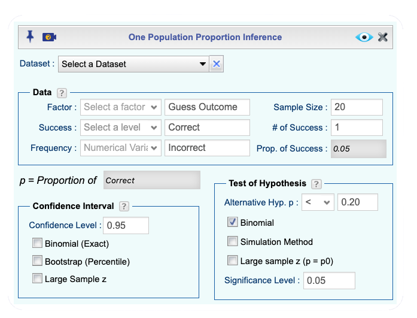
Click to expand the box below to see the Rguroo output.
Rguroo output: One-Population Proportion Inference — ESP Test
The exact binomial p-value is \(0.069\). This is the probability, computed under \(H_0\) (i.e., assuming \(p = 0.20\)), of observing a result at least as favorable to \(H_a\) as the one obtained — that is, \(X \le 1\) success out of 20 trials.

Since the p-value is greater than \(\alpha = 0.05\), we fail to reject \(H_0\). There is not sufficient evidence at the 5% significance level that the participant’s true probability of a correct guess is below 0.20, i.e., the results are not sufficient to conclude that psi-missing occurred.
🔎 Solution
We use the same instructions as in the solution of the YouTube example to open the One Population Proportion Inference. Figure 9.22 shows the completed Rguroo dialog for this example. We input the Factor label as Use Social Media, the Success label as Yes (a student who uses social media as their primary news source), and the Failure label as No. We enter a sample size of 15 and number of successes of 9. In the Test of Hypothesis section, we select != (not equal to) from the Alternative Hyp. p dropdown and enter 0.36. We select the Binomial checkbox and leave the Significance Level at the default value of 0.05.
Click to expand the box below to see the Rguroo output.
Rguroo output: One-Population Proportion Inference — Social Media
Figure 9.23 shows the p-value graph from the Rguroo output. As shown in the figure, the p-value is approximately \(0.06206,\) with \(H_a\) support \(X \leq 1\) or \(X \geq 9,\) highlighted by red bars. Since the p-value \(0.06206 < \alpha = 0.10,\) we reject \(H_0\) and coclude that the data provide sufficient evidence at the \(10\%\) significance level that the proportion of students who get most of their news from social media differs from 36%.

Example 9.15 (Heavy Chinstrap Penguins - Exact Binomial (P-value)) The Palmer Station Antarctica LTER penguins data include body-mass measurements for three penguin species. Here we restrict attention to a sample of \(n = 34\) Chinstrap penguins, given in the palmer_penguins_Chinstrap dataset. A Chinstrap penguin is classified as heavy if its body mass is 4400 grams or more. The variable Heavy records this classification, with possible values Yes (heavy) or No (not heavy).
We wish to test the claim that more than 10% of Chinstrap penguins in the island are heavy. That is, test the hypotheses \[ \begin{cases} H_0: p \leq 0.10 \\ H_a: p > 0.10 \end{cases} \]
Because the sample size is small — under \(H_0\) we would expect only \(34 \times 0.10 = 3.4\) heavy penguins, well below the usual guideline of at least 10 — the normal approximation is not appropriate here, and we instead use the exact binomial method.
Use Rguroo’s One-Population Proportion inference function, with the binomial method, to obtain the p-value, and make a decision at \(\alpha = 0.05\) significance level.
The dataset for this example is available in the Rguroo dataset repository Kozak, with the dataset name palmer_penguins_Chinstrap. Table Table 9.2 displays the first six rows of the dataset. A complete description of the variables is provided in the dataset code book that follows.
Code book for Dataset Palmer Penguins: Chinstrap
Description A subset of the Palmer Penguins dataset containing 34 Chinstrap penguins. The dataset includes measurements of bill length, bill depth, flipper length, and body mass, as well as a variable indicating whether a penguin is classified as heavy.
species: Penguin species. All penguins in this dataset are Chinstrap penguins.
bill_length_mm: Length of the penguin’s bill, in millimeters (mm).
bill_depth_mm: Depth of the penguin’s bill, in millimeters (mm).
flipper_length_mm: Length of the penguin’s flipper, in millimeters (mm).
body_mass_g: Body mass of the penguin, in grams (g).
Heavy: Indicates whether the penguin is classified as heavy: Yes or No.
year: Year in which the penguin was observed: 2007, 2008, or 2009.
Source: Palmer Penguins dataset.
| species | bill_length_mm | bill_depth_mm | flipper_length_mm | body_mass_g | Heavy | year |
|---|---|---|---|---|---|---|
| Chinstrap | 50.0 | 19.5 | 196 | 3900 | No | 2007 |
| Chinstrap | 51.3 | 19.2 | 193 | 3650 | No | 2007 |
| Chinstrap | 52.7 | 19.8 | 197 | 3725 | No | 2007 |
| Chinstrap | 51.3 | 18.2 | 197 | 3750 | No | 2007 |
| Chinstrap | 51.3 | 19.9 | 198 | 3700 | No | 2007 |
| Chinstrap | 51.7 | 20.3 | 194 | 3775 | No | 2007 |
🔎 Solution
Click to expand the box below to see how to use the Proportion Inference function in Rguroo for raw data.
Before you begin: Make sure you have already imported the palmer_penguins_Chinstrap dataset into your Rguroo account.
Open the Analytics toolbox in Rguroo.
From the Analysis dropdown, select Proportion Inference → One Population. This opens the One Population Proportion Inference dialog.
From the Dataset dropdown select the dataset palmer_penguins_Chinstrap.
From the Factor dropdown select the categorical variable Heavy.
(Optional) In the Factor Label textbox type in Heavy Chinstrap. The label is usually a more descriptive version of the variable name.
From the Success dropdown select Yes. This indicates penguins classified as heavy. (Once you select these values, the sample size, number of successes, and proportion of successes will be populated automatically on the dialog.)
In the Test of Hypothesis section of the dialog, enter the following:
- In the Alternative Hyp. p dropdown, select > and enter 0.1.
- Select the Binomial checkbox to use the binomial exact method.
- Set the Significance Level textbox to 0.05.
Click the preview icon
to view the output.Click the
button and save the result as PenguinsHeavyProp.
Rguroo One-Population Proportion dialog
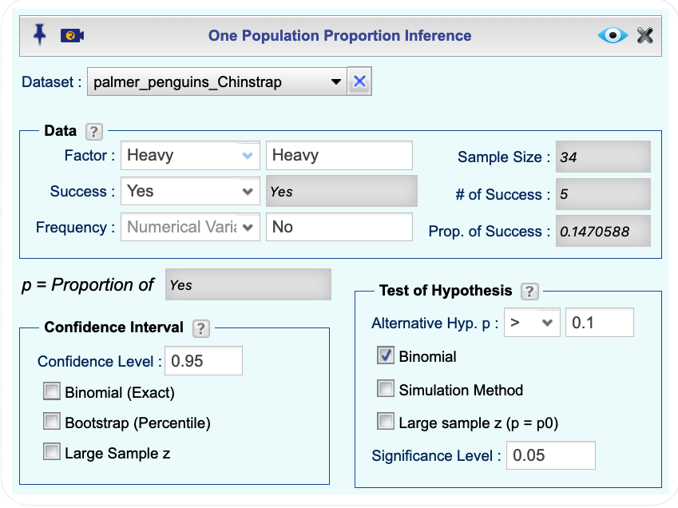
0.10 at the 0.05 significance level.">Click to expand the box below to see the Rguroo output.
Rguroo output: One-Population Proportion Inference — Heavy Chinstrap Penguins Example
The data summary shows that out of \(n = 34\) penguins, \(x_{\text{obs}} = 5\) were classified as Heavy, giving a sample proportion of \(\hat{p}_{\text{obs}} = 5/34 \approx 0.1471.\) From the Rguroo p-value graph, shown in Figure 9.25, the p-value is approximately \(0.2496,\) with \(H_a\) support \(X \geq 5,\) shown by red bars.
Since the p-value \(0.2496\) is greater than than \(\alpha = 0.05,\) we fail to reject \(H_0.\) The data do not provide sufficient evidence at the \(5\%\) significance level that more than 10% of Chinstrap penguins are heavy.

9.4.3 Decision Based on a Critical Region
Recall from Section 8.6 that the critical region approach identifies, in advance, the values of the statistic that lead us to reject \(H_0.\) We used this same approach with the large-sample method. For the exact binomial method, the reasoning is unchanged; the difference is that the critical region is now defined in terms of the possible values of \(X,\) the number of successes. As before, the location of the critical region is determined by the direction of the alternative hypothesis \(H_a\):
To find the critical values, we use the null distribution \[ X\sim\text{Binomial}(n,p_0). \] We choose the largest critical region for which the probability of a Type I error does not exceed the significance level \(\alpha.\)
Sometimes the Actual Significance Level Is Less Than \(\alpha\)
Because the binomial distribution is discrete, \(X\) takes only whole-number values. As a result, changing a critical value causes the probability of the critical region to change in steps rather than continuously. Therefore, we often cannot find a critical region with a probability exactly equal to \(\alpha.\)
Rguroo returns the largest critical region whose probability under \(H_0\) is at or below \(\alpha.\) The probability of this critical region is the actual significance level of the test and is reported as the Exact Significance Level in the Rguroo output.
For example, if we choose \(\alpha = 0.05,\) Rguroo might return a critical region with an actual significance level \(0.0476\) or \(0.0342.\) In either case, the probability of a Type I error is below the chosen significance level of \(0.05.\)
In practice, we use Rguroo’s One-Population Proportion inference function to find this critical region.
Example 9.16 (Daily YouTube Use Among Teens - Exact Binomial (Critical Region)) Recall Example 9.1 and Example 9.12. We test \[ \begin{cases} H_0: p \leq 0.70 \\ H_a: p > 0.70 \end{cases} \] with \(n = 20\) and \(x_{\text{obs}} = 17.\)
Use Rguroo’s One-Population Proportion inference function to obtain the critical region, and use it to make a decision at significance level \(\alpha = 0.05.\)
🔎 Solution
We use the same instructions as in the solution of the YouTube example to open the One Population Proportion Inference.
In the Data section, the Factor Label is Daily YouTube Use, Success Label is Yes, Failure Label is No, Sample Size is 20, and # of Successes is 17. In the Test of Hypothesis section, the Alternative Hyp. p dropdown is set to > with value 0.7, the Binomial method is selected, and the Significance Level is left at 0.05.
We then use the following additional steps to obtain the critical region graph:
- Click the Details button to open the Advanced Features dialog.
- Click on the Test of Hypothesis tab.
- In the Graphs section, select Critical Region Graph.
- (optional) Uncheck the default p-value Graph.
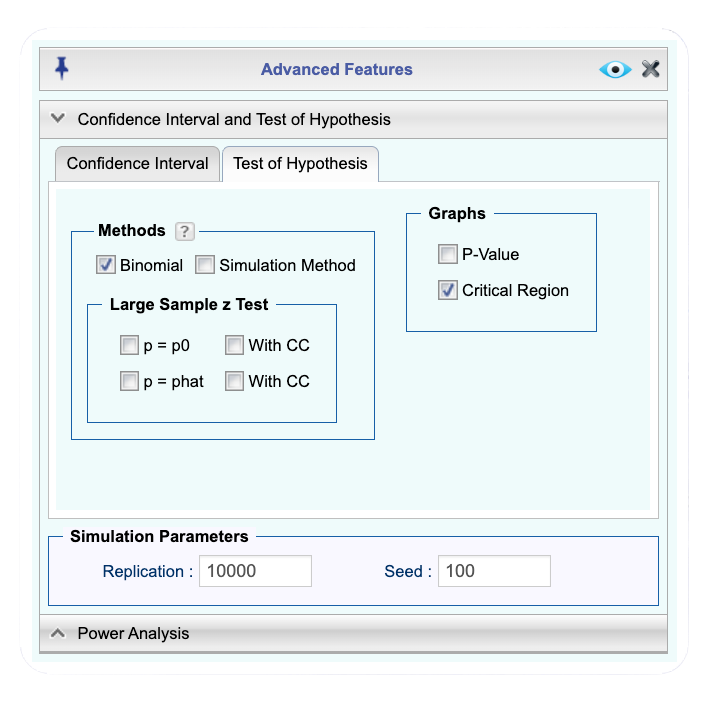
Click to expand the box below to see the Rguroo output.
Rguroo output: One-Population Proportion Inference — YouTube (Critical Region)
Figure 9.28 shows the Rguroo critical region graph output. The critical region is \(X \geq 18,\) with an exact significance level which is less than \(5\%.\) The rejection region is shown by red bars, and the observed value \(x_{\text{obs}} = 17\) is marked with a green triangle.
Since \(x_{\text{obs}} = 17\) does not fall in the rejection region, we fail to reject \(H_0.\) The data do not provide sufficient evidence at the \(5\%\) significance level to conclude that more than 70% of students in the district use YouTube daily.

Example 9.17 (ESP Card-Guessing Experiment - Exact Binomial (Critical Region)) Recall Example 9.13. We test \[ \begin{cases} H_0: p \geq 0.20 \\ H_a: p < 0.20 \end{cases} \] with \(n = 20\) and \(x_{\text{obs}} = 1.\)
Use Rguroo’s One-Population Proportion inference function to obtain the critical region, and use it to make a decision at significance level \(\alpha = 0.05.\)
🔎 Solution
We use the same instructions as in the solution of the YouTube example to open the One Population Proportion Inference.
The filled-out dialog is shown in Figure 9.29. We input
- the Factor label as Guess Outcome,
- Success as Correct (since we are counting correct guesses), and
- Failure as Incorrect.
We also input the sample size, number of successes, the alternative hypothesis, and select the method Binomial.

We then use the following additional steps to obtain the critical region graph:
- Click the Details button to open the Advanced Features dialog.
- Click on the Test of Hypothesis tab.
- In the Graphs section, select Critical Region Graph.
- (optional) Uncheck the default p-value Graph.
Click to expand the box below to see the Rguroo output.
Rguroo output: One-Population Proportion Inference — ESP Card-Guessing (Critical Region)
Figure 9.31 shows the Rguroo critical region graph output. The critical region is \(X = 0,\) with a significance level less than \(5\%.\) The rejection region is shown by red bars, and the observed value \(x_{\text{obs}} = 1\) is marked with a green triangle.
Since \(x_{\text{obs}} = 1\) does not fall in the rejection region, we fail to reject \(H_0.\) The data do not provide sufficient evidence at the \(5\%\) significance level to conclude that the participant’s true probability of a correct guess is below \(0.20.\)

🔎 Solution
We use the same instructions as in the solution of the YouTube example to open the One Population Proportion Inference.
The filled-out dialog is shown in Figure 9.32. We input
- the Factor label as Use Social Media,
- the Success label as Yes (a student who uses social media as their primary news source),
- the Failure label as No,
- sample size of 15, and
- the number of successes of 9.
In the Test of Hypothesis section, we select != (not equal to) from the Alternative Hyp. p dropdown and enter 0.36. We select the Binomial checkbox and leave the Significance Level at the default value of 0.05.
We then use the following additional steps to obtain the critical region graph:
- Click the Details button to open the Advanced Features dialog.
- Click on the Test of Hypothesis tab.
- In the Graphs section, select Critical Region Graph.
- (optional) Uncheck the default p-value Graph.
Click to expand the box below to see the Rguroo output.
Rguroo output: One-Population Proportion Inference — Social Media (Critical Region)
Figure 9.34 shows the Rguroo critical region graph output. The critical region is \(X \leq 1\) or \(X \geq 10,\) with a significance level less than \(5\%.\) The rejection region is shown by red bars, and the observed value \(x_{\text{obs}} = 9\) is marked with a green triangle.
Since \(x_{\text{obs}} = 9\) does not fall in the rejection region, we fail to reject \(H_0.\) The data do not provide sufficient evidence at the \(5\%\) significance level to conclude that the proportion of students who get most of their news from social media differs from 36%.

We close with the heavy Chinstrap penguins example, which uses raw data on body mass.
Example 9.19 (Heavy Chinstrap Penguins: - Exact Binomial (Critical Region)) Using the palmer_penguins_Chinstrap dataset (see Example 9.15 for the full setup and the code book), test whether more than 10% of Chinstrap penguins are heavy (\(H_a: p > 0.10\)), using the critical region approach at significance level \(\alpha = 0.05.\)
🔎 Solution
We use the same instructions as in the solution of Example 9.15 to open the One Population Proportion Inference dialog:
- From the Dataset dropdown we select palmer_penguins_Chinstrap,
- from the Factor dropdown we select Heavy,
- and from the Success dropdown we select Yes.
The sample size and number of successes populate automatically.
In the Test of Hypothesis section,
- set the Alternative Hyp. p from the dropdown to > with value 0.1,
- Select the Binomial method, and
- leave the Significance Level at 0.05.
0.10 at the 0.05 significance level.">
We then use the following additional steps to obtain the critical region graph:
- Click the Details button to open the Advanced Features dialog.
- Click on the Test of Hypothesis tab.
- In the Graphs section, select Critical Region Graph.
- (optional) Uncheck the default p-value Graph.
Click to expand the box below to see the Rguroo output.
Rguroo output: One-Population Proportion Inference — Heavy Chinstrap Penguins (Critical Region)
Figure 9.37 shows the Rguroo critical region graph output. The critical region is \(X \geq 7,\) for a significance level of \(5\%.\) The rejection region is shown by red bars, and the observed value \(x_{\text{obs}} = 5\) is marked with a green triangle.
Since \(x_{\text{obs}} = 5\) does not fall in the rejection region, we fail to reject \(H_0.\) The data do not provide sufficient evidence at the \(5\%\) significance level to conclude that more than 10% of Chinstrap penguins are heavy, even though the sample proportion of \(5/34\approx0.1471\) is noticeably higher than 0.10 — with a sample this small, a difference of this size is not unusual under \(H_0\) alone.

9.4.4 Homework for Section 9.4
For each of the scenarios described below, use Rguroo’s One-Population Proportion inference function with the Binomial option to carry out the hypothesis test at the given significance level.
- Before running the analysis, identify the following inputs for the Rguroo dialog:
- Factor Label: A descriptive name for the variable being studied
- Success: The outcome that counts as a success
- Failure: The outcome that counts as a failure
- Sample Size: The value of \(n\)
- # of Successes: The value of \(x_{\text{obs}}\)
- Proportion of …: A descriptive label for what the population proportion represents
State the null and alternative hypotheses.
Carry out the test using the p-value approach and the Binomial Exact method:
(i) Specify the \(H_a\) support.
(ii) State the p-value and determine whether you reject or fail to reject \(H_0.\)Carry out the test using the critical region (rejection region) approach and the Binomial Exact method:
(i) Specify the critical region.
(ii) Identify \(x_{\text{obs}}\) and determine whether you reject or fail to reject \(H_0.\)State your conclusion in the context of the problem.
Airport Security Screening: An airport reports that 5% of randomly selected passengers require additional security screening. In a random sample of \(n = 40\) passengers at a particular terminal, \(x_{\text{obs}} = 5\) required additional screening. Is there evidence that the proportion of passengers requiring additional screening at this terminal is greater than 5%? Use \(\alpha = 0.05.\)
Defective Computer Chips: A manufacturer claims that 4% of the computer chips it produces are defective. A quality-control inspector randomly selects \(n = 50\) chips and finds that \(x_{\text{obs}} = 5\) are defective. Is there evidence that the true proportion of defective chips is greater than 4%? Use \(\alpha = 0.10.\)
Seed Germination Rate: A seed company states that 90% of a particular variety of seeds will germinate under specified growing conditions. A gardener randomly selects \(n = 20\) seeds and finds that \(x_{\text{obs}} = 15\) germinate. Is there evidence that the true germination rate is less than 90%? Use \(\alpha = 0.05.\)
Online Order Returns: A small online retailer has historically had 8% of its orders returned. After changing its product descriptions, the retailer randomly examines \(n = 30\) recent orders and finds that \(x_{\text{obs}} = 1\) was returned. Is there evidence that the proportion of orders being returned has decreased from 8%? Use \(\alpha = 0.05.\)
Free-Throw Shooting: A basketball player has historically made 85% of her free throws. During a randomly selected set of \(n = 20\) free throws, she makes \(x_{\text{obs}} = 14\). Is there evidence that her true free-throw success rate differs from 85%? Use \(\alpha = 0.05.\)
Rare Side Effect: A commonly used medication is known to produce a particular side effect in 2% of patients. Among a random sample of \(n = 60\) patients receiving the medication at a clinic, \(x_{\text{obs}} = 4\) experience the side effect. Is there evidence that the proportion of patients experiencing the side effect at this clinic differs from 2%? Use \(\alpha = 0.05.\)
9.5 A Closer Look at Critical Regions and p-values (Optional)
Note
This section is optional. The material here is not required for performing hypothesis tests, but it is highly recommended for readers who want a firmer conceptual grasp of what is happening behind the procedures.
In the previous sections, you learned two equivalent approaches for testing a hypothesis about a population proportion: the critical region approach and the p-value approach. In both approaches, we computed probabilities for our decisions using the boundary value of the null hypothesis, and we relied on Rguroo’s Proportion Infrence function to produce the critical region or the p-value automatically.
This section is intended to deepen your understanding of why these procedures work the way they do. Specifically, we address two questions:
Why do we use the boundary value of \(H_0\) when computing probabilities required for our decisions? The null hypothesis in many tests is a statement such as \(H_0: p \leq p_0\) or \(H_0: p \geq p_0,\) which encompasses many possible values of \(p.\) Yet we always use the single boundary value \(p_0\) in our calculations. There is a principled reason for this, and understanding it clarifies what a hypothesis test is really doing.
How are critical regions and p-values actually obtained from a probability distribution? Rguroo’s Proportion Inference function returns these quantities directly, but doing so hides the underlying probability calculation. By using Rguroo’s probability calculator instead, we can see exactly which area under a sampling distribution corresponds to the critical region or the p-value.
9.5.1 Why Use the Boundary Value in \(H_0\)? **
In this section we explain why we use the boundary value of \(H_0\) when computing the probability of a Type I error. The front-half discussion stated this as a fact: for a composite \(H_0\) such as \(H_0: p \leq p_0,\) the maximum Type I error probability over the values allowed by \(H_0\) occurs at the boundary \(p_0,\) so controlling the error there automatically controls it everywhere in \(H_0.\) Here we demonstrate this empirically: we compute the probability of a Type I error for several specific values of \(p\) within \(H_0,\) for one decision rule, and observe that the maximum occurs at the boundary. A formal account, including worked examples and the underlying mathematics, is given in Jamshidian and Jamshidian (2026).
Example 9.20 (Daily YouTube Use Among Teens (continued)) Recall Example 9.1 where a school district claimed that more than 70% of students in its district use YouTube daily, and a random sample of \(n = 20\) students was selected. The null and alternative hypotheses are: \[ \begin{cases} H_0: p \leq 0.70 \\ H_a: p > 0.70 \end{cases} \]
Consider the critical region: Reject \(H_0\) if \(X \geq 17.\)
For this critical region, compute \(P(\text{Type I error})\) when
- \(p = 0.60\)
- \(p = 0.65\)
- \(p = 0.70.\)
In each case, interpret the probability in the context of the problem.
🔎 Solution
a. Since the sample size is \(n = 20\) and \(p = 0.60,\) we have \(X \sim \text{Binomial}(20, 0.60).\) Using Rguroo’s probability calculator, we compute \[P(\text{Type I error}) = P(\text{Reject } H_0 \mid H_0 \text{ is true})\] \[= P(X \geq 17 \mid p = 0.60).\]
Click to expand the box below to see how to calculate the probability of Type I error.
- Open the Probability-Simulation toolbox in Rguroo.
- From the Probability dropdown, select Probability Calculator –> Discrete.
- (Optional) In the
Calculationtextbox, type a name for the calculation (e.g.,Type I error).
- In the Distribution dropdown, select Binomial.
- In the No. of Trials textbox, enter 20.
- In the Prob. of Success textbox, enter 0.60.
- In the next dropdown menu, select Above, and in the textbox next to it, enter 17.
- (Optional) Select the Graph checkbox to see a graph showing calculation details.
- Click the preview icon to see the result.
- (Optional) In the textbox, enter the name TypeI_Error to save this calculation to your Rguroo account.
Click here to see the Rguroo dialog
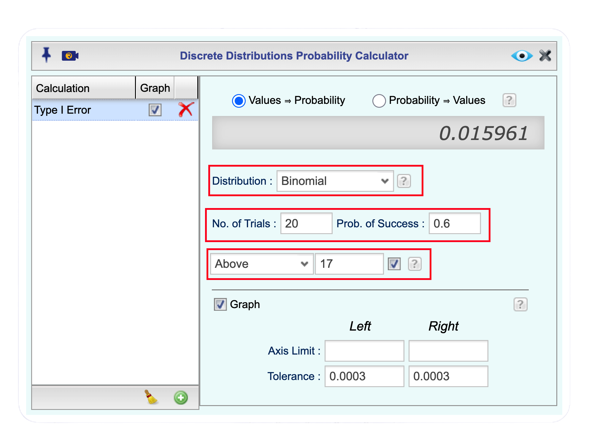
Figure 9.38 shows the Rguroo Probability Calculator output for \(X \sim \text{Binomial}(20, 0.60),\) giving
That is, if the true proportion of students in the district who use YouTube daily is \(p = 0.60,\) and our decision rule is to reject \(H_0\) whenever \(X \geq 17\) in a sample of \(n = 20\) students, then there is only a \(1.6\%\) chance of committing a Type I error; that is, incorrectly concluding that more than 70% of students in the district use YouTube daily.
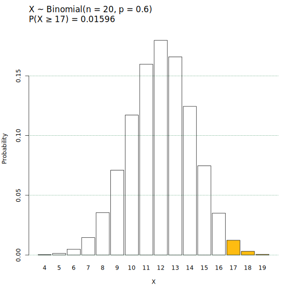
b. To compute the probability of Type I error for the critical region \(X \geq 17\) when \(p = 0.65,\) we follow the same steps as in the part (a), but enter 0.65 in the Prob. of Success box. The Rguroo output gives
That is, if the true proportion of students in the district who use YouTube daily is \(p = 0.65,\) and our decision rule is to reject \(H_0\) whenever \(X \geq 17\) in a sample of \(n = 20\) students, then there is approximately a \(4.4\%\) chance of committing a Type I error; that is, incorrectly concluding that more than 70% of students in the district use YouTube daily.
c. Entering 0.70 in the Prob. of Success box gives
That is, if the true proportion of students in the district who use YouTube daily is \(p = 0.70,\) and our decision rule is to reject \(H_0\) whenever \(X \geq 17\) in a sample of \(n = 20\) students, then there is approximately a \(10.7\%\) chance of committing a Type I error; that is, incorrectly concluding that more than 70% of students in the district use YouTube daily.
Example 9.21 (Physical Inactivity Among Adults (continued)) Recall Example 9.2 where a national health agency claimed that fewer than 35% of adults in its country are physically inactive, and a random sample of \(n = 50\) adults was selected. The null and alternative hypotheses are: \[ \begin{cases} H_0: p \geq 0.35 \\ H_a: p < 0.35 \end{cases} \]
Consider the critical region: Reject \(H_0\) if \(X \leq 13.\)
For this critical region, compute \(P(\text{Type I error})\) when
- \(p = 0.35\)
- \(p = 0.40\)
- \(p = 0.50.\)
In each case, interpret the probability in the context of the problem.
🔎 Solution
a. Since the sample size is \(n = 50\) and \(p = 0.35,\) we have \(X \sim \text{Binomial}(50, 0.35).\) Using Rguroo’s probability calculator, we compute \[P(\text{Type I error}) = P(\text{Reject } H_0 \mid H_0 \text{ is true})\] \[= P(X \leq 13 \mid p = 0.35).\]
Use the same Rguroo Probability Calculator steps as in the YouTube example, with No. of Trials = 50, Prob. of Success = 0.35, and the direction set to Below with value 13:
Click here to see the Rguroo dialog
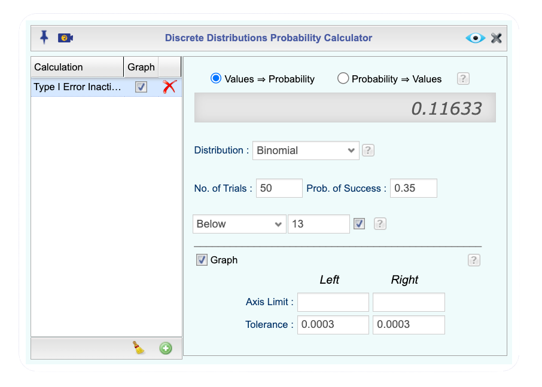
Figure 9.39 shows the Rguroo Probability Calculator output for \(X \sim \text{Binomial}(50, 0.35),\) giving
That is, if the true proportion of inactive adults in the population is \(p = 0.35,\) and our decision rule is to reject \(H_0\) whenever \(X \leq 13\) in a sample of \(n = 50\) adults, then there is approximately an \(11.63\%\) chance of committing a Type I error; that is, incorrectly concluding that fewer than 35% of adults in the population are physically inactive.

b. Entering 0.40 in the Prob. of Success box gives
That is, if the true proportion of inactive adults in the population is \(p = 0.40,\) and our decision rule is to reject \(H_0\) whenever \(X \leq 13\) in a sample of \(n = 50\) adults, then there is approximately a \(2.8\%\) chance of committing a Type I error; that is, incorrectly concluding that fewer than 35% of adults in the population are physically inactive.
c. Entering 0.50 in the Prob. of Success box gives
That is, if the true proportion of inactive adults in the population is \(p = 0.50,\) and our decision rule is to reject \(H_0\) whenever \(X \leq 13\) in a sample of \(n = 50\) adults, then there is approximately a \(0.046\%\) chance of committing a Type I error; that is, incorrectly concluding that fewer than 35% of adults in the population are physically inactive.
Now that we have computed the probability of a Type I error at various values of \(p,\) let us look back at what we observed in our examples.
For the one-sided cases, there is a range of values of \(p\) in \(H_0,\) and we computed the probability of a Type I error at several of them. You may have noticed a pattern: in both the YouTube example and the Physical Inactivity example, the probability of a Type I error was largest at the value of \(p\) where \(H_0\) and \(H_a\) meet, the boundary value of \(p\) in \(H_0\). For the YouTube example, this is \(p = 0.70,\) and for the Physical Inactivity example, this is \(p = 0.35.\) Is this a coincidence that the probability of a Type I error is largest at the boundary value?
The answer is, it is not a coincident. Figure 9.40 shows the probability of a Type I error across a range of values of \(p\) in \(H_0,\) for the two examples that we considerd here and for three different decision rules in each case.

In panel (a), for the YouTube example, the null hypothesis is \(H_0: p \leq 0.70,\) so the boundary value is \(p = 0.70.\) The three curves correspond to the decision rules \(X \geq 16,\) \(X \geq 17,\) and \(X \geq 18.\) For all three rules, the probability of a Type I error increases as \(p\) gets closer to the boundary value of \(0.70,\) and reaches its maximum at \(p = 0.70.\)
In panel (b), for the Physical Inactivity example, the null hypothesis is \(H_0: p \geq 0.35,\) so the boundary value is \(p = 0.35.\) The three curves correspond to the decision rules \(X \leq 11,\) \(X \leq 12,\) and \(X \leq 13.\) Again, for all three rules, the probability of a Type I error is largest at the boundary value \(p = 0.35\) and decreases as \(p\) moves away from it.
Key Result: Maximum Type I Error Occurs at the Boundary Value
For the one-sided tests, the probability of a Type I error is largest at the boundary value of \(H_0.\)
Notice also that the horizontal dashed red line in each panel is drawn at \(0.05.\) This represents a commonly chosen upper bound for the probability of a Type I error — that is, the significance level \(\alpha = 0.05.\) As discussed in the previous sections, the decision rule (critical region) that we use is chosen to satisfy two requirements:
- At the boundary value of \(H_0,\) the probability of a Type I error does not exceed the desired significance level \(\alpha.\)
- Among all critical regions satisfying (1), we choose the one containing the largest number of \(X\) values, so that the probability of a Type II error is as small as possible.
Therefore, as shown in Figure 9.40, the critical region corresponding to the significance level \(\alpha = 0.05\) for the YouTube example is \(X\geq 18,\) and that for the Physical Inactivity example is \(X\leq 11.\)
9.5.2 Obtaining Critical Regions and p-values Using Rguroo’s Probability Calculator
In this subsection, we revisit examples from earlier in the chapter, but instead of using Rguroo’s Proportion Inference function, we compute critical values and p-values directly from the sampling distribution under \(H_0\) using Rguroo’s Probability Calculator function. This approach makes visible the area-under-the-curve interpretation of both quantities.
9.5.2.1 Using Inverse Probability to Find the Critical Region
When using a probability calculator, we could find a critical region by trying different candidate decision rules and checking their Type I error probabilities one at a time, as illustrated in Figure 9.40. For example, we might check whether the rule “\(X \ge 17\)” has a Type I error probability close to 0.05, then try “\(X \ge 18,\)” and so on. While this trial-and-error approach works, there is a more direct method.
Many calculators provide an inverse probability function. A probability function starts with a value of \(X\) and returns the corresponding probability. An inverse probability function works in the opposite direction: we provide a probability, such as \(\alpha=0.05,\) and it returns the value of \(X\) that creates that probability. This allows us to find the rejection-region boundary directly rather than testing several possible decision rules one at a time.
To find the critical region, we use the binomial distribution with the boundary value of \(p\) from \(H_0\) as the probability of success and \(n\) as the number of trials. Instead of providing a value of \(X\) and asking for a probability, we provide the significance level \(\alpha\) as the probability. The inverse probability function then returns the corresponding boundary value of \(X,\) which we use to determine the critical region. Below, we show how this is done in Rguroo using its built-in probability calculator.
Example 9.22 (YouTube Use: Finding the Critical Region) In the YouTube Use example (Example 9.1), we are testing \(H_0: p \leq 0.70\) versus \(H_a: p > 0.70,\) where \(p\) is the true proportion of students in the district who use YouTube daily. Using a sample of \(n = 20\) students and a significance level of \(\alpha = 0.05,\) find the critical region for this test.
🔎 Solution
Since the alternative hypothesis is \(H_a: p > 0.70,\) large values of \(X\) provide evidence in favor of \(H_a.\) Therefore, we need a critical region in the upper tail of the binomial distribution. We use Rguroo’s Probability Calculator and the significance level \(\alpha\) to find the boundary value of \(X\) that defines this region.
Click to expand the box below to see how to use the Probability Calulator function in Rguroo.
Open the Probability-Simulation toolbox
Select Probability \(\Rightarrow\) Values to use the inverse probability function.
In the Distribution dropdown, set the distribution to Binomial.
Set the No. of Trials to 20 and the Prob. of Success to 0.70.
From the dropdown, select Upper Tail and enter \(0.05\) as the significance level \(\alpha.\)
Select the checkbox Graph to see a detailed output.
Rguroo Discrete Probability Calculator dialog
The output, shown in Figure 9.42, gives \[ P(X \geq 17)=0.1071 > 0.05 \quad\text{and}\quad P(X \geq 18)=0.03548 < 0.05. \]
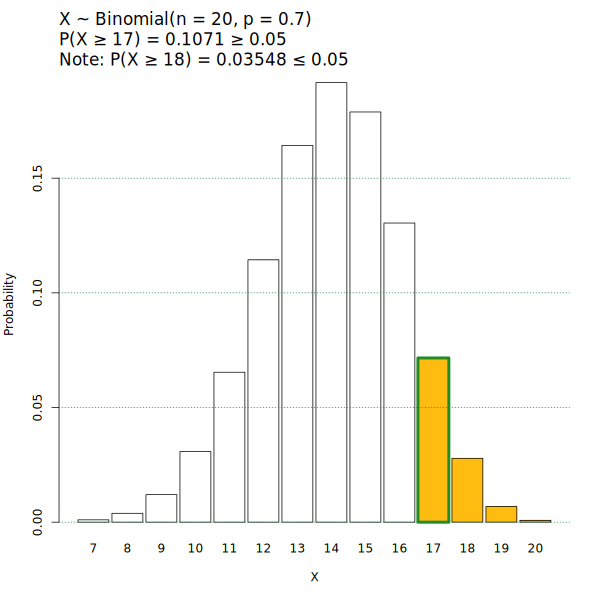
Thus, the decision rule \(X \geq 17\) would produce a Type I error probability greater than our significance level and cannot be used. However, the decision rule \(X \geq 18\) has a Type I error probability below 0.05 and therefore satisfies the significance-level requirement.
Therefore, the critical region at significance level \(\alpha=0.05\) is \[ X \geq 18. \] In other words, if 18 or more of the \(n=20\) students in the sample report daily YouTube use, we reject \(H_0\) in favor of \(H_a: p>0.70.\)
Example 9.23 (Physical Inactivity: Finding the Critical Region) In the Physical Inactivity example (Example 9.5), we are testing \(H_0: p \geq 0.35\) versus \(H_a: p < 0.35,\) where \(p\) is the true proportion of adults in the population who are physically inactive. Using a sample of \(n = 50\) adults and a significance level of \(\alpha = 0.05,\) find the critical region for this test.
9.5.2.2 Using Probability Calculator to Compute the p-Value
We now illustrate how to compute the p-value and use it to make a decision, starting with the two one-sided examples that we have seen.
Example 9.25 (YouTube Use: Computing the p-Value and Making a Decision) In the YouTube Use example (Example 9.1), we are testing \(H_0: p \leq 0.70\) versus \(H_a: p > 0.70,\) where \(p\) is the true proportion of students in the district who use YouTube daily. A random sample of \(n = 20\) students is selected and \(x_{\text{obs}} = 17\) report daily YouTube use.
- Obtain the \(H_a\) support.
- Compute the p-value.
- At significance level \(\alpha = 0.05,\) make a decision and state your conclusion in the context of the problem.
Example 9.26 (Physical Inactivity: Computing the p-Value and Making a Decision) In the Physical Inactivity example (Example 9.2), we are testing \(H_0: p \geq 0.35\) versus \(H_a: p < 0.35,\) where \(p\) is the true proportion of adults in the population who are physically inactive. A random sample of \(n = 50\) adults is selected and \(x_{\text{obs}} = 10\) are found to be physically inactive.
- Obtain the \(H_a\) support.
- Compute the p-value.
- At significance level \(\alpha = 0.05,\) make a decision and state your conclusion in the context of the problem.
The two-sided case requires a bit more care. Since \(H_a: p \neq p_0\) does not specify a direction, evidence against \(H_0\) can come from either tail of the distribution. Recall from Case 3 that a value \(x\) is in the \(H_a\) support if \(P(X = x \mid p = p_0) \leq P(X = x_{\text{obs}} \mid p = p_0),\) that is, if it is at least as unlikely as \(x_{\text{obs}}\) under \(H_0.\)
9.5.3 Homework for Section 9.5
For each of the following scenarios, answer these questions:
- Write the null and alternative hypotheses using mathematical notation.
- Use Rguroo’s Probability Calculator to find the critical region at the given significance level.
- Does \(x_{\text{obs}}\) fall in the critical region? Do you reject or fail to reject \(H_0\)?
- Obtain the \(H_a\) support.
- Use Rguroo’s Probability Calculator to compute the p-value.
- Is the p-value smaller than the significance level? Do you reject or fail to reject \(H_0\)?
- State your decision in the context of the problem.
Arizona Marijuana Legalization In Problem 1 (Arizona Marijuana Legalization) of Section 9.1.4, \(p\) is the true proportion of Arizona registered voters who support marijuana legalization. Do Arizona registered voters differ from Colorado residents in their support for marijuana legalization? The sample consisted of \(n = 779\) voters, of whom \(x_{\text{obs}} = 390\) favored legalization. Use \(\alpha = 0.05.\)
Australian Unemployment Outlook In Problem 2 (Australian Unemployment Outlook) of Section 9.1.4, \(p\) is the true proportion of Australians in November 1997 who believed unemployment would increase. Did Australian sentiment about unemployment shift between July and November of 1997? The sample consisted of \(n = 631\) Australians, of whom \(x_{\text{obs}} = 284\) believed unemployment would increase. Use \(\alpha = 0.05.\)
Arkansas Identity Theft Complaints In Problem 3 (Arkansas Identity Theft Complaints) of Section 9.1.4, \(p\) is the true proportion of consumer complaints in Arkansas that were for identity theft. Was the proportion of identity theft complaints in Arkansas greater than the national figure of 23%? The sample consisted of \(n = 3{,}482\) complaints, of which \(x_{\text{obs}} = 1{,}601\) were for identity theft. Use \(\alpha = 0.01.\)
Alaska Identity Theft Complaints In Problem 4 (Alaska Identity Theft Complaints) of Section 9.1.4, \(p\) is the true proportion of consumer complaints in Alaska that were for identity theft. Was Alaska’s proportion of identity theft complaints less than the national proportion of 23%? The sample consisted of \(n = 1{,}432\) complaints, of which \(x_{\text{obs}} = 321\) were for identity theft. Use \(\alpha = 0.05.\)
Kennedy Assassination Conspiracy Belief In Problem 5 (Kennedy Assassination Conspiracy Belief) of Section 9.1.4, \(p\) is the true proportion of American adults in 2013 who believed there was a conspiracy behind President Kennedy’s assassination. Is there evidence that American belief in a conspiracy behind President Kennedy’s assassination changed between 2001 and 2013? The sample consisted of \(n = 1{,}039\) adults, of whom \(x_{\text{obs}} = 634\) believed in a conspiracy. Use \(\alpha = 0.05.\)
Autism Spectrum Disorder in Arizona In Problem 6 (Autism Spectrum Disorder in Arizona) of Section 9.1.4, \(p\) is the true proportion of children in Arizona diagnosed with ASD. Is the rate of ASD diagnosis among children in Arizona greater than the national rate of 1 in 88 children? The sample consisted of \(n = 32{,}601\) children, of whom \(x_{\text{obs}} = 507\) were diagnosed with ASD. Use \(\alpha = 0.05.\)
Graduate Degree Attainment: GSS2024 In Problem 7 (Graduate Degree Attainment: GSS2024) of Section 9.1.4, \(p\) is the true proportion of U.S. adults who hold a graduate degree. Does the GSS2024 data provide evidence that the proportion of U.S. adults who hold a graduate degree differs from the 15% reported by the U.S. Census Bureau? The sample consisted of \(n = 388\) adults, of whom \(x_{\text{obs}} = 33\) reported a graduate degree as their highest level of education. Use \(\alpha = 0.05.\)
9.6 Confidence Interval for a Population Proportion
Recall from Section 8.7 that a confidence interval gives us a range of plausible values for a population parameter. In this section, our parameter is the population proportion \(p,\) and we use the sample proportion \(\hat{p}\) as our estimate of it. Because \(\hat{p}\) varies from sample to sample, we do not expect it to equal \(p\) exactly. Instead, we use the observed sample proportion \(\hat{p}_{\text{obs}}\) to construct an interval of plausible values for \(p.\)
As discussed in Section 8.7, the confidence level describes the long-run success rate of the method used to construct the interval. For example, a 95% confidence interval comes from a method that captures the true value of \(p\) in about 95% of repeated samples. In practice, however, we collect one sample and construct one interval.
Recall from Section 8.7 that we can construct a confidence interval by inverting a two-sided hypothesis test. For a population proportion, we consider different candidate values \(p_0\) and test \(H_0: p=p_0\) versus \(H_a:p\neq p_0\).
If we fail to reject \(H_0,\) our data are consistent with \(p_0,\) so we consider \(p_0\) a plausible value for \(p.\) If we reject \(H_0,\) we do not consider \(p_0\) plausible. We repeat this process for different values of \(p_0.\) The collection of all values for which we fail to reject \(H_0\) forms our confidence interval.
The following example illustrates this idea by testing a grid of values of \(p_0\) and identifying which ones are consistent with the observed data.
Example 9.28 (Daily YouTube Use Among Teens: Building a Confidence Interval from a Grid) Recall Example 9.1. A sample of \(n = 20\) students produced \(x_{\text{obs}} = 17\) daily YouTube users, giving an observed sample proportion of \(\hat{p}_{\text{obs}} = 17/20 = 0.85.\)
For each candidate value of \(p_0\) shown in the grid below, carry out the two-sided hypothesis test \(H_0: p = p_0\) versus \(H_a: p \neq p_0\) at significance level \(\alpha = 0.05,\) using the binomial distribution with \(n = 20\) and \(x_{\text{obs}} = 17.\) Based on the results, identify the range of values of \(p_0\) for which we fail to reject \(H_0.\)

The confidence interval that we obtained in the example above is an approximation to the collection of values of \(p_0\) that are consistent with our observed data at significance level \(\alpha = 0.05.\) Notice that the interval is not symmetric around \(\hat{p}_{\text{obs}} = 0.85\): it extends further below \(\hat{p}_{\text{obs}}\) (down to approximately 0.65) than above it (up to approximately 0.95). This asymmetry is not surprising when the sample proportion is close to 0 or 1. Recall the large-sample condition from Section 9.3. Using \(\hat{p}_{\text{obs}} = 0.85\) as our estimate of \(p,\) we compute: \[n\hat{p}_{\text{obs}} = 20 \times 0.85 = 17 \geq 10,\] but \[n(1-\hat{p}_{\text{obs}}) = 20 \times 0.15 = 3 < 10. \]
The large-sample condition fails because there are 3 observed failures. With a relatively small sample and a sample proportion close to 1, the binomial distribution can be noticeably skewed rather than approximately normal. As a result, an exact confidence interval need not be symmetric around \(\hat{p}_{\text{obs}}.\) A method based on a symmetric normal approximation may not work well in this situation.
This example illustrates that the choice of method for constructing a confidence interval matters. In the subsections that follow, we study two methods in detail. We begin in Section 9.6.1 with the large-sample method, which uses the normal approximation and produces a confidence interval that is symmetric around \(\hat{p}_{\text{obs}}.\) We consider this method first because it is widely used in practice and builds directly on the large-sample methods we have already developed for hypothesis testing. When the large-sample condition is satisfied, the normal approximation generally works well; however, it may be misleading when the condition is not satisfied, as in this example.
We then consider the exact binomial method in Section 9.6.2. This method does not rely on the normal approximation and can produce an asymmetric confidence interval. It is particularly useful when the large-sample condition is not satisfied.
Symmetry of the Normal-Approximation Interval
Because the normal distribution is symmetric, the large-sample confidence interval we will construct is symmetric around \(\hat{p}_{\text{obs}}.\) In contrast, an exact binomial confidence interval does not need to be symmetric. This difference can be especially noticeable when the sample size is small or \(\hat{p}_{\text{obs}}\) is close to 0 or 1.
9.6.1 Confidence Interval Based on the Large Sample Normal Approximation
We begin with the large-sample method for constructing a confidence interval for a population proportion. This method uses the normal approximation to the sampling distribution of \(\hat{p}\) and is one of the most commonly used methods for confidence intervals for a proportion. It also builds directly on the large-sample methods we used earlier for hypothesis testing.
Recall from Section 9.3 that when the large sample condition is satisfied, the sampling distribution of \(\hat{p}\) is approximately normal. We can use this normal distribution to determine how far we should extend on either side of the observed sample proportion \(\hat{p}_{\text{obs}}\) to obtain a range of plausible values for \(p.\)
To construct the interval, we first need to estimate the variability of \(\hat{p}.\) Recall that the standard deviation of the sampling distribution of \(\hat{p}\) is \[\sqrt{\frac{p(1-p)}{n}}.\] Because the population proportion \(p\) is unknown, we use the observed sample proportion \(\hat{p}_{\text{obs}}\) in its place. The resulting estimate of the standard deviation is called the standard error of \(\hat{p}\): \[\text{SE}(\hat{p}) = \sqrt{\frac{\hat{p}_{\text{obs}}(1 - \hat{p}_{\text{obs}})}{n}}.\]
For a confidence interval, we check the large sample condition using \(\hat{p}_{\text{obs}}\): \[n\hat{p}_{\text{obs}} \geq 10 \qquad \text{and} \qquad n(1-\hat{p}_{\text{obs}}) \geq 10.\]
When this condition is satisfied, the \((1-\alpha) \times 100\%\) confidence interval for \(p\) takes the form
\[\hat{p}_{\text{obs}} \pm z^* \times \text{SE}(\hat{p}),\]
where \(z^*\) is the critical value from the standard normal distribution corresponding to the desired confidence level.
The quantity \(z^* \times \text{SE}(\hat{p})\) is called the margin of error. It tells us how far we extend below and above \(\hat{p}_{\text{obs}}\) when constructing the interval. A larger margin of error produces a wider interval and reflects greater uncertainty in our estimate of \(p.\)
Common critical values are:
| Confidence Level | \(\alpha\) | \(z^*\) |
|---|---|---|
| 90% | 0.10 | 1.645 |
| 95% | 0.05 | 1.960 |
| 99% | 0.01 | 2.576 |
Large Sample Confidence Interval for a Population Proportion
When the large sample condition \(n\hat{p}_{\text{obs}} \geq 10\) and \(n(1-\hat{p}_{\text{obs}}) \geq 10\) is satisfied, an approximate \((1-\alpha) \times 100\%\) confidence interval for \(p\) is:
\[\hat{p}_{\text{obs}} \pm \underbrace{z^* \times \sqrt{\frac{\hat{p}_{\text{obs}}(1-\hat{p}_{\text{obs}})}{n}}}_{\text{margin of error}},\]
which gives the interval
\[\left(\hat{p}_{\text{obs}} - z^* \times \sqrt{\frac{\hat{p}_{\text{obs}}(1-\hat{p}_{\text{obs}})}{n}},\; \hat{p}_{\text{obs}} + z^* \times \sqrt{\frac{\hat{p}_{\text{obs}}(1-\hat{p}_{\text{obs}})}{n}}\right).\]
This interval is always symmetric around \(\hat{p}_{\text{obs}}.\) When the large sample condition is satisfied, the normal approximation generally works well; when it is not, the resulting confidence interval may be misleading.
Example 9.29 (Physical Inactivity Among Adults: Large Sample Confidence Interval) Recall Example 9.2. A sample of \(n = 50\) adults produced \(x_{\text{obs}} = 10\) physically inactive individuals, giving a sample proportion of \(\hat{p}_{\text{obs}} = 10/50 = 0.20.\)
Use Rguroo’s One-Population Proportion inference function to obtain a 95% large sample normal approximation confidence interval for \(p,\) the true proportion of adults in the country who are physically inactive. Interpret the interval.
Use Rguroo’s One-Population Proportion inference function to obtain a 99% large sample normal approximation confidence interval for \(p,\) and compare its width to the interval you obtained in part (a).
🔎 Solution
a. Click to expand the box below to see how to use the Proportion Inference function in Rguroo to obtain a large sample normal confidence interval for this problem.
Open the Analytics toolbox in Rguroo.
From the Analysis dropdown, select Proportion Inference → One Population. This opens the One Population Proportion Inference dialog.
In the Data section of the dialog, enter the following:
- In the Factor Label textbox, type a label for the categorical variable. In Rguroo, a “factor” refers to a categorical variable. For this example, enter Physically Inactive.
- In the Success Label textbox, type Yes. A success corresponds to a person who is physically inactive.
- In the Failure Label textbox, type No.
- In the Sample Size textbox, type 50.
- In the # of Successes textbox, type 10.
In the Confidence Interval section of the dialog, enter the following:
- In the Confidence Level textbox enter 0.95. This is the default value corresponding to the confidence level 95%.
- Select the Large Sample z checkbox to obtain the large sample normal confidence interval.
Click the preview icon
to view the output.Click the
button and save the result as YoutubenormalCi.
Rguroo One-Population Proportion dialogs
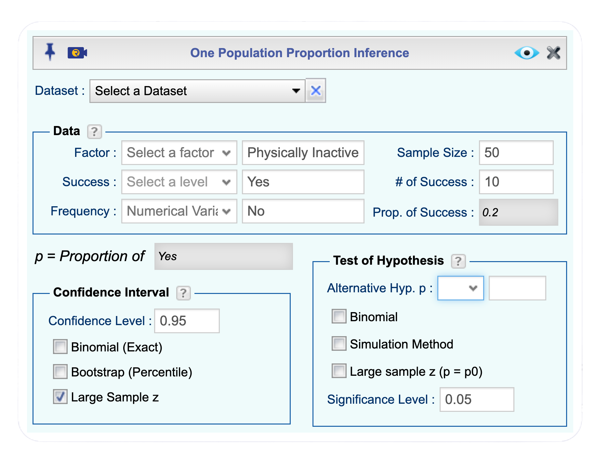
Click to expand the box below to see the Rguroo output.
Rguroo output: One-Population Proportion Inference Output - Physical Activity
From the Rguroo output, the 95% large sample confidence interval for \(p\) is \((0.089, 0.311).\) We are 95% confident that the true proportion of adults in the country who are physically inactive is between 0.089 (8.9%) and 0.311 (31.1%).
b. To obtain a 99% confidence interval, we use the same steps as in part (a) except for Step 4 of the Rguroo instructions, we enter 0.99 instead of 0.95 in the Confidence Level textbox.
The 99% confidence interval reported in the Rguroo output is \((0.0543, 0.3457)\), with a width of \(0.3457 - 0.0543 = 0.2914\). In comparison, the 95% confidence interval is \((0.0891, 0.3109)\), with a width of \(0.3109 - 0.0891 = 0.2218\). Thus, the 99% confidence interval is wider than the 95% confidence interval. The widths of the confidence intervals are also reported in the last column of the Rguroo Confidence Interval output.
The 99% confidence interval is wider than the 95% confidence interval. For the same sample size and observed sample proportion, a higher confidence level produces a wider confidence interval.
As we saw in the example above, increasing the confidence level resulted in a wider confidence interval. This illustrates an important relationship between confidence level and interval width.
As we saw in Example 9.30, the 95% confidence interval did not contain the null value \(p_0=0.36,\) and the corresponding two-sided hypothesis test at \(\alpha=0.05\) rejected \(H_0:p=0.36.\) This is not a coincidence. Recall from Section 8.7 that a confidence interval can be constructed by inverting a two-sided hypothesis test.
More generally, a \((1-\alpha)\times100\%\) confidence interval and a two-sided hypothesis test at significance level \(\alpha\) lead to the same decision. If the null value \(p_0\) is inside the confidence interval, it is a plausible value for \(p\) based on the observed data, and we fail to reject \(H_0.\) If \(p_0\) is outside the confidence interval, it is not a plausible value for \(p,\) and we reject \(H_0.\)
Example 9.31 (Marijuana Legalization: Large Sample Confidence Interval) Recall Example 9.9. The GSS2024 dataset contains responses from \(n = 388\) U.S. adults, of whom \(x_{\text{obs}} = 282\) supported the legalization of marijuana, giving a sample proportion of \(\hat{p}_{\text{obs}} = 282/388 \approx 0.7268.\)
Check the 10-10 rule and determine whether the large sample normal approximation applies.
Use Rguroo’s One-Population Proportion inference function to obtain a 95% large sample normal approximation confidence interval for the true proportion of American adults who support the legalization of marijuana.
What is the margin of error for this interval?
 The dataset for this example is available in the Rguroo dataset repository Kozak, with the dataset name GSS2024.
The dataset for this example is available in the Rguroo dataset repository Kozak, with the dataset name GSS2024.
Code book for Dataset GSS2024 is given here.
🔎 Solution
a. Checking the 10-10 rule:
\[ \begin{aligned} n\hat{p}_{\text{obs}} &= 388 \times 0.7268 \approx 282 \geq 10, \\ n(1-\hat{p}_{\text{obs}}) &= 388 \times 0.2732 \approx 106 \geq 10. \end{aligned} \] Both values satisfy the 10-10 rule. Therefore, the large sample normal approximation is appropriate.
b. Click to see Rguroo instructions for obtaining a confidence interval:
Before you begin: Make sure you have already imported the GSS2024 dataset into your Rguroo account, as shown here.
Open the Analytics toolbox in Rguroo.
From the Analysis dropdown, select Proportion Inference → One Population. This opens the One Population Proportion Inference dialog.
From the Dataset dropdown select the dataset GSS2024.
From the Factor dropdown select the categorical variable Grass.
(Optional) In the Factor Label textbox type in Legalize Marijuana. The label is usually a more descriptive version of the variable name.
From the Success dropdown select Yes. This indicates those who agree with legalization of marijuana. (Once you select these values, the sample size, number of successes, and proportion of successes will be populated automatically on the dialog.)
In the Confidence Interval section of the dialog, enter the following:
- In the Confidence Level textbox, type in 0.95.
- Select the Large Sample z checkbox to use the large sample normal approximation method.
Click the preview icon
to view the output.Click the
button and save the result as GSS2024PropCI.
Rguroo One-Population Proportion dialog
The following is a screenshot of the One Population Proportion Inference dialog for obtaining the large sample normal confidence interval for this example.
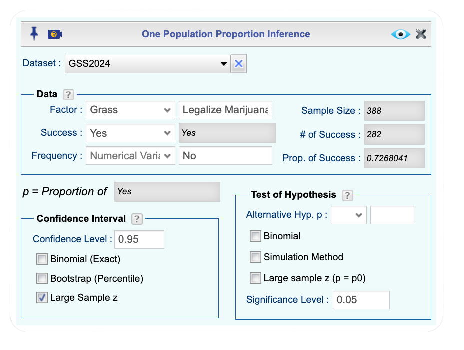
Click to expand the box below to see the Rguroo output.
Rguroo output: One-Population Proportion Inference Output - Marijuana Legalization
From the Rguroo output, the 95% large sample confidence interval for \(p\) is \((0.682, 0.771).\) We are 95% confident that the true proportion of American adults who support the legalization of marijuana is between 0.682 (68.2%) and 0.771 (77.1%).
c. The Rguroo output shows that the width of the interval is 0.0886764. Therefore, the margin of error is half the interval width: \[\text{Margin of Error} = \frac{0.0886764}{2} \approx 0.0443.\]
9.6.2 Confidence Interval Based on the Exact Binomial Method
As we saw in Example 9.28, we can construct a confidence interval for the population proportion \(p\) by testing a grid of null hypotheses \(H_0: p = p_0\) and collecting all values of \(p_0\) for which we fail to reject \(H_0.\) When this approach uses the exact binomial distribution to carry out each test, the resulting interval is called the exact binomial confidence interval. As we noted in that example, this method has an important advantage: it correctly reflects any asymmetry in the data, which can occur when the large sample condition fails and the binomial distribution is skewed.
Of course, testing every conceivable value of \(p_0\) between 0 and 1 is not practical. Fortunately, efficient algorithms can locate the exact endpoints of the interval directly, without testing each value one by one. These algorithms are implemented in Rguroo, making it straightforward to obtain the exact binomial confidence interval in practice. The following example illustrates how.
Example 9.32 (Daily YouTube Use Among Teens: Exact Binomial Confidence Interval) Recall Example 9.1. A sample of \(n = 20\) students produced \(x_{\text{obs}} = 17\) daily YouTube users, giving a sample proportion of \(\hat{p}_{\text{obs}} = 17/20 = 0.85.\)
Check the 10-10 rule to determine whether we can use the large sample normal approximation for this problem?
Use Rguroo’s One-Population Proportion inference function to construct a 95% exact binomial confidence interval for the true proportion of students in the district who use YouTube daily, and interpret the interval in the context of the problem.
🔎 Solution
a. To check whether the large sample normal approximation is appropriate, we apply the 10-10 rule: \[ \begin{aligned} n\hat{p}_{\text{obs}} &=20(0.85)=17\geq10,\\ n(1-\hat{p}_{\text{obs}}) &=20(0.15)=3<10. \end{aligned} \] The second condition is not satisfied because there are only 3 observed failures. Therefore, the large sample normal approximation is not appropriate for this example.
b. Click to expand the box below to see how to use the Proportion Inference function in Rguroo to obtain an exact binomial confidence interval for this problem.
Open the Analytics toolbox in Rguroo.
From the Analysis dropdown, select Proportion Inference → One Population. This opens the One Population Proportion Inference dialog.
In the Data section of the dialog, enter the following:
- In the Factor Label textbox, type a label for the categorical variable. In Rguroo, a “factor” refers to a categorical variable. For this example, enter Daily YouTube Use.
- In the Success Label textbox, type Yes. A success corresponds to a student who uses YouTube daily.
- In the Failure Label textbox, type No.
- In the Sample Size textbox, type 20.
- In the # of Successes textbox, type 17.
In the Confidence Interval section of the dialog, enter the following:
- In the Confidence Level textbox, enter 0.95. This is the default value for a 95% confidence level.
- Select the Binomial (Exact) checkbox to obtain the exact binomial confidence interval.
Click the preview icon
to view the output.Click the
button and save the result as YoutubeBinomCi.
Rguroo One-Population Proportion dialogs

Click to expand the box below to see the Rguroo output.
Rguroo output: One-Population Proportion Inference Output - YouTube
From the Rguroo output, the 95% exact binomial confidence interval for \(p\) is \((0.628, 0.958).\) The following is an interpretation of this interval:
We are 95% confident that the true proportion of students in the district who use YouTube daily is between 0.628 (62.8%) and 0.958 (95.8%).
Notice that this interval is consistent with what we found using the grid in Example 9.28, where we identified the range of plausible values as approximately 0.65 to 0.95. The exact interval extends the lower endpoint to 0.628, which lies between the grid values 0.60 and 0.65, where the p-value crossed the 0.05 threshold, just as we anticipated. The upper endpoint, 0.958, also agrees with the grid analysis, which placed the upper crossing between 0.95 (fail to reject) and 0.99 (reject). Thus, the grid approach gave us a good approximation to the range of plausible values, while the exact binomial method determines the endpoints more precisely.
Notice that the exact binomial interval is not symmetric around \(\hat{p}_{\text{obs}}=0.85.\) Its midpoint, as reported in the Rguroo output, is approximately 0.793. Unlike the normal-approximation interval, the exact binomial interval does not need to be centered at the observed sample proportion.
🔎 Solution
The following is a screenshot of the One Population Proportion Inference for obtaining the exact binomial confidence interval for this example.
![Screenshot of a “One Population Proportion Inference” interface. The factor is “Use Social media,” with success defined as “Yes.” The sample size is 15 with 9 successes, giving a sample proportion of 0.60. In the Confidence Interval section, the 95% level is selected and the “Binomial (Exact)” option is checked, while Bootstrap and Large Sample z are unchecked. In the Test of Hypothesis panel, a left-tailed alternative hypothesis (p < 0.35) is selected, the Binomial test method is checked, and the significance level is 0.05.](Rguroo_dialogs/Proportion_inference/binom-ci-social_dialog.png)
Click to expand the box below to see the Rguroo output.
Rguroo output: One-Population Proportion Inference Output - Social Media
From the Rguroo output, the 95% exact binomial confidence interval for \(p\) is \((0.3325, 0.8091).\) We are 95% confident that the true proportion of students at the university who get most of their news from social media is between 0.3325 (33.25%) and 0.8091 (80.91%).
The midpoint of the interval is reported as 0.571, which is not equal to the observed sample proportion \(\hat{p}_{\text{obs}} = 0.60.\) This is because the exact binomial confidence interval does not need to be symmetric around the observed sample proportion, unlike the large sample normal approximation confidence interval, especially when the 10-10 rule is not satisfied, as is the case here. The 10-10 rule is not satisfied because \(n\hat{p}_{\text{obs}} = 15(0.6) = 9 < 10\) and \(n(1-\hat{p}_{\text{obs}}) = 15(0.4) = 6 < 10.\)
Example 9.34 (Heavy Chinstrap Penguins: Exact Binomial Confidence Interval) Recall Example 9.15. The palmer_penguins_Chinstrap dataset contains measurements on \(n = 34\) Chinstrap penguins.
Use Rguroo’s One-Population Proportion inference function to construct a 95% exact binomial confidence interval for the true proportion of Chinstrap penguins that are heavy, and interpret the interval in the context of the problem.
The dataset for this example is available in the Rguroo dataset repository Kozak, with the dataset name palmer_penguins_Chinstrap. Table Table 9.2 displays the first six rows of the dataset. A complete description of the variables is provided in the dataset code book that follows.
9.6.3 Homework for Section 9.6
Arizona Marijuana Legalization In Problem 1 (Arizona Marijuana Legalization) of Section 9.1.4, \(p\) is the true proportion of Arizona registered voters who support marijuana legalization. The sample consisted of \(n = 779\) voters, of whom \(x_{\text{obs}} = 390\) favored legalization.
- Check whether the large sample condition is satisfied using the 10-10 rule. Based on your answer, determine whether the large sample normal approximation confidence interval is appropriate.
- Use Rguroo’s One-Population Proportion inference function with the Large Sample z option to obtain a 95% confidence interval for \(p.\) Interpret the interval in the context of the problem.
- At the time of this poll, 55% of Colorado residents supported the legalization of marijuana. Use your confidence interval to test \(H_0: p = 0.55\) versus \(H_a: p \neq 0.55\) at the \(\alpha = 0.05\) significance level. Do Arizona registered voters differ from Colorado residents in their support for marijuana legalization?
Airport Security Screening In a random sample of \(n = 40\) passengers at a particular airport terminal, \(x_{\text{obs}} = 5\) required additional security screening. Let \(p\) be the true proportion of passengers at this terminal who require additional security screening.
- Check whether the large sample condition is satisfied using the 10-10 rule. Based on your answer, determine whether the large sample normal approximation confidence interval is appropriate.
- Use Rguroo’s One-Population Proportion inference function with the Binomial option to obtain a 95% exact binomial confidence interval for \(p.\) Interpret the interval in the context of the problem.
Australian Unemployment Outlook In Problem 2 (Australian Unemployment Outlook) of Section 9.1.4, \(p\) is the true proportion of Australians in November 1997 who believed unemployment would increase. The sample consisted of \(n = 631\) Australians, of whom \(x_{\text{obs}} = 284\) believed unemployment would increase.
- Check whether the large sample condition is satisfied using the 10-10 rule. Based on your answer, determine whether the large sample normal approximation confidence interval is appropriate.
- Use Rguroo’s One-Population Proportion inference function with the Large Sample z option to obtain a 90% confidence interval for \(p.\) Interpret the interval in the context of the problem.
Defective Computer Chips A quality-control inspector randomly selects \(n = 50\) computer chips from a manufacturer’s production line and finds that \(x_{\text{obs}} = 5\) are defective. Let \(p\) be the true proportion of chips produced by this manufacturer that are defective.
- Check whether the large sample condition is satisfied using the 10-10 rule. Based on your answer, determine whether the large sample normal approximation confidence interval is appropriate.
- Use Rguroo’s One-Population Proportion inference function with the Binomial option to obtain a 90% exact binomial confidence interval for \(p.\) Interpret the interval in the context of the problem.
Arkansas Identity Theft Complaints In Problem 3 (Arkansas Identity Theft Complaints) of Section 9.1.4, \(p\) is the true proportion of consumer complaints in Arkansas that were for identity theft. The sample consisted of \(n = 3{,}482\) complaints, of which \(x_{\text{obs}} = 1{,}601\) were for identity theft.
- Check whether the large sample condition is satisfied using the 10-10 rule. Based on your answer, determine whether the large sample normal approximation confidence interval is appropriate.
- Use Rguroo’s One-Population Proportion inference function with the Large Sample z option to obtain a 95% confidence interval for \(p.\) Interpret the interval in the context of the problem.
Daily YouTube Use Among Teens: Small Sample Recall Example 9.1. Suppose that instead of a sample of \(n = 20\) students, only \(n = 15\) students were available, and \(x_{\text{obs}} = 13\) of them reported using YouTube daily.
- Check whether the large sample condition is satisfied using the 10-10 rule. Based on your answer, determine whether the large sample normal approximation confidence interval is appropriate.
- Use Rguroo’s One-Population Proportion inference function with the Binomial option to obtain a 95% exact binomial confidence interval for \(p.\) Interpret the interval in the context of the problem.
Seed Germination Rate A gardener randomly selects \(n = 20\) seeds of a particular variety and plants them under specified growing conditions. Of these, \(x_{\text{obs}} = 15\) germinate. Let \(p\) be the true germination rate for this variety of seeds under these conditions.
- Check whether the large sample condition is satisfied using the 10-10 rule. Based on your answer, determine whether the large sample normal approximation confidence interval is appropriate.
- Use Rguroo’s One-Population Proportion inference function with the Binomial option to obtain a 95% exact binomial confidence interval for \(p.\) Interpret the interval in the context of the problem.
Social Media as a Primary News Source: Small Sample Recall Example 9.3. Suppose that instead of a sample of \(n = 15\) students, only \(n = 12\) students were available, and \(x_{\text{obs}} = 7\) of them reported using social media as their primary news source.
- Check whether the large sample condition is satisfied using the 10-10 rule. Based on your answer, determine whether the large sample normal approximation confidence interval is appropriate.
- Use Rguroo’s One-Population Proportion inference function with the Binomial option to obtain a 95% exact binomial confidence interval for \(p.\) Interpret the interval in the context of the problem.
- Use your confidence interval to test \(H_0: p = 0.36\) versus \(H_a: p \neq 0.36\) at the \(\alpha = 0.05\) significance level. Is there evidence that the proportion of students who get most of their news from social media differs from 36%?
Online Order Returns A small online retailer randomly examines \(n = 30\) of its recent orders and finds that \(x_{\text{obs}} = 1\) was returned. Let \(p\) be the true proportion of this retailer’s orders that are returned.
- Check whether the large sample condition is satisfied using the 10-10 rule. Based on your answer, determine whether the large sample normal approximation confidence interval is appropriate.
- Use Rguroo’s One-Population Proportion inference function with the Binomial option to obtain a 99% exact binomial confidence interval for \(p.\) Interpret the interval in the context of the problem.
Alaska Identity Theft Complaints In Problem 4 (Alaska Identity Theft Complaints) of Section 9.1.4, \(p\) is the true proportion of consumer complaints in Alaska that were for identity theft. The sample consisted of \(n = 1{,}432\) complaints, of which \(x_{\text{obs}} = 321\) were for identity theft.
- Check whether the large sample condition is satisfied using the 10-10 rule. Based on your answer, determine whether the large sample normal approximation confidence interval is appropriate.
- Use Rguroo’s One-Population Proportion inference function with the Large Sample z option to obtain a 95% confidence interval for \(p.\) Interpret the interval in the context of the problem.
- According to the Federal Trade Commission, 23% of all consumer complaints in 2007 were for identity theft. Use your confidence interval to test \(H_0: p = 0.23\) versus \(H_a: p \neq 0.23\) at the \(\alpha = 0.05\) significance level. Is there evidence that Alaska’s proportion of identity theft complaints differs from the national proportion?
Free-Throw Shooting A basketball player attempts \(n = 20\) free throws during a randomly selected practice session and makes \(x_{\text{obs}} = 14\) of them. Let \(p\) be the true proportion of free throws this player makes.
- Check whether the large sample condition is satisfied using the 10-10 rule. Based on your answer, determine whether the large sample normal approximation confidence interval is appropriate.
- Use Rguroo’s One-Population Proportion inference function with the Binomial option to obtain a 95% exact binomial confidence interval for \(p.\) Interpret the interval in the context of the problem.
Kennedy Assassination Conspiracy Belief In Problem 5 (Kennedy Assassination Conspiracy Belief) of Section 9.1.4, \(p\) is the true proportion of American adults in 2013 who believed there was a conspiracy behind President Kennedy’s assassination. The sample consisted of \(n = 1{,}039\) adults, of whom \(x_{\text{obs}} = 634\) believed in a conspiracy.
- Check whether the large sample condition is satisfied using the 10-10 rule. Based on your answer, determine whether the large sample normal approximation confidence interval is appropriate.
- Use Rguroo’s One-Population Proportion inference function with the Large Sample z option to obtain a 95% confidence interval for \(p.\) Interpret the interval in the context of the problem.
- In 2001, a Gallup poll found that 81% of American adults believed there was a conspiracy behind the assassination. Use your confidence interval to test \(H_0: p = 0.81\) versus \(H_a: p \neq 0.81\) at the \(\alpha = 0.05\) significance level. Is there evidence that American belief in a conspiracy changed between 2001 and 2013?
Rare Side Effect Among a random sample of \(n = 60\) patients receiving a commonly used medication at a clinic, \(x_{\text{obs}} = 4\) experienced a particular side effect. Let \(p\) be the true proportion of patients at this clinic who experience this side effect.
- Check whether the large sample condition is satisfied using the 10-10 rule. Based on your answer, determine whether the large sample normal approximation confidence interval is appropriate.
- Use Rguroo’s One-Population Proportion inference function with the Binomial option to obtain a 95% exact binomial confidence interval for \(p.\) Interpret the interval in the context of the problem.
Autism Spectrum Disorder in Arizona In Problem 6 (Autism Spectrum Disorder in Arizona) of Section 9.1.4, \(p\) is the true proportion of children in Arizona diagnosed with ASD. The sample consisted of \(n = 32{,}601\) children, of whom \(x_{\text{obs}} = 507\) were diagnosed with ASD.
- Check whether the large sample condition is satisfied using the 10-10 rule. Based on your answer, determine whether the large sample normal approximation confidence interval is appropriate.
- Use Rguroo’s One-Population Proportion inference function with the Large Sample z option to obtain a 90% confidence interval for \(p.\) Interpret the interval in the context of the problem.
Graduate Degree Attainment: GSS2024 In Problem 7 (Graduate Degree Attainment: GSS2024) of Section 9.1.4, \(p\) is the true proportion of U.S. adults who hold a graduate degree. The sample consisted of \(n = 388\) adults, of whom \(x_{\text{obs}} = 33\) reported a graduate degree as their highest level of education.
- Check whether the large sample condition is satisfied using the 10-10 rule. Based on your answer, determine whether the large sample normal approximation confidence interval is appropriate.
- Use Rguroo’s One-Population Proportion inference function with the Large Sample z option to obtain a 99% confidence interval for \(p.\) Interpret the interval in the context of the problem.
- According to the U.S. Census Bureau, approximately 15% of U.S. adults aged 25 and older hold a graduate degree. Use your confidence interval to test \(H_0: p = 0.15\) versus \(H_a: p \neq 0.15\) at the \(\alpha = 0.01\) significance level. Does the GSS2024 data provide evidence that the proportion of U.S. adults who hold a graduate degree differs from 15%?
 The dataset for this exercise is available in the Rguroo dataset repository Kozak, with the dataset name GSS2024.
The dataset for this exercise is available in the Rguroo dataset repository Kozak, with the dataset name GSS2024.
Code book for Dataset GSS2024 is given here.
9.7 Hypothesis Testing for Two Proportions
Many important research questions require comparing proportions between two groups. In medical research, clinical trials compare treatment outcomes between patients receiving a new therapy and those receiving a placebo or standard care. In the social sciences, researchers investigate differences between demographic groups. In educational research, teachers evaluate whether new instructional methods outperform traditional approaches. Understanding how to compare two population proportions allows us to evaluate whether observed differences in sample data reflect genuine population differences or are due to chance variation.
Consider a few recent examples: A Phase 3 trial of the mRNA-1273 vaccine (Moderna) with over 30,000 participants found that 0.4% of the vaccinated group developed symptomatic COVID-19 compared to 4.9% in the placebo group—a substantial difference. A 2022 study examining 1,166 articles in Political Psychology found that 35.1% of lead authors were women compared to 64.9% men, highlighting a gender gap in academic publishing. In each case, researchers collected data from two independent samples, observed different sample proportions, and found statistical evidence that the population proportions differed.
While these large-scale studies demonstrate striking differences, many research questions involve smaller samples and more subtle effects where the statistical evidence is less clear-cut. In this section, we develop the concepts and tools for comparing two population proportions by working with examples where the answer is not immediately obvious and careful statistical reasoning is required.
We extend the hypothesis testing framework from one proportion to two proportions. The same core concepts—null and alternative hypotheses, test statistics, p-values, Type I and Type II errors, and significance levels—continue to apply. However, we now focus on the difference between two population proportions rather than a single proportion.
9.7.1 The Null and Alternative Hypotheses
To develop these concepts and tools, we’ll work with four examples: an educational intervention comparing instructional approaches for teaching proportional reasoning, a health behavior study evaluating text message reminders for medication adherence, a workplace wellness program assessing nicotine patches for smoking cessation, and an analysis of gender differences in attitudes toward marijuana legalization from the General Social Survey.
When comparing two population proportions, we focus on the difference between them. We have two populations—let’s call one population 1 and the other population 2. It does not matter which population you designate as population 1 and which as population 2, as long as you clearly define your choice. We denote the population proportion for population 1 by \(p_1\) and the population proportion for population 2 by \(p_2.\) Our goal is to make inferences about the difference between these proportions: \(p_1 - p_2.\) To do this, we begin by formulating hypotheses about this difference.
Just as in the one-population case, we can formulate both one-sided and two-sided tests. The three cases are:
\[ \begin{aligned} \text{Case 1: } &\begin{cases} H_0: p_1 \leq p_2 \\ H_a: p_1 > p_2 \end{cases} \qquad \text{Case 2: } \begin{cases} H_0: p_1 \geq p_2 \\ H_a: p_1 < p_2 \end{cases} \\ \\ \text{Case 3: } &\begin{cases} H_0: p_1 = p_2 \\ H_a: p_1 \neq p_2 \end{cases} \end{aligned} \]
We can equivalently write these hypotheses in terms of the difference \(p_1 - p_2\):
\[ \begin{aligned} \text{Case 1: } &\begin{cases} H_0: p_1 - p_2 \leq 0 \\ H_a: p_1 - p_2 > 0 \end{cases} \qquad \text{Case 2: } \begin{cases} H_0: p_1 - p_2 \geq 0 \\ H_a: p_1 - p_2 < 0 \end{cases} \\ \\ \text{Case 3: } &\begin{cases} H_0: p_1 - p_2 = 0 \\ H_a: p_1 - p_2 \neq 0 \end{cases} \end{aligned} \]
Cases 1 and 2 are one-sided tests, while Case 3 is a two-sided test. In practice, the choice of case depends on the research question—specifically, whether we are testing for an increase, a decrease, or any difference. Let’s see how to set up the hypotheses for each of our examples.
Example 9.35 (Schema-Based Instruction: Stating Hypotheses) Researchers want to know whether a new schema-based instructional approach improves seventh-grade students’ mastery of proportional reasoning compared to traditional instruction. They randomly assign \(n_1=50\) students to the new approach and \(n_2=50\) students to traditional instruction. Let \(p_1\) represent the proportion of all students who would achieve mastery under the new approach, and \(p_2\) represent the proportion who would achieve mastery under traditional instruction. State the appropriate null and alternative hypotheses to address the research question.
Example 9.36 (Text Message Reminders: Stating Hypotheses) Researchers are piloting a text message reminder system for diabetes patients. They want to know whether daily text reminders improve medication adherence compared to standard care, but they’re also open to the possibility that the reminders might perform worse (perhaps by being annoying or overwhelming). They randomly assign \(n_1=40\) patients to receive text reminders and \(n_2=50\) patients to receive standard care. Let \(p_1\) represent the proportion of all patients who would have good adherence with text reminders, and \(p_2\) represent the proportion who would have good adherence with standard care. State the appropriate null and alternative hypotheses.
Example 9.37 (Smoking Cessation: Stating Hypotheses) A workplace wellness program is comparing two approaches to smoking cessation. Employees are randomly assigned to either receive free nicotine patches (60 employees - Group 1) or participate in a self-guided quitting program (60 employees - Group 2). However, the researchers believe that the self-guided approach might actually be more effective because it emphasizes personal commitment and doesn’t rely on external aids. Let \(p_1\) represent the proportion of all employees who would quit smoking with nicotine patches, and \(p_2\) represent the proportion who would quit with the self-guided approach. State the appropriate null and alternative hypotheses to test whether the self-guided approach is more effective.
Example 9.38 (GSS 2024: Gender and Marijuana Legalization) The General Social Survey (GSS) is a long-running national survey that monitors societal change and studies the growing complexity of American society. In a representative sample from the GSS 2024 data, there are \(n_1=204\) females and \(n_2=184\) males who were asked whether they support the legalization of marijuana. Of the 204 females, 142 said they support legalization. Of the 184 males, 140 said they support legalization. Researchers want to know whether this sample provides evidence that the proportion of females who support legalization differs from the proportion of males who support legalization. Let \(p_1\) represent the proportion of females in the population who support legalization, and \(p_2\) represent the proportion of males who support legalization. State the appropriate null and alternative hypotheses.
9.7.2 Data, Statistic, and Sampling Distribution
To make inferences about \(p_1 - p_2,\) we collect a sample of size \(n_1\) from population 1 and a sample of size \(n_2\) from population 2. Note that these sample sizes don’t have to be equal—researchers often work with unequal group sizes due to practical constraints or deliberate design choices.
Let \(X_1\) denote the number of successes (favorable outcomes) in our sample from population 1, and let \(X_2\) denote the number of successes in our sample from population 2. Although we could compare the counts through \(X_1-X_2,\) differences in counts are difficult to analyze and can be misleading when the sample sizes differ. Instead, we compare sample proportions and rely on the Central Limit Theorem for large samples.
The sample proportions are \(\hat{p}_1 = X_1/n_1\) and \(\hat{p}_2 = X_2/n_2.\) These are our point estimates of \(p_1\) and \(p_2,\) respectively. To make inferences about the difference \(p_1 - p_2,\) we naturally use the difference in sample proportions: \(\hat{p}_1 - \hat{p}_2.\)
The Sampling Distribution of \(\hat{p}_1 - \hat{p}_2\)
When the sample sizes \(n_1\) and \(n_2\) are both sufficiently large, the Central Limit Theorem tells us that the sampling distribution of \(\hat{p}_1 - \hat{p}_2\) is approximately normal. The rule of thumb for “sufficiently large” is that each group must have at least 10 successes and 10 failures: \(n_1\hat{p}_1 \geq 10,\) \(n_1(1-\hat{p}_1) \geq 10,\) \(n_2\hat{p}_2 \geq 10,\) and \(n_2(1-\hat{p}_2) \geq 10.\)
When these conditions are met, the sampling distribution of \(\hat{p}_1 - \hat{p}_2\) is approximately normal with mean \(p_1 - p_2\) and standard error
\[ \hat{p}_1 - \hat{p}_2 \sim N\left(p_1 - p_2, \; \text{SE}(\hat{p}_1 - \hat{p}_2)\right), \] where \[ \text{SE}(\hat{p}_1 - \hat{p}_2) = \sqrt{\frac{p_1(1-p_1)}{n_1} + \frac{p_2(1-p_2)}{n_2}}. \]
Notice that the variability depends on both sample sizes and population proportions.
Simplification Under the Null Hypothesis
Recall that when testing hypotheses, we work at the boundary of the null hypothesis, since the Type I error is maximized there. For all three cases above, the boundary value is \(p_1 - p_2 = 0,\) which means \(p_1 = p_2.\)
At this boundary, the two population proportions are equal. We denote their common value by \(p,\) so that \(p_1=p_2=p.\) As a result, the standard error simplifies to:
\[ \text{SE}(\hat{p}_1 - \hat{p}_2) = \sqrt{\frac{p(1-p)}{n_1} + \frac{p(1-p)}{n_2}} = \sqrt{p(1-p)\left(\frac{1}{n_1} + \frac{1}{n_2}\right)}. \]
Therefore, under the null hypothesis, the sampling distribution of \(\hat{p}_1 - \hat{p}_2\) is:
\[ \hat{p}_1 - \hat{p}_2 \sim N\left(0, \; \sqrt{p(1-p)\left(\frac{1}{n_1} + \frac{1}{n_2}\right)}\right). \]
This is the distribution we will use for hypothesis testing.
Estimating the Common Proportion
There is one practical issue: we do not know \(p,\) the common population proportion under \(H_0.\) Because \(H_0\) assumes that \(p_1=p_2,\) we treat the two samples as coming from populations with the same proportion. We therefore combine the number of successes from both samples and divide by the combined sample size. This gives us an estimate of the common population proportion called the pooled sample proportion: \[\hat{p} = \frac{X_1 + X_2}{n_1 + n_2}.\]
Using \(\hat{p}\) in place of \(p\) gives the estimated standard error:
\[ \widehat{\text{SE}}(\hat{p}_1 - \hat{p}_2) = \sqrt{\hat{p}(1-\hat{p})\left(\frac{1}{n_1} + \frac{1}{n_2}\right)}. \]
This estimated standard error is used in our test statistic and in determining critical regions and p-values, just as we did in the one-population case.
The following example works through all of these computations for one of our four studies. The remaining three are summarized in Table 9.3.
Example 9.39 (Schema-Based Instruction: Computing the Key Quantities) In the schema-based instruction study, \(n_1=50\) students were assigned to the new approach and \(n_2=50\) to traditional instruction. After the intervention, 34 students in the new approach group achieved mastery, while 24 students in the traditional instruction group achieved mastery.
- Compute the sample proportions \(\hat{p}_1\) and \(\hat{p}_2\) and their difference.
- Verify the large sample conditions.
- Compute the pooled sample proportion \(\hat{p}.\)
- Compute the estimated standard error of \(\hat{p}_1 - \hat{p}_2.\)
The same computations for all four studies are summarized in Table 9.3. We will refer back to this table when working through hypothesis tests in the next subsection.
| Study | \(n_1\) | \(X_1\) | \(n_2\) | \(X_2\) | \(\hat{p}_1\) | \(\hat{p}_2\) | \(\hat{p}_1 - \hat{p}_2\) | \(\hat{p}\) | \(\widehat{\text{SE}}\) |
|---|---|---|---|---|---|---|---|---|---|
| Schema-Based Instruction | 50 | 34 | 50 | 24 | 0.680 | 0.480 | 0.200 | 0.580 | 0.0987 |
| Text Message Reminders | 40 | 32 | 50 | 28 | 0.800 | 0.560 | 0.240 | 0.667 | 0.1000 |
| Smoking Cessation | 60 | 24 | 60 | 30 | 0.400 | 0.500 | \(-0.100\) | 0.450 | 0.0908 |
| GSS 2024 Marijuana Legalization | 204 | 142 | 184 | 140 | 0.696 | 0.761 | \(-0.065\) | 0.727 | 0.0453 |
9.7.3 Hypothesis Testing: p-Value and Critical Region Approaches
As we explained earlier, there are two equivalent approaches to making decisions in hypothesis testing: the p-value approach and the critical region approach. We now apply both approaches to testing hypotheses about the difference between two population proportions, \(p_1-p_2,\) and show how to carry them out using Rguroo.
Recall that we developed the sampling distribution of \(\hat{p}_1-\hat{p}_2\) at the null boundary \(p_1-p_2=0\) in the previous section. When the large-sample conditions are satisfied, we use this approximately normal distribution, together with the pooled sample proportion, to carry out the test. Both the p-value and critical region approaches use this same sampling distribution to determine whether the observed difference \(\hat{p}_1 - \hat{p}_2\) provides sufficient evidence against \(H_0\) and favors \(H_a.\)
A Note on Notation
In the one-sample sections, we used \(\hat{p}_{\text{obs}}\) to distinguish the observed sample proportion from the random variable \(\hat{p}.\) For two proportions, that notation becomes cumbersome — we would need \(\hat{p}_{1,\text{obs}}\) and \(\hat{p}_{2,\text{obs}}.\) To keep the notation simpler, we use \(\hat{p}_1\) and \(\hat{p}_2\) for both meanings. The context will make the meaning clear: when discussing sampling distributions or probabilities, they represent random variables; when working with the observed data or making a decision, they represent the observed sample proportions.
The p-value approach asks: “How much support does the observed difference provide for \(H_a\)?” The critical region approach asks: “Does the observed difference fall in the critical region?” Both approaches lead to the same conclusion, and we will use Rguroo to carry out both approaches.
Let’s examine each case in detail.
9.7.3.1 Case 1: Right-Tailed Test (\(H_a: p_1 - p_2 > 0\))
In this case, we want to test whether \(p_1 > p_2.\) The alternative hypothesis \(H_a: p_1 - p_2 > 0\) is supported when \(\hat{p}_1 - \hat{p}_2\) is positive, with larger positive differences providing stronger support for \(H_a.\) Values near zero or negative provide little or no support for \(H_a.\)
p-Value Approach:
The p-value measures he strength of the evidence against \(H_0\) and in favor of \(H_a.\) For a right-tailed test, the p-value is the probability of observing a difference that provides at least as much support for \(H_a\) as our observed difference, assuming \(p_1=p_2\):
\[\text{p-value} = P\left(\hat{p}_1-\hat{p}_2 \geq \text{observed difference}\right),\; \text{assuming } p_1=p_2.\]
This is the area to the right of the observed difference under the \(N\left(0, \sqrt{\hat{p}(1-\hat{p})\left(\frac{1}{n_1} + \frac{1}{n_2}\right)}\right)\) distribution. A small p-value indicates strong evidence against \(H_0\) and in favor of \(H_a,\) while a large p-value indicates that the data do not provide strong evidence against \(H_0.\)
Decision Rule:
- Reject \(H_0\) if p-value \(< \alpha\) (observed difference strongly support \(H_a\)).
- Fail to reject \(H_0\) if p-value \(\geq \alpha\) (data do not strongly support \(H_a\)).
Critical Region Approach:
The critical region consists of values in the upper tail of the sampling distribution. These are the values of \(\hat{p}_1-\hat{p}_2\) that are sufficiently large to lead us to reject \(H_0\) in favor of \(H_a: p_1-p_2>0.\) We find the critical value \(c\) o that the probability of falling in the critical region is equal to the significant level \(\alpha,\) assuming \(p_1=p_2\):
\[P\left(\hat{p}_1-\hat{p}_2 \geq c\right) = \alpha,\; \text{assuming }p_1=p_2.\]
Using the sampling distribution under this assumption,
\[\hat{p}_1-\hat{p}_2\sim N\left(0, \sqrt{\hat{p}(1-\hat{p})\left(\frac{1}{n_1} + \frac{1}{n_2}\right)}\right)\]
we choose \(c\) so that the area to the right of \(c\) is \(\alpha.\) We reject \(H_0\) if the observed difference \(\hat{p}_1-\hat{p}_2\) falls in this critical region.
Decision Rule:
- Reject \(H_0\) if \(\hat{p}_1 - \hat{p}_2 > c\) (observed difference strongly supports \(H_a\)).
- Fail to reject \(H_0\) if \(\hat{p}_1 - \hat{p}_2 \leq c\) (observed difference does not strongly support \(H_a\)).
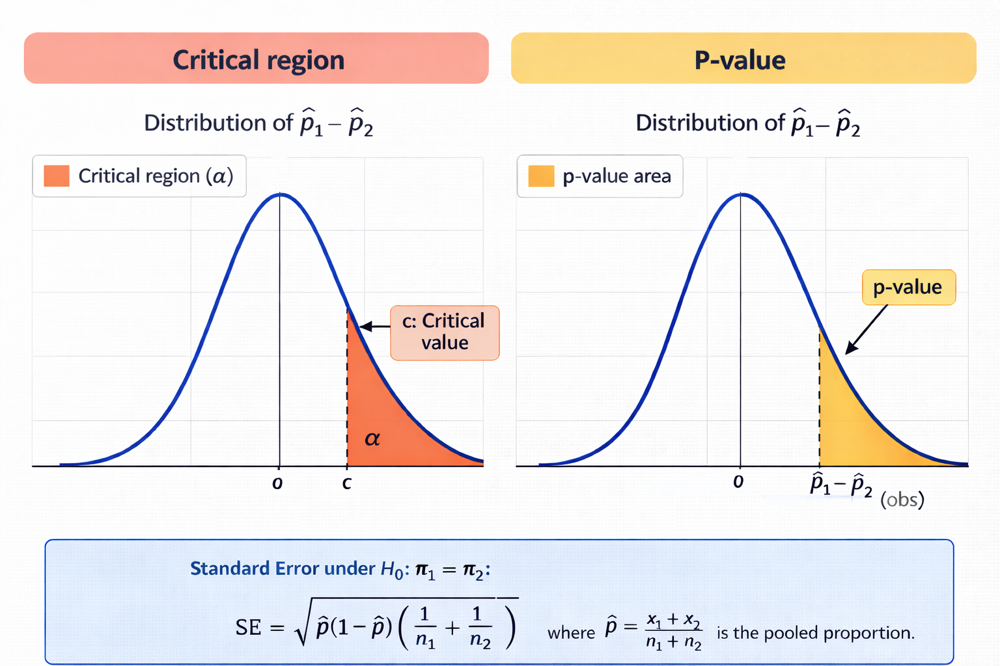
Example 9.40 (Schema-Based Instruction: Hypothesis Test - p-Value Example) For the schema-based instruction study, we want to test whether the new approach has a higher mastery rate than the traditional approach. Recall:
- \(n_1 = 50,\) \(X_1 = 34,\) \(\hat{p}_1 = 0.68\)
- \(n_2 = 50,\) \(X_2 = 24,\) \(\hat{p}_2 = 0.48\)
- \(\hat{p}_1 - \hat{p}_2 = 0.20\)
- \(\hat{p} = 0.58\)
Hypotheses: \[ \begin{cases} H_0: p_1 - p_2 \leq 0\\ H_a: p_1 - p_2 > 0. \end{cases} \]
Give a probability statement that describes the p-value.
Use Rguroo to obtain the p-value for the test and state your conclusion based on the significance level \(\alpha = 0.05.\)
🔎 Solution
a. As discussed in Section 9.7.2, assuming \(p_1 = p_2,\) the statistic \(\hat{p}_1 - \hat{p}_2\) is approximately normally distributed with mean 0 and standard error 0.0987. The standard error is reported in the Rguroo output. Since \(H_a:p_1-p_2>0,\) differences that are at least as large as the observed difference of \(0.20\) provide at least as much support for \(H_a.\) Therefore, the p-value is the probability of observing a difference of \(0.20\) or greater,
\[ \text{p-value} = P(\hat{p}_1 - \hat{p}_2 \geq 0.20), \; \text{assuming}\; p_1 = p_2. \] See Figure 9.52.
b. Click to expand the box below to see how to use the Proportion Inference function in Rguroo to answer this question.
Open the Analytics toolbox in Rguroo.
From the Analysis dropdown, select Proportion Inference → Two Populations. This opens the Two Population Proportion Inference dialog.
In the Response/Success section of the dialog, enter the following:
- In the Response Label textbox, type a label for the response variable. For this example, enter Improves Mastery.
- In the Success Label textbox, type Yes. A success corresponds to a student improving mastery.
- In the Failure Label textbox, type No.
In the Population section of the dialog, enter the following:
- In the Population textbox, enter a label for the population. In this example we enter Seventh Graders.
In the Data Summary tab, enter the sample information for populations 1 and 2.
- In the Population 1 section enter the following:
- Label: New
- Sample Size: 50
- # of Successes: 34
- In the Population 2 section enter the following:
- Label: Traditional
- Sample Size: 50
- [# of Successes]: 24
- In the Population 1 section enter the following:
Click on the Test of Hypothesis tab and specify the following:
- From the dropdown next to Alternative Hypothesis p1 - p2 select >, the greater than sign, and in the corresponding textbox type in 0.
- For Significance Level type in 0.05. This is the default value.
- In the Methods section, select the Large Sample z checkbox.
Click the preview icon
to view the output.Click the
button and save the result as SchemaProp2.
Rguroo Two-Population Proportion dialogs for the Schema-Based Instruction example
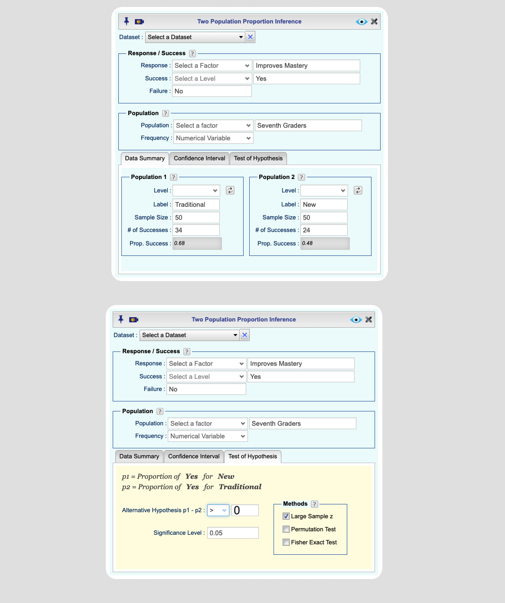
Click to expand the box below to see the Rguroo output.
Rguroo output: Two-Population Proportion Inference - Schema-Based Instruction
The p-value is shown in the Rguroo graph labeled P-Value Graph: Large Sample z, Pooled SE (shown in Figure 9.52). In the left panel, labeled Observed Data Scale, the area representing the p-value is shaded in red,. The p-value is 0.021377. This value is also reported in the results table.

Since the \(p\)-value is \(0.021 < 0.05,\) we reject \(H_0\) at the significance level of 0.05 and conclude that there is sufficient evidence in favor of \(H_a:p_1-p_2>0.\) Therefore, the data provide sufficient evidence that the mastery rate is higher for the new instructional approach than for the traditional approach.
Example 9.41 (Schema-Based Instruction: Hypothesis Test - Critical Region Example) For the schema-based instruction study, we want to test whether the new approach ihas a higher mastery rate than the traditional approach. Recall:
- \(n_1 = 50,\) \(X_1 = 34,\) \(\hat{p}_1 = 0.68\)
- \(n_2 = 50,\) \(X_2 = 24,\) \(\hat{p}_2 = 0.48\)
- \(\hat{p}_1 - \hat{p}_2 = 0.20\)
- \(\hat{p} = 0.58\)
Hypotheses: \[ \begin{cases} H_0: p_1 - p_2 \leq 0\\ H_a: p_1 - p_2 > 0. \end{cases} \]
Using Rguroo, obtain the critical region for a test at significance level \(\alpha = 0.05.\)
Based on the observed difference and the critical region in part (a), state the conclusion of the hypothesis test.
🔎 Solution
a. Click to expand the box below to see how to use the Proportion Inference function in Rguroo to answer this question.
Open the Analytics toolbox in Rguroo.
From the Analysis dropdown, select Proportion Inference → Two Populations. This opens the Two Population Proportion Inference dialog.
In the Response/Success section of the dialog, enter the following:
- In the Response Label textbox, type a label for the response variable. For this example, enter Improves Mastery.
- In the Success Label textbox, type Yes. A success corresponds to a student improving mastery.
- In the Failure Label textbox, type No.
In the Population section of the dialog, enter the following:
- In the Population textbox, enter a label for the population. In this example we enter Seventh Graders.
In the Data Summary tab enter the sample information for populations 1 and 2.
- In the Population 1 section enter the following:
- Label: New
- Sample Size: 50
- [# of Successes]: 34
- In the Population 2 section enter the following:
- Label: Traditional
- Sample Size: 50
- [# of Successes]: 24
- In the Population 1 section enter the following:
Click on the Test of Hypothesis tab and specify the following:
- From the dropdown next to Alternative Hypothesis p1 - p2 select >, the greater than sign, and in the corresponding textbox type in 0.
- For Significance Level type 0.05. This is the default value.
- In the Methods section, select the Large Sample z checkbox.
To obtain the critical region click the
 button to open the Advanced Features dialog.
button to open the Advanced Features dialog.- In the Test of Hypothesis Graphs section, select Critical Region Graph.
- (Optional) Uncheck the P-Value Graph.
Click the preview icon
to view the output.Click the
button and save the result as SchemaProp2cr.
Rguroo Two-Population Proportion dialogs for the Schema-Based Instruction example
![Screenshot of a Two Population Proportion Inference interface showing setup and analysis for comparing two proportions. The top panel includes fields for selecting a dataset, defining the response variable (Improves Mastery), and specifying success (Yes) and failure (No). The population is set to Seventh Graders. In the data summary section, Population 1 (new) has sample size 50 with 34 successes (proportion 0.68), and Population 2 (Traditional) has sample size 50 with 24 successes (proportion 0.48). The lower panel shows hypothesis test settings with alternative hypothesis p_1 - p_2 > 0, significance level 0.05, and method set to Large Sample z. A side panel labeled Advanced Features includes options for displaying p-value and critical region graphs, selecting confidence interval and test methods, and setting simulation parameters (replications and seed).](Rguroo_dialogs/Proportion_inference/prop2-schema-dialog.png)
Click to expand the box below to see the Rguroo output.
Rguroo output: Two-Population Proportion Inference - Schema-Based Instruction
From the Rguroo output graph labeled Critical Region Graph: Large Sample z, Pooled SE (shown in Figure 9.53), the critical region is $\(\hat{p}_1-\hat{p}_2 > 0.16237.\) The critical value \(0.16237\) is shown at the bottom of the left panel, labeled “Observed Data Scale,” and is also reported in the results table.
![Two side-by-side normal curves illustrating a right-tailed critical region test. The left panel (Observed Data Scale) shows the sampling distribution of the proportion difference with the critical value marked at 0.16237 and the observed difference at 0.2, both indicated by markers. The right-tail critical region beyond the critical value is shaded red. The right panel shows the same test on the Standard Normal (z) Scale. In both panels, the observed value (green triangle) falls within the red critical region.](Rguroo_outputs/Proportion_Inference/G_crTestSchema.png)
b. Since the observed difference \(\hat{p}_1 - \hat{p}_2 = 0.20 > 0.16237,\) the observed difference falls in the critical region (shown by the green triangle in the red critical region). Therefore, we reject \(H_0\) at the significance level \(\alpha=0.05\) and conclude that there is sufficient evidence in favor of \(H_a: p_1 - p_2 > 0.\) Thus, the data provide sufficient evidence that the mastery rate is higher for the new instructional approach than for the traditional approach.
9.7.3.2 Case 2: Left-Tailed Test (\(H_a: p_1 - p_2 < 0\))
Case 2 is the mirror of Case 1. Small (negative) values of \(\hat{p}_1 - \hat{p}_2\) support \(H_a,\) so the p-value and critical region lie in the lower tail of the null distribution.
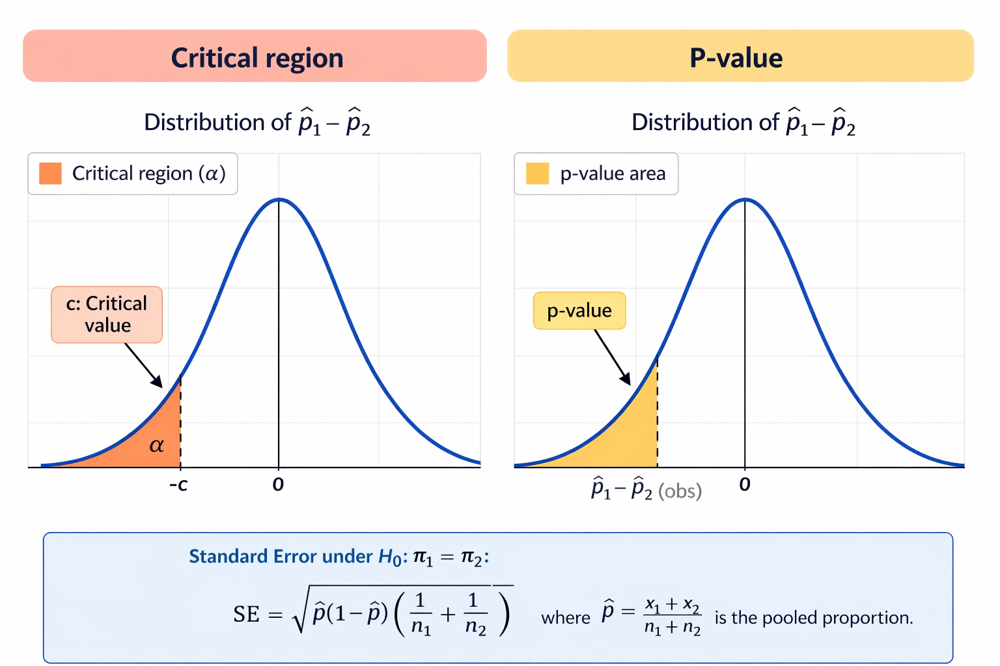
Critical Region Approach:
The critical region consists of values in the lower tail of the sampling distribution—these are the values that strongly support \(H_a: p_1 - p_2 < 0.\) We find the critical value \(c\) such that at the boundary where \(p_1 = p_2\):
\[P(\hat{p}_1 - \hat{p}_2 < c \mid p_1 = p_2) = \alpha\]
Using the sampling distribution at the boundary, we find \(c\) from \(N\left(0, \sqrt{\hat{p}(1-\hat{p})\left(\frac{1}{n_1} + \frac{1}{n_2}\right)}\right)\) such that the area to the left equals \(\alpha.\)
Decision Rule:
- Reject \(H_0\) if \(\hat{p}_1 - \hat{p}_2 < c\) (observed difference strongly supports \(H_a\)).
- Fail to reject \(H_0\) if \(\hat{p}_1 - \hat{p}_2 \geq c\) (observed difference does not strongly support \(H_a\)).
Example 9.42 (Smoking Cessation: Hypothesis Test - p-Value Example) For the smoking cessation study, we want to test whether the self-guided approach has a higher quit-smoking rate than the nicotine patch approach. Recall:
- \(n_1 = 60,\) \(X_1 = 24,\) \(\hat{p}_1 = 0.40\)
- \(n_2 = 60,\) \(X_2 = 30,\) \(\hat{p}_2 = 0.50\)
- \(\hat{p}_1 - \hat{p}_2 = -0.10\)
Hypotheses: \[ \begin{cases} H_0: p_1 - p_2 \geq 0\\ H_a: p_1 - p_2 < 0. \end{cases} \]
- Give a probability statement that describes the p-value.
- Use Rguroo to obtain the p-value for the test and state your conclusion based on the significance level \(\alpha = 0.10.\)
🔎 Solution
a. As discussed in Section 9.7.2, assuming \(p_1 = p_2,\) the statistic \(\hat{p}_1 - \hat{p}_2\) is approximately normally distributed with mean 0 and standard error 0.09083. Note that this standard error is reported in the Rguroo output.
The \(p\)-value is the probability of observing a difference at least as small as the observed difference of \(-0.10,\) assuming \(p_1 = p_2\): \[ \text{p-value} = P(\hat{p}_1 - \hat{p}_2 \leq -0.10)\;\text{assuming}\;p_1 = p_2. \]
b. To perform this hypothesis test in Rguroo, follow the same steps given in the solution of Example 9.40. One difference is that in the Test of Hypothesis tab, for Alternative Hypothesis p1 − p2, you should select the < (less than) option because this is a left-tailed test, and set the Significance Level to 0.10. In addition, the values in the Basics dialog of Two Population Proportion Inference and in the Data Summary tab should match those shown in Figure 9.55.

Click to expand the box below to see the Rguroo output.
Rguroo output: Two-Population Proportion Inference - Smoking Cessation Example
The p-value is depicted in the Rguroo output graph labeled P-Value Graph: Large Sample z, Pooled SE (shown in Figure 9.56). In the left panel (labeled “Observed Data Scale”), the area corresponding to the \(p\)-value is shaded in red, and its value is 0.13546. This value is also reported in the results table.

Since the p-value is \(0.13546 > 0.10,\) we fail to reject \(H_0\) at the 10% significance level. There is not sufficient evidence in favor of \(H_a: p_1 - p_2 < 0.\)
Although the observed difference of \(-0.10\) is in the direction of \(H_a\) (the self-guided approach showed a 50% quit rate compared to 40% for nicotine patches), the p-value of 0.13546 indicates that a difference at least this supportive of \(H_a\) is not particularly unusual, assuming \(p_1=p_2.\) Therefore, the data do not provide sufficient evidence that the self-guided approach has a higher quit-smoking rate than the nicotine patch approach.
Example 9.43 (Smoking Cessation: Hypothesis Test - Critical Region Example) For the smoking cessation study, we want to test whether the self-guided approach has a higher quit-smoking rate than the nicotine patch approach. Recall:
- \(n_1 = 60,\) \(X_1 = 24,\) \(\hat{p}_1 = 0.40\)
- \(n_2 = 60,\) \(X_2 = 30,\) \(\hat{p}_2 = 0.50\)
- \(\hat{p}_1 - \hat{p}_2 = -0.10\)
Hypotheses: \[ \begin{cases} H_0: p_1 - p_2 \geq 0\\ H_a: p_1 - p_2 < 0. \end{cases} \]
- Using Rguroo, obtain the critical region for a test at significance level \(\alpha =0.10.\)
- Based on the observed difference and the critical region in part (a), state the conclusion of the hypothesis test.
🔎 Solution
a. To perform this hypothesis test in Rguroo, follow the same steps given in the solution of Example 9.41. One difference is that in the Test of Hypothesis tab, for Alternative Hypothesis p1 − p2, you should select the < (less than) option because this is a left-tailed test, and set the Significance Level to 0.10. In addition, the values in the Basics dialog of Two Population Proportion Inference and in the Data Summary tab should match those shown in Figure 9.57.
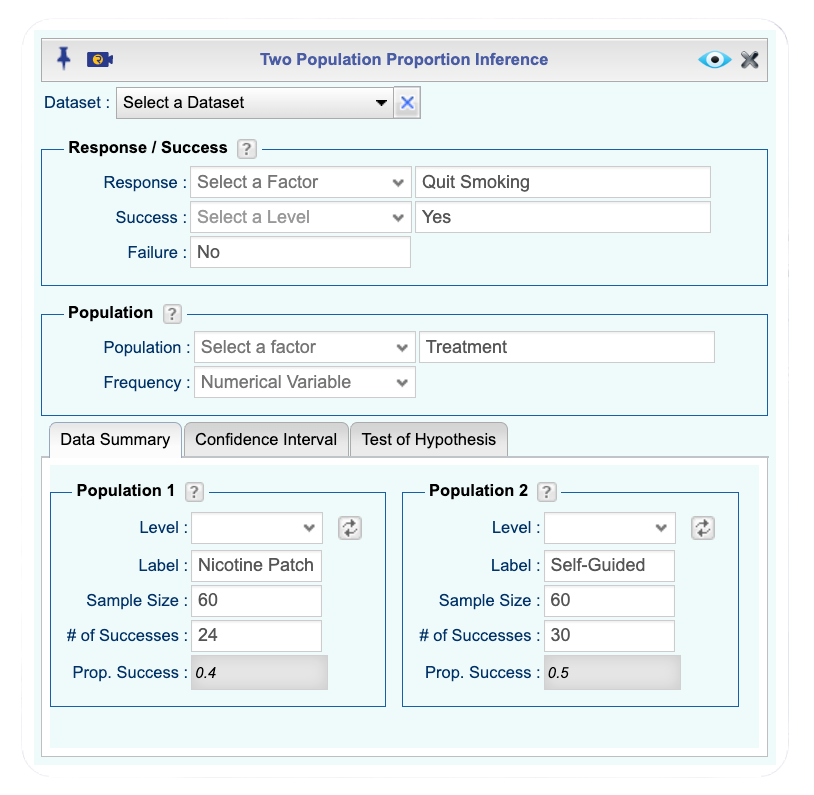
Click to expand the box below to see the Rguroo output.
Rguroo output: Two-Population Proportion Inference - Smoking Cessation Example
As discussed in Section 9.7.2, assuming \(p_1=p_2,\) the statistic \(\hat{p}_1-\hat{p}_2\) is approximately normally distributed with mean 0 and standard error 0.09083. We use this null distribution to determine the critical region.

From the Rguroo output graph labeled Critical Region Graph: Large Sample z, Pooled SE (shown in Figure 9.58), the critical value is \(c=-0.1164,\) displayed at the bottom of the left panel. Therefore, the critical region is
\[ \hat{p}_1-\hat{p}_2<-0.1164. \]
Since the observed difference \(\hat{p}_1-\hat{p}_2=-0.10\) is greater than \(-0.1164\), it does not fall in the critical region, as shown by the green triangle outside the red-shaded region. Therefore, we fail to reject \(H_0\) at the 10% significance level.
Although the observed difference of \(-0.10\) is in the direction of \(H_a\) (the self-guided approach had a 50% quit-smoking rate compared with 40% for the nicotine patch approach), the observed difference does not fall in the critical region. Therefore, the data do not provide sufficient evidence that the self-guided approach has a higher quit-smoking rate than the nicotine patch approach.
9.7.3.3 Case 3: Two-Tailed Test (\(H_a: p_1 - p_2 \neq 0\))
In Case 3, \(H_a\) is supported when \(\hat{p}_1 - \hat{p}_2\) is far from zero in either direction. The p-value is therefore a two-tail probability, and the critical region occupies both tails with \(\alpha/2\) in each.
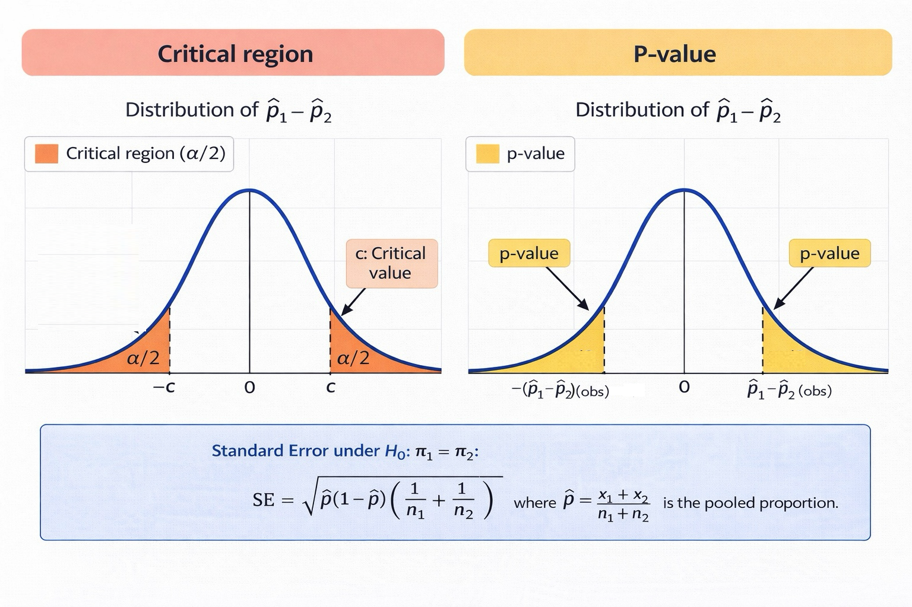
Critical Region Approach:
The critical region consists of values in both tails of the sampling distribution—these are the values that strongly support \(H_a: p_1 - p_2 \neq 0.\) We find two critical values, \(c_1\) and \(c_2,\) such that at the boundary where \(p_1 = p_2\):
\[P(\hat{p}_1 - \hat{p}_2 < c_1 \text{ or } \hat{p}_1 - \hat{p}_2 > c_2 \mid p_1 = p_2) = \alpha\]
We split \(\alpha\) equally between the two tails (\(\alpha/2\) in each tail). Using the sampling distribution at the boundary:
- \(c_1\) is the value with area \(\alpha/2\) to its left
- \(c_2\) is the value with area \(\alpha/2\) to its right
Decision Rule:
- Reject \(H_0\) if \(\hat{p}_1 - \hat{p}_2 < c_1\) or \(\hat{p}_1 - \hat{p}_2 > c_2\) (observed difference strongly supports \(H_a\)).
- Fail to reject \(H_0\) if \(c_1 \leq \hat{p}_1 - \hat{p}_2 \leq c_2\) (observed difference does not strongly support \(H_a\)).
Example 9.44 (Text Message Reminders: Hypothesis Test - p-Value Example) For the text message reminder study, we want to test whether adherence rates differ. Recall:
- \(n_1 = 40,\) \(X_1 = 32,\) \(\hat{p}_1 = 0.80\)
- \(n_2 = 50,\) \(X_2 = 28,\) \(\hat{p}_2 = 0.56\)
- \(\hat{p}_1 - \hat{p}_2 = 0.24\)
- \(\hat{p} = 0.667\)
Hypotheses: \[ \begin{cases} H_0: p_1 - p_2 = 0\\ H_a: p_1 - p_2 \neq 0 \end{cases} \]
Give a probability statement that describes the p-value.
Use Rguroo to obtain the p-value for the test and state your conclusion based on the significance level \(\alpha = 0.05\) .
🔎 Solution
a. The \(p\)-value is the probability of observing an absolute difference at least as large as the observed difference of \(0.24,\) assuming \(p_1 = p_2\): \[ \text{p-value} = P(|\hat{p}_1 - \hat{p}_2| \geq 0.24), \;\text{assuming}\; p_1 = p_2. \] See Figure 9.61.
b. To perform this hypothesis test in Rguroo, follow the same steps given in the solution of Example 9.40. One difference is that in the Test of Hypothesis tab, for Alternative Hypothesis p1 − p2, you should select the != (not equal to) option because this is a two-tailed test, and set the Significance Level to 0.05. In addition, the values in the Basics dialog of Two Population Proportion Inference and in the Data Summary tab should match those shown in Figure 9.60.
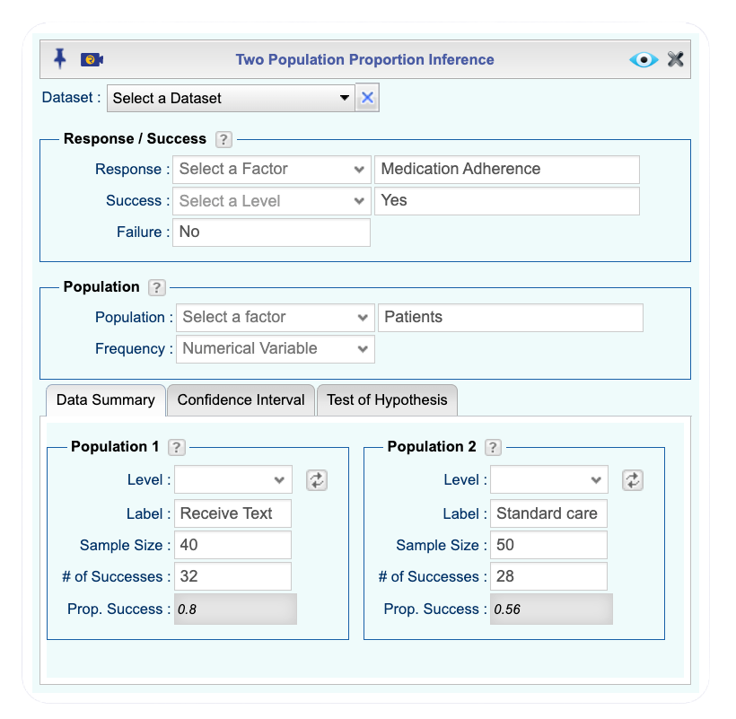
Click to expand the box below to see the Rguroo output.
Rguroo output: Two-Population Proportion Inference - Text Message Reminder Example
The p-value is shown in the Rguroo output graph labeled P-Value Graph: Large Sample z, Pooled SE (see Figure 9.61). In the left panel, labeled “Observed Data Scale”, the areas representing the \(p\)-value are shaded in red, and the p-value is 0.016395. This value is also reported in the results table.

Since the p-value is \(0.016 < 0.05,\) we reject \(H_0\) at the significance level \(\alpha =0.05.\) There is sufficient evidence in favor of \(H_a: p_1 - p_2 \neq 0.\) Therefore, the data provide sufficient evidence that adherence rates differ between the two approaches. Since the observed adherence rate is higher for the text message reminder group (80%) than for the standard care group (56%), the results suggest that text message reminders are associated with higher adherence.
Example 9.45 (Text Message Reminders: Hypothesis Test - Critical Region Example) For the text message reminder study, we want to test whether adherence rates differ. Recall:
- \(n_1 = 40,\) \(X_1 = 32,\) \(\hat{p}_1 = 0.80\)
- \(n_2 = 50,\) \(X_2 = 28,\) \(\hat{p}_2 = 0.56\)
- \(\hat{p}_1 - \hat{p}_2 = 0.24\)
- \(\hat{p} = 0.667\)
Hypotheses: \[ \begin{cases} H_0: p_1 - p_2 = 0\\ H_a: p_1 - p_2 \neq 0 \end{cases} \]
Using Rguroo, obtain the critical region for a test at significance level \(\alpha =0.05.\)
Based on the observed difference and the critical region in part (a), state the conclusion of the hypothesis test.
🔎 Solution
a. To perform this hypothesis test in Rguroo, follow the same steps given in the solution of Example 9.41. One difference is that in the Test of Hypothesis tab, for Alternative Hypothesis p1 − p2, you should select the != (not equal to) option because this is a two-tailed test, and set the Significance Level to 0.05. In addition, the values in the Basics dialog of Two Population Proportion Inference and in the Data Summary tab should match those shown in Figure 9.62.
Click to expand the box below to see the Rguroo output.
Rguroo output: Two-Population Proportion Inference - Text Message Reminder Example
Since this is a two-sided test, the 5% cutoff values \(c_1\) and \(c_2\) are determined so that \[ P(\hat{p}_1 - \hat{p}_2 \leq c_1 \text{ or } \hat{p}_1 - \hat{p}_2 \geq c_2) = 0.05, \; \text{assuming}\; p_1 = p_2. \]
From the Rguroo output graph labeled Critical Region Graph: Large Sample z, Pooled SE (shown in Figure 9.63), these cutoff values are \(c_1=-0.196\) and \(c_2=0.196,\) and are displayed at the bottom of the left panel labeled “Observed Data Scale”. Therefore, the critical region is \[ \hat{p}_1-\hat{p}_2 \leq -0.196 \qquad \text{or} \qquad \hat{p}_1-\hat{p}_2 \geq 0.196. \] This means that observed differences falling in either tail are sufficiently extreme to lead us to reject \(H_0\) at significance level \(\alpha=0.05.\)
![Two side-by-side plots illustrating a two-tailed test at a 5% significance level. The left panel shows the observed data scale for the proportion difference Receive Text minus Standard care with a normal curve centered at 0 and red shaded critical regions in both tails. The critical values are −0.196 and 0.196. The observed difference 0.24 is marked and lies in the right critical region. The right panel shows the standard normal z scale with red shaded critical regions in both tails and critical values −1.96 and 1.96. The observed z statistic 2.4 is marked and lies in the right critical region.](Rguroo_html_output/Proportion Inference/text_prop2_cr_docx/G_crTestPropz12.svg)
Since the observed difference \(\hat{p}_1-\hat{p}_2=0.24>0.196,\) it falls in the critical region, as shown by the green triangle inside the red-shaded region. Therefore, we reject \(H_0\) at significance level \(\alpha=0.05\) and conclude that there is sufficient evidence in favor of \(H_a:p_1-p_2\neq0.\)
The data therefore provide sufficient evidence that adherence rates differ between the two approaches. Since the observed adherence rate is higher for the text message reminder group (80%) than for the standard care group (56%), the results suggest that text message reminders are associated with higher adherence.
So far, in the examples above, we have performed two-population proportion inference using summarized data—namely, the sample sizes and the number of successes for each group. In practice, however, we often begin with raw data rather than pre-computed summaries. By raw data, we mean datasets where each individual observation is recorded as a separate row, with variables indicating group membership and the outcome for each case. The following example demonstrates how we can carry out two-population proportion inference directly from raw data using Rguroo.
Example 9.46 (GSS 2024: Hypothesis Test Using Raw Data) Consider the GSS marijuana legalization study. Use the GSS2024 to test whether the proportion of U.S. adults who support the legalization of marijuana differs between females and males. Define \(p_1\) as the proportion of females who support legalization and \(p_2\) as the proportion of males who support legalization.
Use significance level \(\alpha=0.05.\)
- Write the null and alternative hypotheses.
- Test using the p-value approach.
- Test using the critical region approach.
🔎 Solution
a. The null and alternative hypotheses are:
\[ \begin{cases} H_0: p_1 - p_2 = 0\\ H_a: p_1 - p_2 \neq 0, \end{cases} \]
Click to expand the box below to see how to use the Proportion Inference function in Rguroo to answer this question.
Before you begin: Make sure you have already imported the GSS2024 dataset into your Rguroo account, as shown here.
Open the Analytics toolbox in Rguroo.
From the Analysis dropdown, select Proportion Inference → Two Populations. This opens the Two Population Proportion Inference dialog.
From the Dataset dropdown, select the dataset GSS2024.
Fill in the Response/Success section of the dialog as follows:
- From the Response dropdown, select the factor Grass, the variable that indicates whether the respondents support legalization of marijuana.
- From the Success dropdown, select the success level Yes.
- In the Failure textbox, enter No (this is the default).
- (Optional) In the Response Label textbox, enter Legalize Marijuana. The label is usually a more descriptive version of the variable name.
In the Population section of the dialog, from the Population dropdown, select the variable Sex. You can optionally change the label for the population in the given textbox.
In the Data Summary tab, select Female from the Level dropdown for population 1, and Male from the Level dropdown for population 2. Then click the refresh icon to display the summary statistics for each group.
Click the Test of Hypothesis tab and enter the following:
- In the Alternative Hypothesis p1 - p2 dropdown, select != (not equal to) and enter 0 in the textbox.
- In the Methods section, select Large Sample z.
- Leave the Significance Level textbox at the default value of 0.05.
(Optional) Click the
button to open the Advanced Features dialog, and in the Test of Hypothesis Graph, select both P-Value and Critical Region. The default is P-Value; selecting Critical Region will also display the critical region.Click the preview icon
to view the output.Click the
button and save the result as GSS2024Prop2.
Rguroo Two-Population Proportion Inference and Advanced Features dialogs for the Marijuana Legalization example
![Screenshot of the Rguroo Two Population Proportion Inference dialog using the GSS2024 dataset, where the response variable is Legalize Marijuana with success defined as Yes and population defined by Sex, showing Population 1 as Female with sample size 204, successes 142, and proportion about 0.696, and Population 2 as Male with sample size 184, successes 140, and proportion about 0.761, with the Test of Hypothesis tab selected, alternative hypothesis p_1 - p_2 not equal to 0, significance level 0.05, Large Sample z method checked, and advanced features panel displaying options for P-Value Graph and Critical Region Graph.](Rguroo_dialogs/Proportion_inference/prop2-inference-gss2024_dialog.png)
Click to expand the box below to see the Rguroo output.
Rguroo output: Two-Population Proportion Inference - Marijuana Legalization Example
b. p-Value Approach:
The \(p\)-value measures the strength of evidence the data provide against \(H_0\) and in favor of \(H_a: p_1 - p_2 \neq 0.\) Because this is a two-sided test, differences at least as far from 0 as the observed difference of \(-0.064791,\) in either direction, are at least as supportive of \(H_a.\) Therefore, the p-value is \[ \text{p-value} = P\left(|\hat{p}_1-\hat{p}_2|\geq0.064791\right),\;\text{assuming}\; p_1=p_2. \]
This probability is shown in the Rguroo output graph labeled P-Value Graph: Large Sample z, Pooled SE (also shown in Figure 9.64). In the panel labeled “Observed Data Scale”, the areas representing to the \(p\)-value are shaded in red, and the p-value is 0.15268. This value is also reported in the results table.
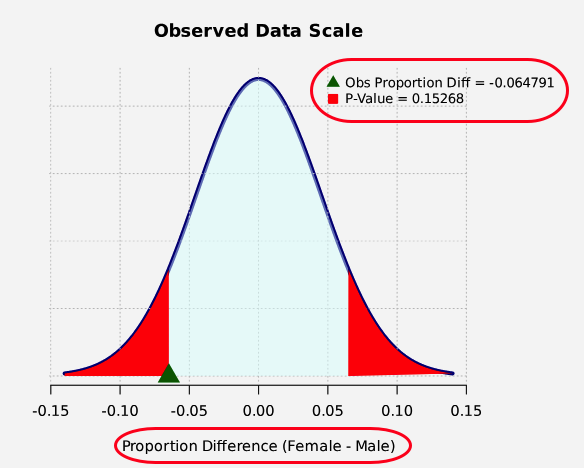
Since the p-value is \(0.15268 > 0.05,\) we fail to reject \(H_0\) at significance level \(\alpha = 0.05.\) There is insufficient evidence in favor of \(H_a: p_1 - p_2 \neq 0.\) Therefore, the data do not provide sufficient evidence that support for marijuana legalization differs between females and males.
c. Critical Region Approach:
Since this is a two-sided test, the critical values values \(c_1\) and \(c_2\) are determined so that \[ P(\hat{p}_1 - \hat{p}_2 \leq c_1 \text{ or } \hat{p}_1 - \hat{p}_2 \geq c_2)= 0.05, \;\text{assuming}\; p_1 = p_2 . \]
From the Rguroo output graph labeled Critical Region Graph: Large Sample z, Pooled SE (also shown in Figure 9.65), these cutoff values are \(c_1=-0.088794\) and \(c_2=0.088794.\) These values are displayed at the bottom of the panel labeled Observed Data Scale. Therefore, the critical region is \[ \hat{p}_1-\hat{p}_2\leq-0.088794 \qquad\text{or}\qquad \hat{p}_1-\hat{p}_2\geq0.088794. \] An observed difference that falls in either of these regions leads us to reject \(H_0\) at significance level \(\alpha=0.05.\)
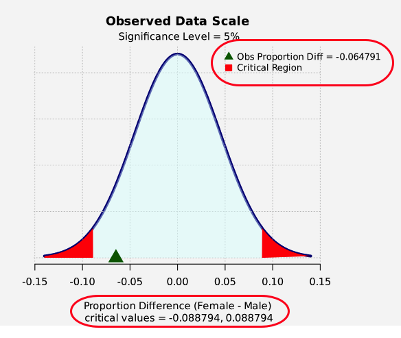
Since the observed difference \(\hat{p}_1 - \hat{p}_2 = -0.064791\) lies between the two critical values, it does not fall in the critical region, as shown by the green triangle outside the red critical region. Therefore, we fail to reject \(H_0\) at significance level \(\alpha = 0.05\) and conclude that there is not sufficient evidence in favor of \(H_a: p_1 - p_2 \neq 0.\)
Conclusion:
Both approaches lead to the same decision. At significance level \(\alpha = 0.05\) , the data do not provide sufficient evidence that the proportion who support marijuana legalization differs between females and males.
9.7.4 Homework for Section 9.7
For each of the following scenarios, complete these steps:
State the null and alternative hypotheses. In each case, clearly describe what the population proportions \(p_1\) and \(p_2\) represent in the context of the problem.
Calculate the observed sample proportions \(\hat{p}_1\) and \(\hat{p}_2\) and their difference \(\hat{p}_1 - \hat{p}_2.\) Based on this observed difference, does the sample data appear consistent with the alternative hypothesis?
Compute the pooled sample proportion \(\hat{p}\) and use it to obtain an estimate of the standard error of \(\hat{p}_1 - \hat{p}_2.\)
Check whether the large sample test is valid by verifying that \(n_1\hat{p} \geq 10,\) \(n_1(1-\hat{p}) \geq 10,\) \(n_2\hat{p} \geq 10,\) and \(n_2(1-\hat{p}) \geq 10.\) If these conditions are not satisfied, stop here and note that the large sample test is not appropriate for this scenario and skip parts e, f, and g.
Use Rguroo to conduct the test of hypothesis using the critical region approach. Does the observed sample difference fall in the critical region? Based on this, do you reject \(H_0\) at the 5% significance level?
Use Rguroo to obtain the \(p\)-value for the test of hypothesis. Is the \(p\)-value less than 0.05? Based on the \(p\)-value, do you reject \(H_0\)?
Write your conclusion in the context of the problem, stating what the results tell you about the scenario.
A researcher wants to determine whether male college students have a higher smoking rate than female college students. In a survey of 120 male students, 18 reported being regular smokers. Among 150 female students, 12 reported being regular smokers. Is there enough evidence to show that the proportion of male smokers is higher than the proportion of female smokers among college students? Test at the \(\alpha=0.05\) level.
A school district is evaluating whether a new reading program is more effective for students with previous tutoring than for those without. Of 85 students with previous tutoring, 68 passed the reading assessment. Of 92 students without previous tutoring, 59 passed the assessment. Is there enough evidence to show that the proportion of students passing the assessment is higher for those with previous tutoring than for those without? Test at the \(\alpha=0.05\) level.
A small clinic wants to compare the effectiveness of two different treatments for a skin condition. In a trial, 8 out of 25 patients receiving Treatment A showed improvement, while 12 out of 28 patients receiving Treatment B showed improvement. Is there enough evidence to show that the proportion of patients improving differs between the two treatments? Test at the \(\alpha=0.05\) level.
A coffee shop owner wants to know if customer satisfaction is higher during the morning shift than the evening shift. Of 45 morning customers surveyed, 38 reported being satisfied with their service. Of 52 evening customers surveyed, 35 reported being satisfied. Is there enough evidence to show that the proportion of satisfied customers is higher in the morning than in the evening? Test at the \(\alpha=0.05\) level.
Many high school students take the AP tests in different subject areas. In 2007, of the 211,693 students who took the calculus AB exam, 102,598 of them were female and 109,095 of them were male (“AP exam scores,” 2013). Is there enough evidence to show that the proportion of female students taking the calculus AB exam is different from the proportion of male students taking the calculus AB exam? Test at the \(\alpha=0.05\) level.
Are there more children diagnosed with Autism Spectrum Disorder (ASD) in states that have larger urban areas than in states that are mostly rural? In the state of Pennsylvania, a fairly urban state, there are 245 eight-year-olds diagnosed with ASD out of 18,440 eight-year-olds evaluated. In the state of Utah, a fairly rural state, there are 45 eight-year-olds diagnosed with ASD out of 2,123 eight-year-olds evaluated (“Autism and developmental,” 2008). Is there enough evidence to show that the proportion of children diagnosed with ASD in Pennsylvania is higher than the proportion in Utah? Test at the \(\alpha=0.01\) level.
A child dying from an accidental poisoning is a terrible incident. Is it more likely that a male child will get into poison than a female child? To find this out, data was collected that showed that out of 1,830 children between the ages of one and four who died from poisoning, 1,031 were males and 799 were females (Flanagan, Rooney & Griffiths, 2005). Do the data show that the proportion of male children dying of poisoning is higher than the proportion of female children? Test at the \(\alpha=0.01\) level.
Many high school students take the AP tests in different subject areas. In 2007, of the 144,796 students who took the biology exam, 84,199 of them were female. In that same year, of the 211,693 students who took the calculus AB exam, 102,598 of them were female (“AP exam scores,” 2013). Is there enough evidence to show that the proportion of female students taking the biology exam is different from the proportion of female students taking the calculus AB exam? Test at the \(\alpha=0.05\) level.
The General Social Survey (GSS) collects data through different survey modes, including in-person interviews and telephone interviews. Researchers want to investigate whether the survey mode affects responses to sensitive questions. Using the GSS2024 dataset, test whether the proportion of respondents who support the legalization of marijuana differs between those surveyed in person and those surveyed by phone. The variable Mode indicates the survey mode (In Person or Phone), and the variable Grass indicates support for marijuana legalization (Yes or No). Test at the 5% level. Note: The
Modevariable in the GSS2024 dataset includes three categories: In Person, Phone, and Web. When you select only the In Person and Phone groups in Rguroo for your analysis, Rguroo will automatically exclude respondents who completed the survey via the Web.
9.8 Confidence Interval for the Difference Between Two Population Proportions
In Section 9.7, we learned how to test whether two population proportions differ. For example, in the schema-based instruction study (Example 9.40), we found strong evidence that the new instructional approach produced higher mastery rates than traditional instruction. The hypothesis test told us that a difference exists, but it didn’t tell us how large that difference might be. Does the new approach improve mastery by 5 percentage points? 20 percentage points? 35 percentage points? The hypothesis test alone cannot answer this question.
This is where confidence intervals become valuable. A confidence interval for \(p_1 - p_2\) provides a range of plausible values for the true difference between the two proportions, addressing the question “How large is the difference?” It tells us not just that a difference exists, but also gives us insight into the magnitude and direction of that difference. For instance, a confidence interval might tell us: “We are 95% confident that the new approach improves mastery rates by somewhere between 4 and 36 percentage points compared to traditional instruction.” This additional information helps researchers, educators, and policymakers make more informed decisions.
Just as in the one-population case (Section 9.6), a confidence interval for \(p_1 - p_2\) can be derived by inverting hypothesis tests: given the observed difference \(\hat{p}_1 - \hat{p}_2,\) the \((1-\alpha) \times 100\%\) interval consists of all values \(d\) for which we would fail to reject \(H_0: p_1 - p_2 = d\) in a two-sided test at significance level \(\alpha.\) And as in the one-population case, the confidence level describes the long-run behavior of the construction method, not any single interval — a 95% method captures the true difference in 95% of repeated samples. In practice we use a direct formula based on the normal approximation rather than carrying out the test inversion by hand, but the logic is the same.
9.8.1 Large Sample Confidence Interval for \(p_1 - p_2\)
When the large sample conditions are satisfied, we can construct a confidence interval for \(p_1 - p_2\) using the normal approximation. Recall from Section 9.7.2 that when both samples are sufficiently large, the difference in sample proportions \(\hat{p}_1 - \hat{p}_2\) follows an approximately normal distribution.
However, there is an important difference between constructing a confidence interval and conducting a hypothesis test. In hypothesis testing, we assumed \(H_0: p_1 = p_2\) was true, which allowed us to use a pooled estimate \(\hat{p}\) for the common proportion. When constructing a confidence interval, we do not assume the proportions are equal—in fact, we’re trying to estimate how different they are! Therefore, we cannot use the pooled proportion.
Instead, for a confidence interval, we estimate the standard error using the individual sample proportions \(\hat{p}_1\) and \(\hat{p}_2\):
\[\text{SE}(\hat{p}_1 - \hat{p}_2) = \sqrt{\frac{\hat{p}_1(1-\hat{p}_1)}{n_1} + \frac{\hat{p}_2(1-\hat{p}_2)}{n_2}}.\]
This is called the unpooled standard error, or simply the standard error, because we do not pool the two samples together.
The large sample conditions for a confidence interval are the same as those for hypothesis testing. We need at least 10 successes and at least 10 failures in each group:
\[n_1\hat{p}_1 \geq 10, \quad n_1(1-\hat{p}_1) \geq 10, \quad n_2\hat{p}_2 \geq 10, \quad n_2(1-\hat{p}_2) \geq 10.\]
When these conditions are satisfied, the \((1-\alpha) \times 100\%\) confidence interval for \(p_1 - p_2\) takes the form:
\[(\hat{p}_1 - \hat{p}_2) \pm z^* \times \text{SE}(\hat{p}_1 - \hat{p}_2),\]
where \(z^*\) is the critical value from the standard normal distribution corresponding to the desired confidence level, just as in the one-population case.
Common critical values remain the same:
| Confidence Level | \(\alpha\) | \(z^*\) |
|---|---|---|
| 90% | 0.10 | 1.645 |
| 95% | 0.05 | 1.960 |
| 99% | 0.01 | 2.576 |
Let’s see how to construct and interpret confidence intervals for the difference between two proportions using our earlier examples.
9.8.2 Relationship Between Confidence Intervals and Hypothesis Tests
There is an important connection between confidence intervals and two-sided hypothesis tests. A \((1-\alpha)\times100%\) confidence interval and a two-sided hypothesis test at significance level \(\alpha\) lead to the same decisions about the null value \(p_1-p_2=0\):
If a \((1-\alpha) \times 100\%\) confidence interval for \(p_1 - p_2\) does not contain 0, then 0 is not a plausible value for \(p_1-p_2,\) and we reject \(H_0: p_1 - p_2 = 0\) at significance level \(\alpha\) in a two-sided test.
If a \((1-\alpha) \times 100\%\) confidence interval for \(p_1 - p_2\) contains 0, 0 is a plausible value for \(p_1-p_2,\) and we fail to reject \(H_0: p_1 - p_2 = 0\) at significance level \(\alpha\) in a two-sided test.
This relationship provides a quick way to connect the confidence interval to the corresponding two-sided hypothesis test. As noted, however, confidence intervals provide more information than hypothesis tests alone. They tell us not just whether the data provide evidence of a difference, but also which values are plausible for the size and direction of the difference.
This direct relationship applies only to two-sided hypothesis tests. For a one-sided hypothesis test, you should not use this confidence interval rule to determine whether to reject \(H_0.\)
Example 9.47 (Schema-Based Instruction: Confidence Interval) Recall Example 9.40. In the schema-based instruction study, \(n_1=50\) students were assigned to the new approach and \(n_2=50\) to traditional instruction. After the intervention, 34 students in the new approach group achieved mastery (\(\hat{p}_1 = 0.68\)), while 24 students in the traditional instruction group achieved mastery (\(\hat{p}_2 = 0.48\)).
- Check whether the large sample conditions are satisfied for constructing a confidence interval.
- Use Rguroo’s Two-Population Proportion inference function to construct a 95% confidence interval for the true difference in mastery rates between the two approaches, and interpret the interval in the context of the problem.
🔎 Solution
a. We check the large sample conditions using the individual sample proportions:
- Group 1 (new approach): \(n_1\hat{p}_1 = 50 \times 0.68 = 34 \geq 10\) and \(n_1(1-\hat{p}_1) = 50 \times 0.32 = 16 \geq 10\)
- Group 2 (traditional): \(n_2\hat{p}_2 = 50 \times 0.48 = 24 \geq 10\) and \(n_2(1-\hat{p}_2) = 50 \times 0.52 = 26 \geq 10\)
All four conditions are satisfied, so the large-sample normal approximation is appropriate for constructing the confidence interval.
b. Click to expand the box below to see how to use the Proportion Inference function in Rguroo to obtain a large sample confidence interval for this problem.
Open the Analytics toolbox in Rguroo.
From the Analysis dropdown, select Proportion Inference → Two Populations. This opens the Two Population Proportion Inference dialog.
In the Response/Success section of the dialog, enter the same information as in Example 9.40:
- Response Label: Improves Mastery
- Success Label: Yes
- Failure Label: No
In the Population section, enter Seventh Graders.
In the Data Summary tab, enter the data for both populations:
- Population 1: Label: New, Sample Size: 50, # of Successes: 34
- Population 2: Label: Traditional, Sample Size: 50, # of Successes: 24
Click on the Confidence Interval tab and specify the following:
- In the Confidence Level textbox, enter 0.95. This is the default value corresponding to 95% confidence.
- In the Methods section, select the checkbox Large Sample z.
Click the preview icon
to view the output.Click the
button and save the result as SchemaCI.
Rguroo Two-Population Proportion dialog for Schema-Based Instruction confidence interval

Click to expand the box below to see the Rguroo output.
Rguroo output: Two-Population Proportion Confidence Interval - Schema-Based Instruction
From the Rguroo output, the 95% confidence interval for \(p_1 - p_2\) is approximately \((0.0105, 0.3895).\)
Interpretation: We are 95% confident that the true difference in mastery rates (new approach minus traditional instruction) is between about 0.011 and 0.379, or between about 1.1 and 38.9 percentage points. Since the entire interval is positive the data suggest that the mastery rate is higher for the new instructional approach than for traditional instruction.
Example 9.48 (Text Message Reminders: Confidence Interval) Recall Example 9.44. In the text message reminder study, \(n_1=40\) patients received text reminders and \(n_2=50\) received standard care. After three months, 32 patients in the text reminder group had good adherence (\(\hat{p}_1 = 0.80\)), while 28 patients in the standard care group had good adherence (\(\hat{p}_2 = 0.56\)).
- Check whether the large sample conditions are satisfied for constructing a confidence interval.
- Use Rguroo’s Two-Population Proportion inference function to construct a 95% confidence interval for the true difference in adherence rates between the two approaches, and interpret the interval in the context of the problem.
- Compare this confidence interval to the hypothesis test result in Example 9.44. Are they consistent?
Example 9.49 (Smoking Cessation: Confidence Interval) Recall Example 9.42. In the smoking cessation study, \(n_1=60\) employees received nicotine patches and \(n_2=60\) participated in the self-guided program. After six months, 24 employees in the nicotine patch group had quit smoking (\(\hat{p}_1 = 0.40\)), while 30 in the self-guided group had quit (\(\hat{p}_2 = 0.50\)).
- Check whether the large sample conditions are satisfied for constructing a confidence interval.
- Use Rguroo’s Two-Population Proportion inference function to construct a 95% confidence interval for the true difference in quit rates between the two approaches, and interpret the interval in the context of the problem.
Example 9.50 (GSS 2024: Gender and Marijuana Legalization - Confidence Interval Using Raw Data) Recall Example 9.46. The GSS 2024 sample included \(n_1=204\) females, of whom 142 support marijuana legalization (\(\hat{p}_1 \approx 0.696\)), and \(n_2=184\) males, of whom 140 support legalization (\(\hat{p}_2 \approx 0.761\)).
- Check whether the large sample conditions are satisfied for constructing a confidence interval.
- Use Rguroo’s Two-Population Proportion inference function with the GSS2024 dataset to construct a 95% confidence interval for the true difference in support for marijuana legalization between females and males, and interpret the interval in the context of the problem.
- Compare this confidence interval to the hypothesis test result in Example 9.46. Are they consistent?
 The dataset for this example is available in the Rguroo dataset repository Kozak, with the dataset name GSS2024.
The dataset for this example is available in the Rguroo dataset repository Kozak, with the dataset name GSS2024.
Code book for Dataset GSS2024 is given here.
🔎 Solution
a. We check the large sample conditions using the individual sample proportions:
- Group 1 (females): \(n_1\hat{p}_1 = 204 \times 0.696 \approx 142 \geq 10\) and \(n_1(1-\hat{p}_1) = 204 \times 0.304 \approx 62 \geq 10\)
- Group 2 (males): \(n_2\hat{p}_2 = 184 \times 0.761 \approx 140 \geq 10\) and \(n_2(1-\hat{p}_2) = 184 \times 0.239 \approx 44 \geq 10\)
All conditions are comfortably satisfied, the large-sample normal approximation is appropriate for constructing the confidence interval.
b. Click to expand the box below to see how to use the Proportion Inference function in Rguroo to obtain a confidence interval from raw data.
Before you begin: Make sure you have already imported the GSS2024 dataset into your Rguroo account, as shown here.
Open the Analytics toolbox in Rguroo.
From the Analysis dropdown, select Proportion Inference → Two Populations. This opens the Two Population Proportion Inference dialog.
From the Dataset dropdown, select the dataset GSS2024.
Fill in the Response/Success section of the dialog as follows:
- From the Response dropdown, select the factor Grass.
- From the Success dropdown, select the success level Yes.
- In the Failure textbox, enter No.
- (Optional) In the Response Label textbox, enter Legalize Marijuana.
In the Population section of the dialog, from the Population dropdown, select the variable Sex.
In the Data Summary tab, select Female from the Level dropdown for population 1, and Male from the Level dropdown for population 2. Then click the refresh icon to display the summary statistics for each group.
Click on the Confidence Interval tab and specify the following:
- In the Confidence Level textbox, enter 0.95.
- In the Methods section, select the checkbox Large Sample z.
Click the preview icon
to view the output.Click the
button and save the result as GSS2024CI.
Rguroo Two-Population Proportion dialog for GSS2024 confidence interval

Click to expand the box below to see the Rguroo output.
Rguroo output: Two-Population Proportion Confidence Interval - GSS 2024 Marijuana Legalization
From the Rguroo output, the 95% confidence interval for \(p_1 - p_2\) is \((-0.153008, 0.0234262).\)
Interpretation: We are 95% confident that the true difference in support for marijuana legalization (females minus males) is between \(-0.1530\) (about \(-15.3\) percentage points) and \(0.0234\) (about \(2.3\) percentage points). Negative values indicate lower support among females than males, while positive values indicate higher support among females. Since the interval includes 0, the data are consistent with no difference in the population proportions who support marijuana legalization between females and males.
Note that the observed difference was \(\hat{p}_1 - \hat{p}_2 \approx -0.065,\) meaning the sample showed about 6.5 percentage points lower support among females. However, the confidence interval indicates that plausible values for the true difference range from about 15 percentage points lower support among females to about 2 percentage points higher support among females.
c. This confidence interval is consistent with our hypothesis test result in Example 9.46. In that test, we failed to reject \(H_0: p_1 - p_2 = 0\) at significance level \(\alpha=0.05,\) with a p-value of 0.153. The value 0 lies inside the 95% confidence interval, which corresponds to failing to reject \(H_0\) in the corresponding two-sided test. Both the hypothesis test and the confidence interval lead us to the same conclusion: the data do not provide sufficient evidence that support for marijuana legalization differs between females and males.
9.8.3 Homework for Section 9.8
For each of the scenarios described below, answer the following:
Check whether the large sample conditions are satisfied using the individual sample proportions. Based on your answer, determine whether the large sample normal approximationis appropriate for constructing the confidence interval.
Use Rguroo’s Two-Population Proportion inference function with the Large Sample z option to obtain a 95% confidence interval for \(p_1 - p_2.\) Interpret the interval in the context of the problem.
Does the confidence interval contain 0? What does this tell you about whether \(p_1-p_2=0\) is a plausible value for the difference in population proportions? If the hypothesis test you conducted in the homework for Section 9.7 was two-sided, compare your confidence interval conclusion with the hypothesis test conclusion. Are they consistent?
College Student Smoking Rates by Gender Recall Problem 1 from Section 9.7. In a survey of 120 male students, 18 reported being regular smokers. Among 150 female students, 12 reported being regular smokers. Construct a 95% confidence interval for the difference in smoking rates between male and female college students.
Reading Program Effectiveness by Prior Tutoring Recall Problem 2 from Section 9.7. Of 85 students with previous tutoring, 68 passed the reading assessment. Of 92 students without previous tutoring, 59 passed the assessment. Construct a 95% confidence interval for the difference in pass rates between students with and without previous tutoring.
Skin Treatment Effectiveness Comparison Recall Problem 3 from Section 9.7. In a trial, 8 out of 25 patients receiving Treatment A showed improvement, while 12 out of 28 patients receiving Treatment B showed improvement. Construct a 95% confidence interval for the difference in improvement rates between the two treatments.
Coffee Shop Customer Satisfaction by Shift Recall Problem 4 from Section 9.7. Of 45 morning customers surveyed, 38 reported being satisfied with their service. Of 52 evening customers surveyed, 35 reported being satisfied. Construct a 95% confidence interval for the difference in satisfaction rates between morning and evening shifts.
AP Calculus AB Exam by Gender Recall Problem 5 from Section 9.7. In 2007, of the 211,693 students who took the calculus AB exam, 102,598 were female and 109,095 were male. Construct a 95% confidence interval for the difference in the proportion of female versus male students taking the calculus AB exam. (Note: For this problem, let \(p_1\) represent the proportion of all AP calculus AB test-takers who are female, and \(p_2\) represent the proportion who are male.)
Autism Spectrum Disorder: Pennsylvania vs. Utah Recall Problem 6 from Section 9.7. In Pennsylvania, 245 eight-year-olds were diagnosed with ASD out of 18,440 evaluated. In Utah, 45 eight-year-olds were diagnosed with ASD out of 2,123 evaluated. Construct a 99% confidence interval for the difference in ASD diagnosis rates between Pennsylvania and Utah.
Child Poisoning Deaths by Gender Recall Problem 7 from Section 9.7. Out of 1,830 children between the ages of one and four who died from poisoning, 1,031 were males and 799 were females. Construct a 99% confidence interval for the difference in the proportion of poisoning deaths between male and female children.
AP Biology vs. Calculus AB Exam by Gender Recall Problem 8 from Section 9.7. In 2007, of the 144,796 students who took the biology exam, 84,199 were female. Of the 211,693 students who took the calculus AB exam, 102,598 were female. Construct a 95% confidence interval for the difference in the proportion of female students between these two exams. (Note: For this problem, let \(p_1\) represent the proportion of biology test-takers who are female, and \(p_2\) represent the proportion of calculus AB test-takers who are female.)
GSS 2024: Marijuana Legalization by Survey Mode Recall Problem 9 from Section 9.7. Using the GSS2024 dataset, construct a 95% confidence interval for the difference in the proportion of respondents who support marijuana legalization between those surveyed in person and those surveyed by phone. The variable Mode indicates the survey mode (In Person or Phone), and the variable Grass indicates support for marijuana legalization (Yes or No).
 The dataset for this exercise is available in the Rguroo dataset repository Kozak, with the dataset name GSS2024.
The dataset for this exercise is available in the Rguroo dataset repository Kozak, with the dataset name GSS2024.
Code book for Dataset GSS2024 is given here.
Note: The Mode variable in the GSS2024 dataset includes three categories: In Person, Phone, and Web. When you select only the In Person and Phone groups in Rguroo for your analysis, Rguroo will automatically exclude respondents who completed the survey via the Web.
Additional Practice Problems:
For the following problems, construct the specified confidence interval and interpret it in context:
Vaccine Effectiveness Study A clinical trial randomly assigned 500 participants to receive a new vaccine and 500 to receive a placebo. After exposure, 12 vaccinated participants developed the disease, while 48 placebo recipients developed the disease. Construct a 95% confidence interval for the difference in disease rates between the two groups.
Online vs. In-Person Course Success A university compared success rates for a statistics course offered online versus in-person. Of 180 online students, 126 earned a grade of C or better. Of 220 in-person students, 165 earned a grade of C or better. Construct a 90% confidence interval for the difference in success rates between the two delivery methods.
Political Poll on Policy Support A political poll asked 400 urban residents and 350 rural residents whether they support a new environmental policy. Among urban residents, 248 expressed support. Among rural residents, 182 expressed support. Construct a 95% confidence interval for the difference in support rates between urban and rural residents.
a. To check the large sample condition, we compute the expected number of successes and expected number of failures under \(H_0.\) Using the boundary value \(p_0 = 0.36\):
\[np_0 = 35 \times 0.36 = 12.6 \geq 10\]
\[n(1 - p_0) = 35 \times 0.64 = 22.4 \geq 10.\]
Both conditions are satisfied, so the large sample normal approximation is appropriate for this example.
b. We have \(x_{\text{obs}}=21\) and \(n=35,\) which gives \[ \hat{p}_{\text{obs}}=\frac{21}{35}=0.60. \] Since this is a two-sided alternative, values of \(\hat{p}\) far from \(p_0\) in either direction count as evidence against \(H_0.\) The observed proportion \(\hat{p}_{\text{obs}}=0.60\) lies \(0.60-0.36=0.24\) above \(p_0,\) so a value equally far below \(p_0\) — namely \(0.36-0.24=0.12\) — provides just as much evidence against \(H_0.\) Since \(p_0=0.36,\) and \(\hat{p}_{\text{obs}}=0.60,\) the \(H_a\) support is given by
\[ \textbf{H}_a\ \textbf{Support:}\;\; \hat{p} \geq 0.60 \text{ or } \hat{p} \leq 0.12.\]
c. The p-value is computed as \[ \begin{aligned} \text{p-value} &= P\left(\hat{p} \le 0.12\right) + P\left(\hat{p} \ge 0.60\right) \\ &= 2\times P\left(\hat{p} \ge 0.60\right), \qquad \text{assuming } p=0.36. \end{aligned}\] The last equalty holds, since the normal distribution is symmetric about \(p_0=0.36,\)
d. Click to expand the box below to see how to use the Proportion Inference function to obtain the p-value.
Open the Analytics toolbox in Rguroo.
From the Analysis dropdown, select Proportion Inference → One Population. This opens the One Population Proportion Inference dialog.
In the Data section of the dialog, enter the following:
In the Test of Hypothesis section of the dialog, enter the following:
Click the preview icon to view the output.
to view the output.
Click the button and save the result as SocialMediaNews.
button and save the result as SocialMediaNews.
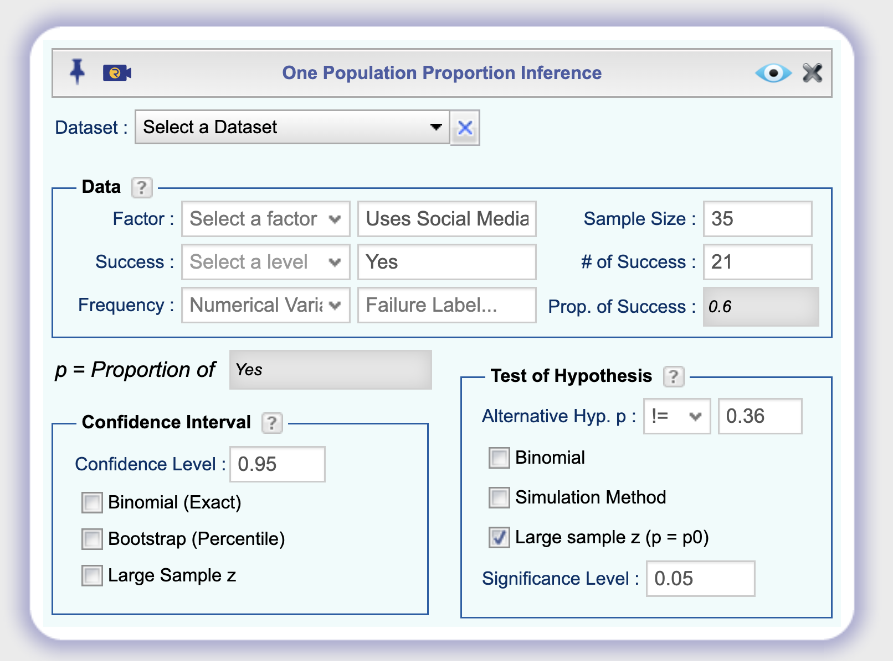
Click to expand the box below to see the Rguroo output.
Figure 9.8 is the p-value graph from the Rguroo output. The left panel shows the p-value graph on the scale of the data. The red colored areas in both tails correspond to the \(H_a\) support, consisting of all sample proportions \(\hat{p} \le 0.12\) and \(\hat{p} \ge 0.6.\) The area under the curve over these regions is the p-value 0.003096. Since this p-value is less than the significance level of 0.01, we reject \(H_0\) and conclude that there is sufficient evidence to support the claim that the proportion of students who use social media as their news source is not 36%.